2.1 L’organisation d’une base de données : le modèle relationnel
Programme
Pédagogie
Compétences attendues
- Interpréter un schéma relationnel
- Vérifier les règles du modèle relationnel
- Adapter un schéma relationnel à un besoin d’évolution d’une base de données
Savoirs associés
- Collecte et sélection de données
- Dépendances fonctionnelles
- Modèle relationnel
- Normalisation des relations et schéma relationnel
Plan
- Cours 2.1.1 Qu’est-ce qu’une base de données ? 2.1.2 L’organisation des données 2.1.3 Le modèle relationnel 2.1.4 Le modèle relationnel — exposition à fusionner
- Synthèse
Mots clés
Attribut • Clé primaire • Dépendance fonctionnelle • Dictionnaire des données • Domaine de valeurs • Logiciel • Modèle relationnel • Paramètre • Redondance • Relation universelle • SGBDR • Schéma relationnel • Traitement
Comment structurer une base de données ? Comment retenir les données pertinentes ? Comment les relier ? L’étude des dépendances fonctionnelles par l’élaboration d’un graphe ou la normalisation des relations permet de construire le modèle relationnel, ossature de la future base de données.
Cours
2.1.1 Qu’est-ce qu’une base de données ?
A savoir
Imaginez que vous gérez une bibliothèque avec des milliers de livres. Vous pourriez les empiler en vrac dans une pièce, mais ce serait le chaos ! Impossible de retrouver un livre rapidement. Alors vous les rangez dans des étagères, par catégories, avec un système de classement. Eh bien, une base de données, c’est exactement ça, mais pour les données informatiques.
Définition
- Une base de données (ou BDD), c’est un système organisé qui permet de :
- Stocker de grandes quantités d’informations ;
- Organiser ces informations de manière structurée ;
- Retrouver facilement et rapidement ce qu’on cherche ;
- Modifier ou supprimer des données quand c’est nécessaire.
Exemples
- Vous utilisez des bases de données tous les jours sans le savoir :
- Netflix : stocke vos films, séries, vos préférences ;
- Facebook/Instagram : vos profils, photos, amis, messages ;
- Amazon : produits, commandes, clients, stocks ;
- Le campus : notes, emplois du temps, informations des étudiants.
Organisation
- Prenons l’exemple d’une base de données pour un site e-commerce : Table CLIENTS
| ID | Nom | Prenom | |
|---|---|---|---|
| 0051 | Dupont | Marie | marie.dupont@gmail.com |
| 0127 | Martin | Paul | paulmartin@yahoo.fr |
Table COMMANDES
| ID | ID_Client | Date | Montant |
|---|---|---|---|
| 0325 | 0051 | 15/01/2025 | 59 € |
| 0326 | 0127 | 20/01/2025 | 120 € |
- Les tables sont reliées entre elles : ici l’ID_Client fait le lien entre une commande et le client qui l’a passé.
Les principaux acteurs
- Pour travailler avec une base de données, on a besoin de :
- Le SGBD (Système de Gestion de Base de Données) : c’est le logiciel qui gère tout (exemples : MySQL, PostgreSQL, Oracle, MongoDB, etc.) ;
- Le langage SQL : pour communiquer avec la base (SELECT, INSERT, UPDATE, DELETE, etc.) ;
- L’application : votre site web ou logiciel qui interroge la base.
A retenir
Une base de données, c’est :
- Un entrepôt organisé pour vos données ;
- Rapide pour chercher et récupérer l’info ;
- Sécurisé et fiable ;
- Structuré avec des relations entre les données ;
- Indispensable pour toute application moderne.
2.1.2 L’organisation des données
Le rôle et le fonctionnement des bases de données
- Une organisation doit pouvoir conserver de façon structurée les informations utiles aux différents traitements des processus ;
- Les bases de données relationnelles (BDR), épines dorsales des SI actuels, jouent ce rôle et mémorisent les informations qui y sont décomposées, organisées sous forme de données et stockées ;
- Il est donc possible de compléter, de modifier, d’interroger et d’exploiter ces données en fonction des besoins des utilisateurs.
Définition
Le système de gestion de base de données relationnelle (SGBDR) prend en charge différentes bases de données qui interagissent.
La collecte et la sélection des données
Les objectifs de la collecte
- Il est inutile de stocker, dans une base de données, des informations qui ne seront pas mises en œuvre dans un processus ou qui n’interviendront pas dans un traitement ;
- Il faut donc choisir les données utiles en réalisant des entretiens, en analysant des documents ;
- Le travail d’analyse peut mettre en évidence des ambiguïtés à traiter par :
- L’individualisation des polysèmes (données qui ont le même nom mais pas la même signification) en attribuant deux libellés différents ;
- La conservation d’une donnée pour les synonymes (données qui ont la même signification mais des noms différents dans plusieurs documents).
A savoir
Le recensement des règles de gestion pour l’obtention des données calculées est important : il permet de vous assurer que vous n’oubliez pas de données élémentaires. Vous pouvez éventuellement choisir de conserver une donnée calculée pour répondre à un impératif de gestion.
Exemple
Le code du client et celui du fournisseur ne peuvent être tous deux référencés par le nom « Code ». La référence et le code d’un produit représentent la même donnée que l’on peut nommer « référence_produit ». Les données doivent être élémentaires : elles doivent être utiles en l’état, sans être scindées et ne pas résulter d’un calcul à intégrer à un traitement.
Exemple
Une adresse est le plus souvent séparée en trois éléments, l’adresse_rue (10 rue Amiral Courbet), l’adresse_ville (LORIENT) et le code_postal (56100). Le montant TTC d’un produit peut être retrouvé en appliquant un taux de TVA au montant HT. Ce taux ne sera pas conservé.
Le recueil des informations et l’élaboration du dictionnaire des données
Définitions
- Un dictionnaire des données est un document qui regroupe les données élémentaires et constitue donc un référentiel pour élaborer la base, il la décrit ;
- Un paramètre est une donnée susceptible d’intervenir dans les calculs, dont la valeur est stable (à moyen terme) et unique.
- Les paramètres peuvent être clairement identifiés dans le dictionnaire alors que les constantes (données permanentes) ne le sont pas.
Exemple
Le dictionnaire reprend le taux de TVA (paramètre) mais pas l’adresse de l’entreprise ou sa désignation (constantes).
- Forme
- Le dictionnaire des données prend le plus souvent la forme d’un tableau à quatre colonnes contenant le nom, le code et le type de donnée ainsi que d’éventuels commentaires ;
- Le type décrit la nature des valeurs associées à une donnée ;
- Plusieurs typologies existent, il conviendra a minima de différencier les types numériques (réels, entiers, monétaires, dates…), alphabétiques (ou alphanumériques) et booléens (logiques).
- Établissement du dictionnaire
- Il est créé en respectant trois étapes :
- Le recensement des données. Il consiste à attribuer à chaque donnée un code et un nom significatif ;
- L’indication du type de chaque donnée et de la règle de calcul éventuelle ou de toute autre observation utile ;
- La sélection des données élémentaires par la résolution des ambiguïtés éventuelles et la suppression des données calculées et des paramètres.
Exemple
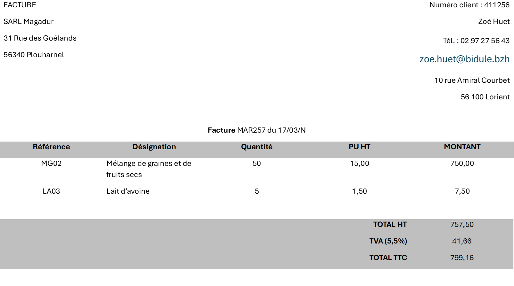
Le dictionnaire des données correspondant à la commande de l’entreprise Magadur est le suivant :| Code donnée | Nom Donnée | Type | Commentaire |
|---|---|---|---|
| NumCli | Numéro du client | Numérique | Séquentiel |
| NomCli | Nom du client | Texte | |
| PrenomCli | Prénom du client | Texte | |
| AdrRueCli | Adresse rue du client | Texte | |
| CPCli | Code postal du client | Texte | 5 caractères |
| AdrVilleCli | Adresse ville du client | Texte | |
| TelCli | Téléphone du client | Texte | Format 33-/—/—/—/— |
| MailCli | mail du client | Texte | |
| NumFact | Numéro de la facture | Texte | |
| DateFact | Date facture | Date | Format date jj/mm/aa |
| RefProd | Référence du produit | Texte | |
| Désignation | Désignation du produit | Texte | |
| Quantité | Quantité du produit | Numérique | Réel, deux décimales |
| PUHT | Prix unitaire HT du produit | Numérique | Réel, deux décimales |
| TauxTVA | Taux de TVA | Numérique | Réel, deux déci |
Seules les données utilisables dans les calculs et les numéros séquentiels (relatifs à des éléments qui se suivent dans un ordre préétabli) sont de type numérique. Le taux de TVA est un paramètre, il n’est pas inclus dans le dictionnaire mais aurait pu l’être. Les montants par produits, la TVA et les totaux sont calculés. Conformément à la règle, ils ne sont pas identifiés dans ce dictionnaire car ce ne sont pas des données à stocker.
La structuration des données
Les objectifs de la structuration
- Les données élémentaires doivent être organisées pour être traitées aisément ;
- Cette organisation doit être pertinente et mettre en évidence les liens entre les données pour obtenir les informations nécessaires à l’organisation ;
- Elles forment ensemble, quand elles se complètent, des objets matériels ou immatériels du système d’information ;
- L’utilisation d’une structure de données appropriée simplifie les bases qui en découlent, ce qui contribue à supprimer les erreurs et anomalies ;
- La future base, ainsi structurée, pourra alors traiter les données automatiquement de façon rapide et efficace.
Les attributs
Définition
Un attribut correspond au plus petit élément d’information manipulable.
- Un nom d’attribut permet de décrire les données élémentaires, elles prennent alors des valeurs et un sens dans le système d’information (SI) étudié ;
- L’organisation des attributs permet donc de structurer les données.
Exemple
L’attribut « Nomcli » prend diverses valeurs comme ici « Huet », il caractérise le client et a donc une signification dans le SI de l’entreprise Magadur.
- L’ensemble des valeurs possibles pour un attribut représente le domaine de valeurs.
Les dépendances fonctionnelles
- Pourquoi parler de dépendances fonctionnelles ?
- Imaginez une base de données comme un tableau Excel géant où vous stockez des informations sur vos clients, vos produits ou vos commandes. Pour que cette base soit fiable et facile à utiliser, il faut organiser les données de manière logique ;
- Les dépendances fonctionnelles (DF) sont des règles qui permettent de :
- Éviter les redondances (ex. : répéter 10 fois l’adresse d’un même client) ;
- Garantir la cohérence (ex. : si le code postal change, il doit être mis à jour partout) ;
- Optimiser la structure de la base pour des requêtes plus rapides.
Définition
Une dépendances fonctionnelle est une relation entre deux attributs (colonnes) d’une table. On note : X → Y (se lit “X détermine Y” ou “Y dépend fonctionnellement de X”).
Exemple
Prenons une table
Clientsavec les colonnes :
N°Client(ex. : C001, C002)Nom(ex. : Dupont, Martin)Ville(ex. : Paris, Lyon) Ici,N°Client → Nom:- Si je connais le
N°Client(ex. : C001), je peux trouver un seulNomassocié (ex. : Dupont).- À l’inverse,
Nom → N°Clientn’est pas valide : deux clients peuvent s’appeler “Dupont” !
- Règles clés à retenir
- Pour qu’une dépendance X → Y soit valide :
- Unicité : à chaque valeur de X correspond une seule valeur de Y (pas d’ambiguïté).
- Exemple valide :
N°Client → Ville(un client a une seule ville) ; - Exemple invalide :
Ville → N°Client(une ville peut avoir plusieurs clients).
- Stabilité dans le temps : la relation doit toujours être vraie, même si les données changent.
- *Exemple *:
CodePostal → Villeest généralement stable (un code postal = une ville).
- Minimalité : X doit être le plus petit ensemble possible pour déterminer Y.
- *Exemple *: si
N°Client + Nom → Villemais queN°Client → Villesuffit, la première DF n’est pas minimale.
- Pour qu’une dépendance X → Y soit valide :
- A quoi ça sert ?
- Les dépendances fonctionnelles sont utilisées pour normaliser une base de données, c’est-à-dire l’organiser en tables sans anomalies ;
Exemple
N° Commande N°Client NomClient Ville Client Produit CMD1 C001 Dupont Paris Stylo CMD2 C001 Dupont Paris Cahier CMD3 C002 Martin Lyon Gomme Anomalies :
- Redondance : “Dupont” et “Paris” sont répétés pour chaque commande du client C001 ;
- Risque d’incohérence : si Dupont déménage à Marseille, il faut modifier toutes ses lignes. Solution : appliquer les DF :
- On identifie les DF :
N°Client → NomClient, VilleClient(un client a un nom et une ville uniques) ;N°Commande → N°Client, Produit (une commande est liée à un client et un produit).
- On sépare en 2 tables :
- Table
Clients:
N°Client NomClient VilleClient C001 Dupont Paris C002 Martin Lyon
- Table
Commandes:
N°Commande N°Client Produit CMD1 C001 Stylo CMD2 C001 Cahier CMD3 C002 Gomme Avantages :
- Plus de redondance ;
- Mise à jour facile (ex. : changer la ville de Dupont en une seule fois).
- Résumé
| Concept | Définition | Exemple |
|---|---|---|
| Dépendance X → Y | Y est déterminé de manière unique par X | N°Client → Ville |
| Normalisation | Organisation des données pour éviter redondances et anomalies | Séparer Clients et Commandes. |
| Clé primaire | Attribut (ou groupe) qui identifie uniquement une ligne | N°Client |
Mise en pratique
Cas pratique
2.1.3 Le modèle relationnel
Les grands principes
Définitions
- Un modèle est une simplification de la réalité qui facilite sa compréhension. Le modèle doit être clair, rigoureux et aisément interprétable ; il intègre les éléments fondamentaux qui expliquent un phénomène ou une situation ;
- Développé par l’informaticien britannique Edgar Frank Codd (1923-2003), le modèle relationnel représente l’ensemble des relations d’un système d’information.
- Le modèle relationnel peut être élaboré à partir du graphe des dépendances fonctionnelles.
Les relations
- Un ensemble d’attributs ayant la même source de dépendance fonctionnelle, et donc associés de façon significative, constitue une relation ;
- Élément du système d’information, une relation peut être représentée par un tableau à deux dimensions ou par un schéma relationnel ;
- L’attribut source de dépendance fonctionnelle est appelé « clé primaire » ; il est positionné en première position et souligné dans la présentation schématique ;
- Représentation sous forme de tableau :
- Le tableau comporte un nombre non défini de colonnes qui correspondent, chacune, à un attribut, chacun étant associé à un nom unique ;
- Chaque ligne du tableau est un tuple ou n-uplet, c’est-à-dire une occurrence de valeurs d’attribut ;
- Une valeur de clé primaire permet d’identifier, de façon certaine, le tuple correspondant, sachant qu’elle est unique.
Exemple Relation PRODUIT
| RefProd | Désignation | PUHT |
|---|---|---|
| AV01 | Avoine | 6,50 |
| … | ||
| LA03 | Lait d’avoine | 5,00 |
| … | ||
| MG02 | Mélange de graines et de fruits secs | 8,00 |
| … |
- Représentation sous forme de schéma :
- Le schéma est composé du nom de la relation, suivi de la liste des attributs qui la composent.
Exemple
Le schéma de la relation précédente devient, en notation fonctionnelle :
PRODUIT (RefProd, Désignation, PUHT)
- Si la clé primaire d’une relation est en dépendance fonctionnelle avec la clé primaire d’une autre relation, la clé primaire « BUT » devient une clé étrangère dans la relation dont la clé primaire est la « SOURCE » de la dépendance fonctionnelle ;
- Chaque clé étrangère est le plus souvent signalée par un dièse (#) ;
- Elle est reprise dans la relation SOURCE, généralement à la suite des autres attributs.
Exemple
La reprise de la clé étrangère dans la relation SOURCE donne : FACTURE (
NumFact
, Date-Fact, numcli).
Les caractéristiques du modèle relationnel
- Le modèle relationnel regroupe toutes les relations du système d’information étudié ;
- Il possède diverses caractéristiques et contraintes :
- Le nom de chaque relation est unique ;
- Le degré de la relation représente son nombre d’attributs ;
- Une relation répond à différentes contraintes :
- Elle possède une clé dite primaire qui permet d’identifier les différents tuples, celle-ci peut correspondre à un seul attribut ou être composée de plusieurs attributs (concaténés) ;
- Chaque tuple est unique ;
- Aucune clé primaire ne peut être nulle.
- Toutes les relations doivent être liées, c’est le rôle des clés étrangères.
Exemple
Le modèle relationnel de gestion des factures client, construit à partir du graphe des DF donne : PRODUIT (
RefProd
, Désignation, PUHT) FACTURE (
NumFact
, DateFact, numcli) CLIENT (
NumCli
, NomCli, PrenomCli, AdrRueCli, AdrVilleCli, CPCli, TelCli, MailCli) FACTURER (#NumFact, refprod, Quantité) La relation FACTURER possède une clé primaire composée qui découle des DF, l’attribut « Quantité » ne pouvant être relié par une source unique. Cette relation permet de relier les relations FACTURE et PRODUIT puisque sa clé primaire est formée du regroupement (concaténation) des clés primaires de ces deux relations. Tous les attributs sont repris et liés.
- Représentation sous forme de graphique :
- Les SGBDR permettent d’implanter le modèle relationnel dans une base de données sous forme graphique.
Exemple
Représenté sous forme graphique, le modèle relationnel de gestion des commandes client donne :
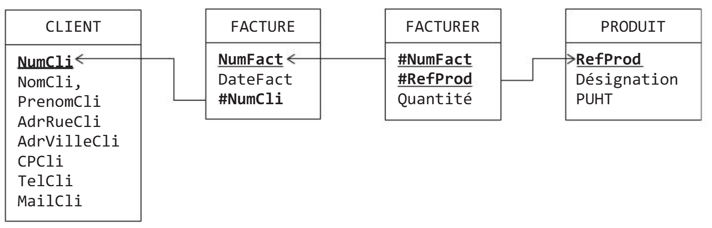
Ce qui sous Access devient :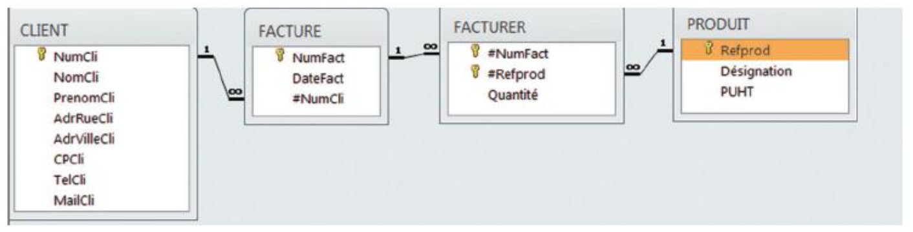
Du graphe au modèle relationnel
- Trois règles permettent de passer du graphe des DF au modèle relationnel :
- L’existence d’un attribut source de dépendances fonctionnelles indique une relation dont cet attribut est la clé primaire ;
- Une dépendance fonctionnelle composée indique une relation dont la clé primaire est concaténée. Elle sera formée de tous les attributs combinés dans la source de DF. Elle contiendra éventuellement d’autres attributs ;
- Une dépendance fonctionnelle entre deux attributs source de DF révèle une clé étrangère (attribut but) dans la relation dont l’attribut source est la clé primaire.
Les formes normales
- Les formes normales sont des règles pour organiser les tables et éviter les anomalies ;
- Elles s’appuient sur les dépendances fonctionnelles.
- Première forme normale (1FN) :
- Règle :
- Chaque colonne doit contenir une seule valeur (pas de listes ou de valeurs multiples) ;
- Chaque ligne doit être unique (identifiée par une clé primaire).
- Règle :
Exemple
Non-conforme :
IDClient NomsEnfants C001 “Lucas, Emma” Conforme (1FN) :
IDClient NomsEnfants C001 Lucas C001 Emma
- Deuxième forme normale (2FN) :
- Conditions :
- La table est en 1FN ;
- Tous les attributs non-clés dépendent de la totalité de la clé primaire (pas de dépendance partielle) ;
- Cela signifie essentiellement qu’il doit y avoir une relation directe entre chaque colonne et la clé primaire, et non entre les autres colonnes.
- Conditions :
Exemple
Tables avec clé primaire composée (plusieurs colonnes). Non-conforme : Table
Commandes(clé primaire :IDCommande + IDProduit) :
IDCommande IDProduit Quantite NomClient AdresseClient CMD1 P1 2 Dupont Paris CMD1 P2 1 Dupont Paris Problème :
NomClientetAdresseClientdépendent uniquement deIDCommande(pas deIDProduit) ;- Dépendance partielle :
IDCommande → NomClient(mais la clé primaire estIDCommande + IDProduit). Conforme (2FN) :
- Table
Commandes(clé :IDCommande + IDProduit) :
IDCommande IDProduit Quantite IDClient CMD1 P1 2 C001 CMD2 P2 1 C001
- Table
Clients(clé :IDCommande) :
IDClient NomClient AdresseClient C001 Dupont 1 Rue de Paris
- Troisième forme normale (3FN) :
- Conditions :
- La table est en 2FN ;
- Aucune dépendance fonctionnelle transitive entre attributs non-clés.
- Conditions :
Exemple
Non-conforme : Table
Etudiants(clé primaire :IDEtudiant) :
IDEtudiant Nom IDDepartement NomDepartement E1 Martin D10 Comptabilité E2 Durand D10 Comptabilité Problème :
NomDépartementdépend deIDDépartement, pas directement deIDEtudiant;- Redondance : “Comptabilité” est répété pour tous les étudiants de D10. Conforme (3FN) :
- Table
Etudiants:
IDEtudiant Nom IDDepartement E1 Martin D10 E2 Durand D10
- Table
Departements:
IDDepartement NomDepartement D10 Comptabilité
- Résumé des formes normales
| Forme normale | Règle principale | Exemple de correction |
|---|---|---|
| 1FN | Pas de valeurs multiples par cellule | Séparer “Lucas, Emma” en 2 lignes |
| 2FN | Pas de dépendance partielle à la clé | Séparer NomClient de N°Commande+Produit |
| 3FN | Pas de dépendance transitive | Séparer NomDépartement de N°Étudiant |
Mise en pratique
Cas pratique
(A faire ensemble)
Bloc en attente de fusion
Cette section expose le modèle relationnel une seconde fois : elle provient de l’ancien chapitre 2.3, alors que 2.1.3 traite déjà le sujet. Les deux exposes seront fusionnés lors de la reprise de la partie 2. Rien n’est perdu d’ici là.
2.1.4 Le modèle relationnel — exposition à fusionner
Définition
- Le modèle relationnel, c’est une méthode d’organisation des données inventée en 1970 par Edgar Frank Codd (un informaticien chez IBM) ;
- L’idée principale ? Organiser les données dans des tables et créer des relations entre ces tables.
Les 3 concepts de base
- Les tables (ou relations)
- Une table, c’est comme un tableau avec :
- Des lignes (appelées tuples ou enregistrements) : 1 ligne = 1 entité ;
- Des colonnes (appelées attributs ou champs) : les caractéristiques.
Exemple : table ETUDIANTS
| ID_Etudiant | Nom | Prenom | Date_Naissance | Classe |
|---|---|---|---|---|
| 1 | Dubois | Julie | 12/03/2004 | ENGDE 1 |
| 2 | Mercier | Thomas | 25/07/2003 | ENGDE 1 |
| 3 | Bernard | Lisa | 18/11/2004 | ENGDE 2 |
- Les clés
- La clé primaire :
- C’est l’identifiant unique de chaque ligne. Pas de doublon possible !
- Dans notre table ETUDIANTS, c’est ID_Etudiant. Deux étudiants peuvent avoir le même nom, mais jamais le même ID.
- La clé étrangère :
- C’est une colonne qui fait référence à la clé primaire d’une autre table. C’est elle qui crée les relations entre les tables.
- Les relations
-
C’est le cœur du modèle ! Les tables ne sont pas isolées, elles communiquent entre elles.
Exemple : un système scolaire ❌ MAUVAISE approche (tout dans une table)
| ID | Nom | Prenom | Matière | Note | Coef |
|---|---|---|---|---|---|
| 1 | Dubois | Julie | Mathématiques | 15 | 3 |
| 2 | Dubois | Julie | Informatique | 17 | 4 |
| 3 | Dubois | Julie | Anglais | 12 | 2 |
| 4 | Mercier | Thomas | Mathématiques | 10 | 3 |
| 5 | Mercier | Thomas | Informatique | 4 | 4 |
- Problèmes :
- Répétition des noms (redondance) ;
- Si Julie change de nom → modifier plein de lignes ;
- Perte d’espace disque ;
- Risque d’erreurs (incohérence). ✅ BONNE approche (modèle relationnel) Table ETUDIANTS
| ID_Etudiant | Nom | Prenom | Classe |
|---|---|---|---|
| 1 | Dubois | Julie | ENGDE 1 |
| 2 | Mercier | Thomas | ENGDE 1 |
Table MATIERES
| ID_Matiere | Nom_Matiere | Coefficient |
|---|---|---|
| 1 | Mathématiques | 3 |
| 2 | Informatique | 4 |
| 3 | Anglais | 2 |
Table NOTES (table de liaison)
| ID_Note | ID_Etudiant | ID_Matiere | Note | Date |
|---|---|---|---|---|
| 1 | 1 | 1 | 15 | 10/01/2025 |
| 2 | 1 | 2 | 17 | 12/01/2025 |
| 3 | 1 | 3 | 12 | 15/01/2025 |
| 4 | 2 | 1 | 10 | 10/01/2025 |
| 5 | 2 | 2 | 14 | 12/01/2025 |
- Avantages :
- Pas de répétition ;
- Modification facile (un seul endroit) ;
- Gain d’espace ;
- Cohérence garantie.
Les types de relations
- Relation 1:n (Un vers Plusieurs)
- Un étudiant peut avoir plusieurs notes, mais une note appartient à un seul étudiant ;
ETUDIANTS (1) ----< (N) NOTES
- Relation n:n (Plusieurs vers Plusieurs)
- Plusieurs étudiants peuvent suivre plusieurs matières ;
ETUDIANTS (N) ----< INSCRIPTIONS >---- (M) MATIERES- On crée alors une table intermédiaire (table de liaison).
- Relation 1:1 (Un vers Un)
- Un étudiant a un seul dossier médical, et un dossier appartient à un seul étudiant ;
ETUDIANTS (1) ---- (1) DOSSIERS_MEDICAUX
Les règles
- Pour qu’une base soit bien conçue, elle doit respecter certaines règles :
- Chaque table a une clé primaire unique ;
- Pas de valeurs multiples dans une cellule :
- “Math, Info, Anglais” dans une seule case ;
- Une ligne par matière.
- Pas de répétition de groupes de colonnes :
- Note1, Note2, Note3… ;
- Une table NOTES séparée.
- Les données dépendent de la clé primaire (normalisation)
Modèle récapitulatif
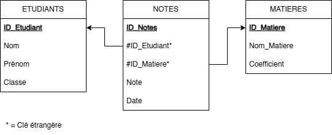
Intérêt
- Le modèle relationnel permet de :
- Éviter les redondances (pas de répétition) ;
- Garantir l’intégrité (les données restent cohérentes) ;
- Rechercher efficacement (grâce aux liens entre tables) ;
- Modifier facilement (un changement à un seul endroit) ;
- Croiser les informations (requêtes SQL complexes).
A retenir
Le modèle relationnel, c’est :
- Des tables structurées ;
- Des clés pour identifier et relier ;
- Des relations entre tables ;
- Une organisation logique et efficace.
Synthèse
- Recensement des données élémentaires :
- Celui-ci peut se faire dans un dictionnaire de données qui précisera le type, la règle de calcul éventuelle ou toute autre observation utile ;
- Les ambiguïtés sont résolues par l’attribution d’un nom unique pour chaque donnée ;
- Les données élémentaires retenues sont des attributs (plus petit élément d’information manipulable).
- Mise en évidence des relations entre les données :
- Mise en évidence des dépendances fonctionnelles à travers la construction d’un graphe des dépendances fonctionnelles ;
- Élaboration du modèle relationnel à partir du graphe ;
- Construction d’une relation universelle (RU), qui regroupe les données du dictionnaire et donc tous les attributs de la base ;
- Normalisation des relations en trois étapes pour arriver à la représentation du modèle relationnel en troisième forme normale.
- Synthèse de toutes les relations dans un modèle relationnel :
- RELATION1 (
Clé Primaire1
, Attribut1A, Attribut1B,…, clé étrangère1) ; - RELATION2 (Clé Primaire2, Attribut2A, Attribut2B,…) ; - Clé étrangère1 : reprise de Clé Primaire2 dans RELATION1, ce qui assure le lien entre les deux relations ; - La représentation du modèle peut également se faire sous forme de tables.
2.2 Le modèle relationnel avancé
Programme
Pédagogie
Compétences attendues
- Interpréter un schéma relationnel
- Adapter un schéma relationnel à un besoin d’évolution d’une base de données
Savoirs associés
- Collecte et sélection de données
- Dépendances fonctionnelles
- Modèle relationnel
Plan
- Cours 2.2.1 Prendre en compte le temps dans un modèle relationnel 2.2.2 Gérer les attributs non renseignés 2.2.3 Déterminer la clé primaire dans des situations particulières
- Synthèse
Mots clés
Clé étrangère • Clé primaire • Concaténation • Héritage • Identifi cation relative • Table complémentaire • Table générique • Temps
Cours
2.2.1 Prendre en compte le temps dans un modèle relationnel
La date est propre à un objet
- Pour un objet précis, une seule date est possible ;
- Il en résulte une dépendance fonctionnelle entre la clé primaire de la relation et l’attribut date.
Exemple
La commande n°1253 a été passée le 12 janvier 2019. La date de la commande ne se rapporte qu’à cette seule commande. La relation nécessaire est
COMMANDE (NumCommande, DateCommande, #NumClient).
La date concerne plusieurs objets et l’événement ne survient qu’une seule fois
- La date résulte de la mise en relation d’au moins deux objets différents ;
- Cette mise en relation :
- Ne peut survenir qu’une seule fois ;
- Si elle survient plusieurs fois, l’historique n’est pas conservé.
Exemple
Les bases de données de l’école DSCG+ gèrent les étudiants (numéro, nom et prénom) et les diplômes (code et nom du diplôme). Pour chaque étudiant, on désire connaître la date d’obtention des diplômes. Un étudiant peut obtenir plusieurs diplômes, un diplôme peut être obtenu par plusieurs étudiants mais un étudiant ne passe le même diplôme qu’une fois. La date d’obtention ne dépend donc que du numéro d’étudiant et du numéro de diplôme. Trois relations sont nécessaires pour modéliser la situation. Le graphe des dépendances fonctionnelles permet de construire les différentes relations nécessaires :
ÉTUDIANT (
NumEtu
, NomEtu, PrénEtu)DIPLÔME (
NumDip
, NomDop)OBTENIRDIPLÔME (
#NumEtu, #CodeDip
, Date)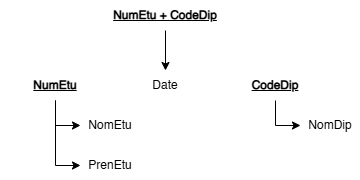
Une représentation sous forme de table permet de vérifier que les clés primaires jouent bien leur rôle.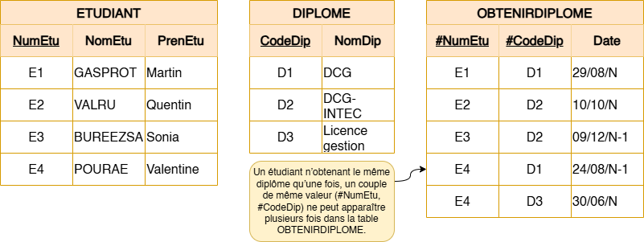
La date concerne plusieurs objets et l’événement peut survenir plusieurs fois
- La date résulte de la mise en relation d’au moins deux objets différents ;
- Cette mise en relation peut survenir plusieurs fois ;
- Si l’on veut conserver l’historique, il faut distinguer les différentes réalisations du même couple d’objets ;
- La date doit être intégrée dans la clé primaire.
Exemple
Un représentant visite les clients d’une entreprise. Il peut visiter plusieurs fois le même client mais toujours à des dates différentes. Un client n’est pas forcément toujours visité par le même représentant. La base de données conserve les coordonnées des clients (numéro, leur nom et prénom) et des représentants (numéro, leur nom et prénom) et l’historique des visites. Un représentant peut visiter plusieurs clients, un client peut être visité par plusieurs représentants et le même représentant peut visiter plusieurs fois le même client. La durée de la visite doit être conservée par le système. La réalisation du graphe des dépendances fonctionnelles permet de construire les différentes relations nécessaires :
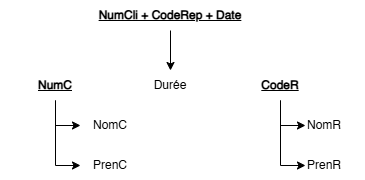
CLIENT (NumCli, NomCli, PrénCli)REPRÉSENTANT (NumRep, NomRep, PrénRep)VISITERCLIENT (#NumCli,#CodeRep, Date, durée)Une représentation sous forme de table permet de vérifier que les clés primaires jouent bien leur rôle.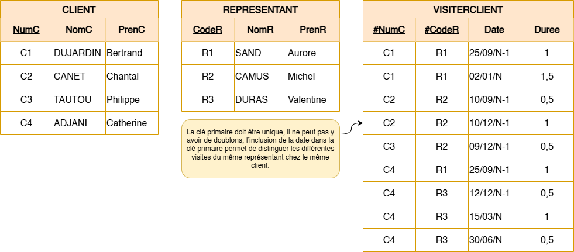
Mise en pratique
Cas pratique
2.2.2 Gérer les attributs non renseignés
Définition
- Une table possède de nombreux attributs non renseignés pour chaque ligne, lorsqu’elle est constituée d’objets qui ne sont pas parfaitement homogènes (ex. : catégories de clients possédant des caractéristiques particulières) ;
- À partir d’une table générique contenant les données communes à tous les objets, il faut créer des tables complémentaires conservant les données propres à chaque objet ;
- Les tables complémentaires « héritent » de la clé primaire de la table générique.
Définition
La notion d’héritage consiste à attacher systématiquement aux données communes d’une table générique des données spécifiques contenues dans des tables complémentaires, réduisant ainsi la présence d’attributs non renseignés.
Exemple
Matricule NomPers PrenPers NomDiplome Année Salaire DateEmb Mat1 Garden Franck 60 000 25/09/N-10 Mat2 Duck Yves 42 000 12/10/N-3 Mat3 Tot Léa 28 000 15/02/N-10 Mat4 Gilles Eve 32 000 23/07/N-2 Mat5 Gain Fred DCG 1 Mat6 Oelo Reine DGC 2 Le personnel travaillant dans une entreprise est soit salarié soit étudiant. Pour tous les personnels on enregistre leur matricule, leur nom, leur prénom. Pour les salariés on conserve en plus le montant de leur salaire, leur date d’embauche. Pour les stagiaires, on note le nom du diplôme qu’ils préparent et le nombre d’années de formation. Si on crée une seule table
PERSONNEL, elle devra comporter les champs suivants :Matricule, Nom, Prénom, Salaire, Date d’embauche, Nom Diplôme et Année. La table comportera de nombreuses valeurs non renseignées. La solution est de créer une table génériquePERSONNELne contenant que les informations communes à tous les membres du personnel (matricule, nom et prénom), ensuite deux autres tables complémentaires ou spécialisées seront créées, la tableÉTUDIANTqui contiendra les attributs spécifiques aux étudiants et la tableSALARIEqui contiendra les attributs spécifiques aux salariés. Les tables spécialisées hériteront de la clé primaire de la relation générique. Le modèle relationnel se présente comme suit :PERSONNEL (
Matricule
, NomPers, PrénPers)ÉTUDIANT (
#MatriculeETU
, NomDiplome, Année)SALARIE (
#MatriculeSAL
, Salaire, DateEmb)Afin de rendre le modèle plus compréhensible, on peut indiquer dans les tables complémentaires le rôle des clés primaires (MatriculeETU= matricule de l’étudiant etMatriculeSAL= matricule du salarié). Une représentation sous forme de table montre que la création des trois tables évite de nombreux attributs vides.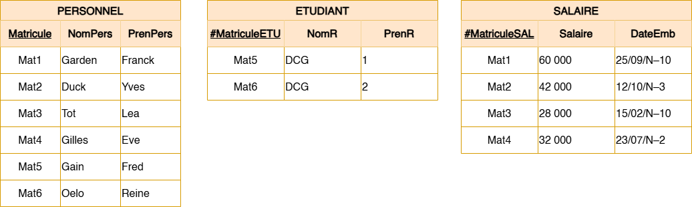
Mise en pratique
Cas pratique
2.2.3 Déterminer la clé primaire dans des situations particulières
Distinguer les différents exemplaires d’un objet : identification relative
- La clé primaire d’une relation peut, dans certaines situations, être définie par référence à une clé primaire d’une autre relation ;
- Ainsi, lorsqu’un objet comporte plusieurs exemplaires, la clé primaire de l’exemplaire se réfère à celle l’objet ;
- Elle ne peut exister seule et pour qu’elle soit unique, elle est concaténée avec celle de l’objet.
Exemple
La bibliothèque Atout Lire acquiert plusieurs exemplaires d’un même livre afin de les prêter à ses adhérents. La numérotation des exemplaires redémarre à 1 pour chaque livre. Un exemplaire ne correspond qu’à un seul livre, un livre peut être acheté en plusieurs exemplaires. Du fait de la numérotation, plusieurs exemplaires portent le même numéro. Le modèle relationnel se présente comme suit :
LIVRE (CodeLiv, TitreLiv)EXEMPLAIRELIVRE (NumExp, #CodeLiv, EtatExp)Une représentation sous forme de tableau permet de vérifier que les clés primaires jouent bien leur rôle.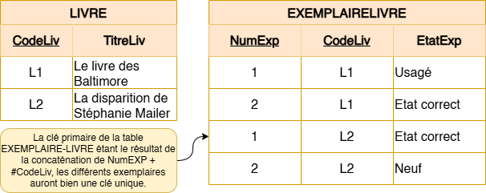
Dépendance fonctionnelle entre une clé primaire concaténée et une clé étrangère
- Lorsque trois objets sont en relation, l’un d’entre eux peut dépendre du couple constitué par les deux autres ;
- La clé primaire concaténée du couple d’objets est la source de la dépendance fonctionnelle pointant vers le troisième objet.
Exemple
Dans l’entreprise CMonChoix, des employés sont affectés à des projets et peuvent remplir plusieurs fonctions dans chaque projet. Les trois objets en interaction entraînent la création des quatre relations suivantes :
PROJET (NumPr, TitrePr, Datedéb)EMPLOYE (NumEmp, NomEmp, PrénEmp)FONCTION (NumF, DescrF)AFFECTER (#NumPr, #NumEmp, #NumF)Les règles de gestion évoluent et, pour un projet, un employé n’a qu’une seule fonction possible. La réalisation du graphe des dépendances fonctionnelles permet de trouver la dépendance fonctionnelle qui s’instaure entre les trois objets : le couple (#NumPr, #NumEmp) permet de déterminerNumF. Seule la relationAFFECTERest modifiée et devient :AFFECTER (#NumPr, #NumEmp, #NumF)La représentation sous forme de tableau permet de vérifier que les clés primaires jouent bien leur rôle.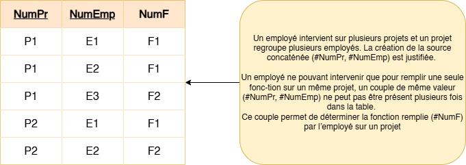
Mise en pratique
Cas pratique
Synthèse
Prendre en compte le temps
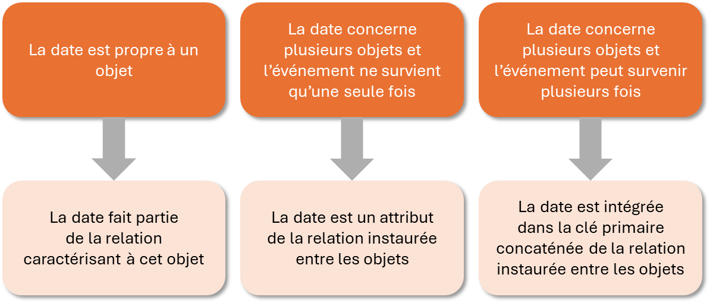
Gérer les attributs non renseignés dans les tables
- Cette opération met en œuvre l’héritage :
- À partir d’une table générique contenant les données communes à tous les objets, il faut créer des tables complémentaires conservant les données propres à chaque objet ;
- Les tables complémentaires héritent de la clé primaire de la table générique.
Déterminer la clé primaire dans des situations particulières
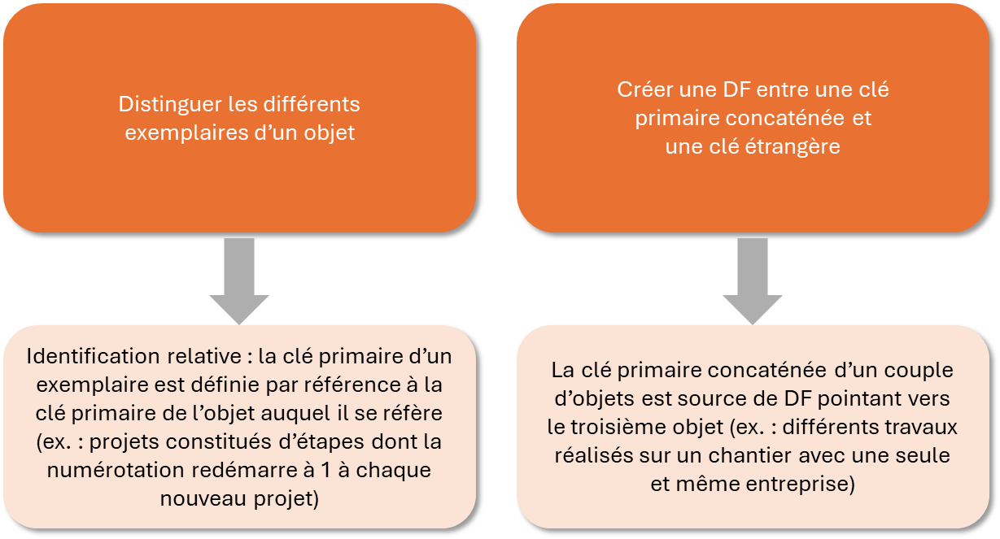
2.3 Les requêtes SQL
Programme
Pédagogie
Compétences attendues
- Écrire des requêtes d’extraction de données en réponse à un besoin d’information
- Écrire des requêtes de mise à jour de données
Savoirs associés
- Requêtes : projection, sélection, jointure, tri, regroupements, restriction sur les groupes, sous-requêtes, utilisation de fonctions
- Requêtes de mise à jour des données de la base
Plan
- Cours 2.3.1 Initiation 2.3.2 Construisez des requêtes SQL simples 2.3.3 Appliquez d’autres fonctionnalités
- Synthèse
Mots clés
Clause • Extraction • Fonction • Jointure • Prédicat • Projection • Regroupement • Restriction • Requête • Sélection • Sous-requête • Tri
Le langage SQL (Structured Query Language) permet la définition de tables (création, modification ou suppression), la manipulation de données (extractions, ajouts, modifications ou suppressions de contenus) et leur protection (définition des permissions). Grâce à ce langage, le SI fournit aux différents acteurs d’une organisation des données précises, exhaustives et à jour. Les instructions de traitement formulées en SQL sont des requêtes, autrement dit des demandes de traitement. Comment extraire et mettre à jour les données à l’aide de requêtes SQL
Cours
2.3.1 Initiation
Introduction
- Le SGBD, c’est un intermédiaire entre le programme et les données ;
- Chaque SGBD utilise un langage afin de communiquer avec les applications qui souhaitent accéder aux données.
A savoir
Chaque SGBDR a sa propre manière d’interpréter le SQL. Heureusement, les fonctionnalités de base sont communes : le langage SQL que vous allez apprendre dans ce cours est appliquable à tous les SGBDR. Mais il arrive que certains SGBDR ne prennent pas en charge certaines fonctionnalités plus avancées, ou bien que la syntaxe du SQL diffère légèrement d’un SGBDR à l’autre.
- Parler en langage SQL, c’est formuler des requêtes à la base de données ;
- Une requête peut avoir plusieurs buts : accéder à une donnée, ajouter une donnée, modifier la structure des tables, etc.
- Les requêtes se répartissent en 3 groupes :
- Le LDD (langage de définition de données) destiné à créer ou supprimer des objets dans la base de données (tables, contraintes, etc.) ;
- Le LCD (langage de contrôle de données) qui gère les utilisateurs d’une base de données ainsi que leurs droits sur les objets (droit de consultation, de modification etc.) ;
- Le LMD (langage de manipulation de données) destiné à manipuler les données contenues dans les tables, c’est-à-dire à manipuler les lignes de celles-ci. Les 4 opérations possibles sont :
- la création de lignes ;
- la lecture de lignes ;
- l’actualisation de lignes ;
- la suppression de lignes.
Début de l’enquête
Installez votre première base de données
- Tout au long du cours, vous allez vous mettre dans la peau d’un data journaliste qui enquête sur le financement d’un réseau criminel ;
- Vous utiliserez pour votre enquête la base de données des Panama Papers, qui sont des données initialement secrètes, mais qui ont été révélées par vos collègues journalistes d’investigation.
Ressources
Vous pouvez télécharger cette base de données ici, elle est au format SQLite 3. Vous pouvez l’ouvrir grâce à tout logiciel qui prend en compte ce format, mais je vous conseille SQLiteStudio, que vous pouvez télécharger à ce lien.
Découvrez l’architecture de votre base de données
- Vous avez, au cours de votre enquête, intercepté une facture émise par une mystérieuse société (c’est-à-dire une entreprise) qui s’appelle « Big Data Crunchers Limited » ;
- Sur ces factures, l’adresse de la société n’est pas indiquée ;
- Vous ne savez pas qui se cache derrière cette mystérieuse entreprise, mais vous pensez qu’il peut s’agir d’une société-écran.
A savoir
Une société-écran, c’est une société fictive créée pour dissimuler les transactions financières d’une ou de plusieurs autres sociétés. Elles sont généralement organisées de manière à ce que la personne qui touche réellement les bénéfices générés par la société ne soit pas ou difficilement identifiable.
- Dans votre base de données, la liste des sociétés (dont certaines sont des sociétés-écrans) se trouve dans la table
entity, (ce qui signifie « entité », en français) ; - Souvent, les sociétés-écrans sont domiciliées dans des paradis fiscaux, qui sont des pays (ou plus précisément des juridictions) souvent caractérisés par une forte opacité sur les données bancaires, et/ou par des taux de taxation sur les sociétés très bas ;
- La personne à qui reviennent réellement les bénéfices d’une société s’appelle le ou la bénéficiaire ;
- Votre base de données contient un bon nombre de ces bénéficiaires, qui sont contenus dans la table
officer; - Mais une société ne se crée pas si facilement que ça. En général, il faut demander de l’aide à des services spécialisés. On les appelle souvent des intermédiaires, qui sont principalement des cabinets d’avocats, des banques ou des personnes. Ils se trouvent dans la table
intermediary; - Vous allez donc enquêter sur la mystérieuse société Big Data Crunchers Ltd, mais également sur les intermédiaires qui ont aidé à la créer ;
- Afin de rédiger votre article, vous regarderez si ces intermédiaires ont une grosse activité dans des paradis fiscaux, ce qui pourrait vous mener sur la piste d’un réseau de blanchiment d’argent.
Créez votre première table
- L’objectif du cours n’est pas de créer des tables mais d’en extraire des données. Cependant, pour votre culture, nous allons voir comment créer une table, la remplir et la supprimer :
- Allez dans `Outils` \> `Ouvrir l'éditeur SQL` ;
- Saisissez votre requête de création de la table `entity2` (car la table `entity` existe déjà dans la base de données) :
```sql
CREATE TABLE entity2 (
id INTEGER,
name TEXT NOT NULL,
jurisdiction TEXT,
jurisdiction_description TEXT,
incorporation_date DATE,
status TEXT,
service_provider TEXT,
id_address INTEGER,
source TEXT,
note TEXT,
end_date DATE,
url TEXT,
lifetime INTEGER,
PRIMARY KEY(id)
)
- Puis lancez votre requête :  - Saisissez votre requête d’ajout de données dans la table `entity2` : sql
INSERT INTO
entity2 (id, name, jurisdiction, jurisdiction_description, incorporation_date)
VALUES
(1, ‘Une société’, ‘IMG’, ‘Le Pays Imaginaire’, ‘2024-01-01’),
(2, ‘Une autre société’, ‘IMG’, ‘Le Pays Imaginaire’, ‘2025-01-01’),
(3, ‘Encore une société’, ‘IMG’, ‘Le Pays Imaginaire’, ‘2026-01-01’);
- Nous allons maintenant effectuer une requête pour afficher le contenu de notre table `entity2` : sql
SELECT * FROM entity2
```
- N’oubliez pas de cliquez sur Exécuter la requête !
À savoir
C’était juste pour tester ; pour ne pas vous embrouiller par la suite, supprimez la table en tapant
DROP TABLE entity2. Ou en faisant clic-droit sur la tableentity2puissupprimer.
À vous de jouer
Contexte
- La personne qui vous a fourni la fameuse facture émise par la société Big Data Crunchers Limited (on appellera cette personne votre “source” ; elle souhaite rester anonyme), travaille dans une entreprise ;
- Mais cette entreprise est bien réelle : elle a de vrais bâtiments, des salariés en chair et en os ; bref, ce n’est pas une société-écran ;
- Cette entreprise est mentionnée comme cliente de la facture sur laquelle vous enquêtez ;
- En plus de cette facture, votre source vous a aussi secrètement fourni la liste des employés sous forme d’une table, que nous appellerons ici la table
personne. Consignes - Voici sur cette illustration la table
personneque vous souhaitez stocker dans votre base :
| nom | prenom | telephone_professionnel | numero_bureau | identifiant | departement |
|---|---|---|---|---|---|
| Dom | Malika | 01 29 38 ** 01 | 27 | 2893 | ressources humaines |
| Dirichlet | John | 01 29 38 ** 02 | 01 | 2983 | marketing |
| Hati | Hassia | 01 29 38 ** 03 | 12 | 1829 | marketing |
| Bernard | George | null | 51 | 2993 | maintenant |
- Créez la requête SQL qui créera la structure de cette table (juste la structure, pas besoin d’y insérer les données).
Indice
- Dans une table, l’ordre des colonnes n’a pas d’importance ;
- La clé primaire de la table s’écrit ici
PRIMARY KEY(identifiant);- Le numéro de téléphone est considéré comme du texte, pas comme un numéro.
**Vérifiez votre travail**
- Pour vérifier si votre réponse est bonne, il vous suffit d'exécuter ces 2 requêtes (l'une après l'autre). Si la 2nde requête affiche les mêmes données que l'illustration de la table donnée ci-dessus, alors vous avez bon !
```sql
INSERT INTO personne (nom, prenom, telephone_professionnel, numero_bureau, identifiant, departement)
VALUES
(‘Dom’,‘Malika’,‘01 29 38 ** 01’, 27, 2893,‘ressources humaines’),
(‘Dirichlet’,‘John’,‘01 29 38 ** 02’,01,2983,‘marketing’),
(‘Hati’,‘Hassia’,‘01 29 38 ** 03’,12,1829,‘marketing’),
(‘Bernard’,‘George’, NULL, 51, 2993, ‘maintenance’)
sql
SELECT * FROM personne
```
Réponse
```sql
CREATE TABLE personne (
nom TEXT,
prenom TEXT,
telephone_professionnel TEXT,
numero_bureau INTEGER,
identifiant INTEGER,
departement TEXT,
PRIMARY KEY(identifiant)
)
```
- Vous pouvez ensuite supprimer la table en tapant DROP TABLE personne .
Résumé
- Un SGBD est un programme qui fait l’intermédiaire entre le programme / l’application et les données, à l’aide d’un langage prédéfini, comme le SQL, par exemple ;
- Le SGBD est spécialisé dans le stockage de données, et optimise les accès en lecture et en écriture ;
- On communique avec le SGBDR avec des requêtes SQL ;
- On crée une table avec
CREATE TABLE; - On insère des données grâce à
INSERT INTO (...) VALUES (...).
Les clés primaires
Clé artificielle
- Parmi les colonnes d’une table, il est parfois impossible de trouver une clé primaire ;
- Dans d’autres cas, la clé primaire est trop complexe (trop de colonnes, par exemple) ⇒ dans ce cas, il est possible de créer une clé primaire artificielle ;
- Une clé artificielle est une colonne que l’on ajoute à la table ;
- Cette colonne n’a pas de réelle signification (contrairement aux autres colonnes), mais sa seule fonction est d’identifier de manière unique les lignes de la table ⇒ c’est donc un identifiant.
A savoir
Le numéro de Sécurité sociale et le numéro de carte d’identité sont des clés artificielles permettant d’identifier les personnes de nationalité française.
Représentez votre clé primaire
- En SQL, on définit la clé primaire grâce au mot clé `PRIMARY KEY`, et on écrit ensuite la/les colonne(s) qui constituent la clé primaire ;
- C'est ce que vous aviez fait pour votre table `entity2` , rappelez-vous :
```sql
CREATE TABLE entity2 (
id INTEGER,
name TEXT NOT NULL,
jurisdiction TEXT,
jurisdiction_description TEXT,
incorporation_date DATE,
status TEXT,
service_provider TEXT,
id_address INTEGER,
source TEXT,
note TEXT,
end_date DATE,
url TEXT,
lifetime INTEGER,
PRIMARY KEY(id)
)
- Ici, la clé primaire était une clé artificielle, soit la colonne `id` ; - Mais rappelez-vous qu'une clé primaire peut être composée de plusieurs colonnes ; - Par exemple, dans le cas d’une table `adresse_postale` : sql
CREATE TABLE adresse_postale (
type_logement TEXT,
superficie INTEGER,
numero_logement INTEGER,
numero_voie INTEGER,
complement TEXT,
intitule_voie TEXT,
commune TEXT,
code_postal TEXT,
pays TEXT,
PRIMARY KEY (numero_logement, numero_voie, complement, intitule_voie, commune, code_postal, pays)
)
```
A vous de jouer
Contexte
- Ayant appris que vous travaillez sur les Panama Papers, l’un de vos collègues journalistes d’investigation vous envoie un ficher Excel issu d’une table d’une base de données relationnelle. Voici son message :
Tiens, l’une de mes sources m’a transmis ceci. Cette personne (ma source) a eu accès aux comptes mails de 2 cabinets d’avocats ayant des activités au Panama, dont voici les noms : Avocats Conseils Corp. et Guacamole Associates Ltd. Malheureusement, elle n’a pas pu récupérer les e-mails de ces comptes, mais elle a pu récupérer le carnet d’adresses de chacun de ces 2 comptes mails. C’est mieux que rien : ces carnets d’adresses contiennent des contacts (nom, prénom, e-mail, date de création du contact). Même s’il n’y a pas de preuve formelle, il est très probable qu’une personne (un contact) présente dans l’un des 2 carnets d’adresses ait eu des échanges avec l’un des 2 cabinets d’avocats ! Tu me parlais notamment d’une personne sur laquelle tu enquêtais, Annie Versaire : son adresse mail était enregistrée dans le carnet d’adresses de *Avocats Conseils Corp. *; cela peut t’orienter dans ton enquête ! Consignes
- Vous décidez de rentrer cette table dans votre SGBDR ;
- Choisissez une clé primaire, puis écrivez le code SQL qui permet de créer cette table (juste la table, pas les données qui vont dedans) :
| compte_mail | nom | prenom | date_creation | |
|---|---|---|---|---|
| Avocats Conseils Corp. | eva.poree.389@gmx.com | Eva | Porée | 2010-01-03 |
| Avocats Conseils Corp. | ali.gator2892@protonmail.com | Ali | Gator | 2010-02-01 |
| Avocats Conseils Corp. | annie_versaire2983@gmx.com | Annie | Versaire | 2010-10-04 |
| Guacamole Associates Ltd. | alex_ception@imag.com | Alex | Ception | 2010-02-02 |
| Guacamole Associates Ltd. | ali.gator2892@protonmail.com | Ali | Gator | 2009-09-10 |
| Guacamole Associates Ltd. | eva.poree.389@gmx.com | Eva | Poree | 2010-05-13 |
Réponse
```sql
CREATE TABLE compte (
compte_mail TEXT,
mail TEXT,
nom TEXT,
prenom TEXT,
date_creation DATE,
PRIMARY KEY (compte_mail, mail)
)
```
- La clé primaire est (compte_mail, mail) ;
- En effet, l’adresse mail du contact ne peut pas suffire à lui seul, car 2 adresses mail peuvent être présentes dans 2 carnets d’adresses différents (c’est d’ailleurs le cas des adresses mail d’Ali Gator et d’Éva Porée) ;
- Les noms et prénoms ne peuvent pas être inclus dans la clé primaire, car il est possible que plusieurs personnes aient à la fois le même prénom et le même nom.
Résumé
- La clé primaire d’une table est un groupe de colonnes minimum permettant d’identifier une ligne d’une table ;
- Une clé primaire a donc forcément une contrainte d’unicité ;
- Dans certains cas, il est impossible de trouver une clé primaire parmi les colonnes présentes ;
- Dans d’autres cas, la clé primaire est trop complexe ⇒ on crée alors une clé primaire artificielle…
- Une clé primaire se dit en anglais primary key (PK).
Mettre en relation plusieurs tables avec des clés étrangères
Qu’est-ce qu’une clé étrangère ?
- Au chapitre précédent, vous avez vu comment identifier les lignes de vos tables ;
- Mais votre base ne contient pas qu’une table, et il arrive que 2 tables contiennent des informations qui sont liées entre elles ;
Exemple
Votre table
sommierest en lien avec la tablematelas, car chaque sommier est associé au matelas avec lequel il sera assemblé !
- Pour lier des tables entre elles, on a créé le concept de clé étrangère.
A savoir
Une clé étrangère, c’est une colonne (ou groupe de colonnes) d’une table qui fait référence à la clé primaire d’une autre table, afin de modéliser le lien entre les lignes de ces deux tables.
- Voici ce que cela donne pour les tables
sommieretmatelas: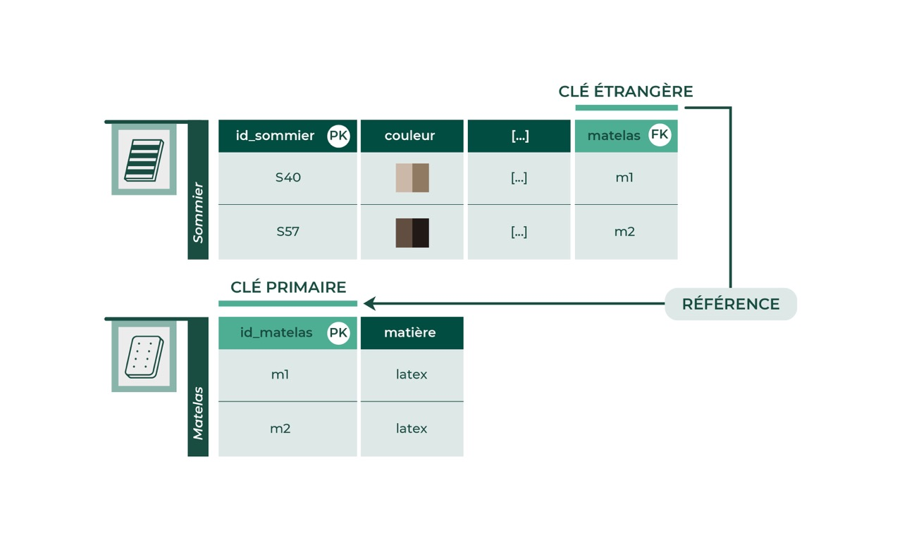
A savoir
Les colonnes qui constituent une clé étrangère sont désignées par le signe « FK », pour « Foreign Key ».
- Vous voyez qu’il y a une colonne dans
sommierqui contient des identifiants de matelas ⇒ c’est comme cela que l’on sait que le sommier S40 va être assemblé avec le matelas M1.
A savoir
Les valeurs présentes dans la colonne
matelas_fkdoivent obligatoirement avoir une correspondance dans la colonneid_matelas, sinon les données sont incohérentes. La plupart des SGBDR n’accepteront pas que vous introduisiez un sommier dont le matelas indiqué dans la colonnematelas_fkn’existe pas dans la tablematelas.
- Ici, la clé étrangère n’est composée que d’une colonne (
matelas_fk), car la clé primaire de la tablematelasne contient qu’une colonne (id_matelas). Mais si la clé primaire contient deux colonnes, alors il faut une clé étrangère à deux colonnes !
A vous de jouer
Contexte
- Vous commencez à vous familiariser avec votre base de données des Panama Papers ;
- Vous y voyez 2 tables qui semblent être liées : la table
entityet la tableaddress; - Si elles sont liées, il y a probablement une clé étrangère quelque part ;
- La repérer vous aidera ensuite à chercher plus efficacement et de manière plus cohérente dans vos données. Consignes
- Repérez la clé étrangère, déterminez de combien de colonnes elle est composée, et trouvez la clé primaire qu’elle référence :
Table entity :
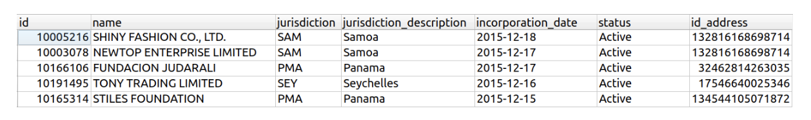
Table address :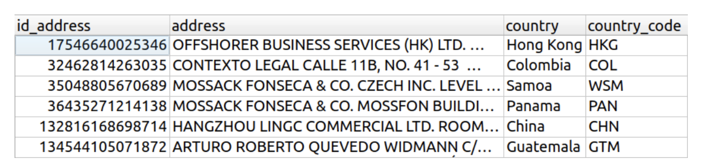
Réponse
- La clé étrangère est composée d’une seule colonne :
id_addressde la tableentity; - Elle référence la clé primaire de
address, qui est la colonneid_address; - En effet, les valeurs dans la colonne
entity.id_addresssemblent être des identifiants ; - Ces identifiants se retrouvent dans la colonne
address.id_address; - Vu le nom de cette colonne (“id_address”), il est très probable qu’elle soit la clé primaire artificielle de la table address.
Créez du lien entre vos tables
- Maintenant que vous savez reconnaître une clé étrangère, on va voir comment implémenter ce concept en SQL ;
- Vous avez déjà vu le code permettant de créer la table `entity` mais la clé étrangère n'était pas indiquée ;
- Pour spécifier la clé étrangère entre `entity` et `address` , il faut ajouter ce bout de code lors de la création de la table `entity` :
```sql
FOREIGN KEY ( <colonnes clés étrangères> ) REFERENCES
Résumé
- Une **clé étrangère** est un groupe de colonnes d'une table, qui fait référence à la clé primaire d'une autre table, afin de modéliser le lien entre les lignes de ces deux tables ;
- Une clé étrangère peut être composée d'**une ou plusieurs colonnes** ;
- Une clé étrangère se dit en anglais ***foreign key*** (FK) ;
- En SQL, une clé étrangère peut se définir lors de la création de la table, en écrivant
```sql
FOREIGN KEY ( <colonnes clés étrangères> ) REFERENCES
Identifiez les types d’associations entre les tables
Les types d’associations
- À ce stade, vous savez qu’une clé étrangère sert à créer une association entre une table A et une table B ;
- Voyons maintenant les 3 cas de figure dans lesquels on les utilise :
- L’association un-à-un ;
- L’association un-à-plusieurs ;
- L’association plusieurs-à-plusieurs.
- En fait, tout est question du nombre de lignes de A qui peuvent être associées aux lignes de B, et inversement !
- Par exemple, prenons l’association entre les sommiers et les matelas :
- D’un côté, un sommier est associé à un matelas ;
- De l’autre côté, un matelas est associé à un sommier ;
- On est donc face à une association un-à-un.
- L’association un-à-plusieurs se rencontre par exemple entre les sommiers et les pieds du lit :
- Un sommier est associé à plusieurs pieds, et un pied est associé à un sommier.
- Imaginons maintenant qu’un nouveau catalogue de literie soit édité tous les 2 ans :
- Un sommier peut être présent dans plusieurs catalogues, et un catalogue présente plusieurs sommiers ;
- On est ici dans le cas plusieurs-à-plusieurs.
Implémentez une association un-à-un
- Au chapitre précédent, vous avez lié les tables
matelasetsommieren ajoutant une clé étrangère danssommier. - Mais vous auriez aussi pu faire l’inverse : mettre la clé étrangère dans
matelas, comme ceci :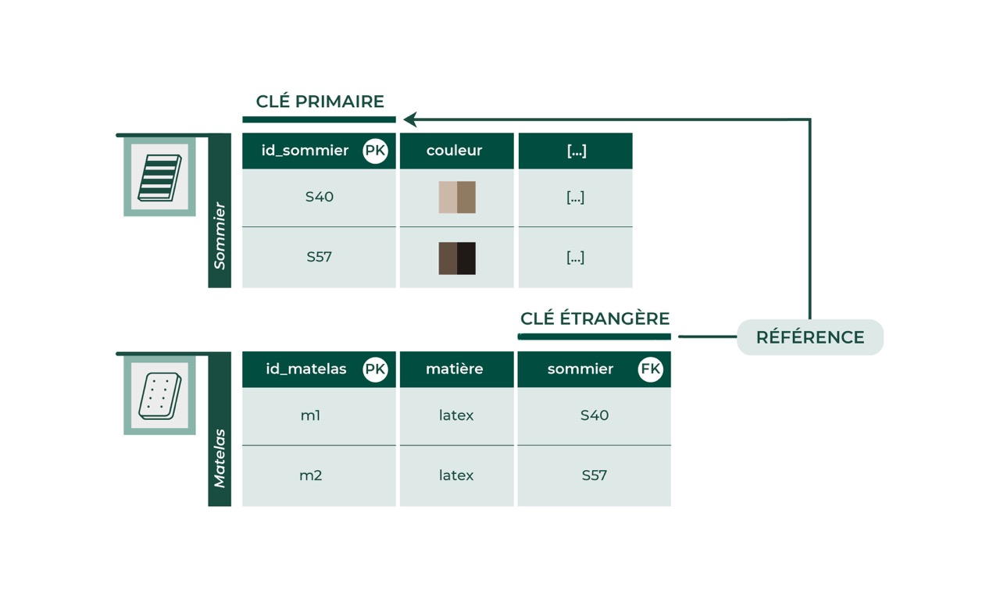
- Ici, on a cette liberté car il y a un matelas par sommier, et un sommier par matelas ;
- On met donc la clé étrangère soit dans la table sommier, soit dans la table matelas ;
- Nous sommes dans le cas d’une association un-à-un.
Implémentez une association un-à-plusieurs
- Reprenons l’exemple du chapitre précédent : celui de l’association entre les tables
entityetaddress; - Ici, nous sommes dans un cas où une société ne peut avoir qu’une seule adresse maximum, mais une adresse peut accueillir plusieurs sociétés ;
- Nous sommes dans le cas d’une association un-à-plusieurs ;
- Dans ce cas, on utilise aussi une clé étrangère, comme vous l’avez vu précédemment :
Table entity
 Table address
Table address

- Vous voyez que les 2 premières lignes de
entityont la même adresse (l’adresse numéro132816168698714).
A savoir
Ici, on est un peu plus contraint que pour l’association un-à-un. En effet, vous n’avez pas le choix de la table dans laquelle placer la clé étrangère. Il faut la placer dans la table qui est du côté “plusieurs” (ici
entity).
Implémentez une association plusieurs-à-plusieurs
- Passons maintenant au cas de l’association plusieurs-à-plusieurs ;
- C’est quand une ligne d’une première table peut être associée à plusieurs lignes d’une seconde table, et qu’une ligne de cette seconde table peut être associée à plusieurs lignes de la première table ;
- Prenez un temps de réflexion avec l’exemple des sommiers et des catalogues : un catalogue contient plusieurs sommiers, et un sommier peut être présent dans plusieurs catalogues ;
- Essayez de résoudre ce problème en plaçant une clé primaire dans l’une ou l’autre table ;
- Dans tous les cas, vous allez vous retrouver bloqué, car si vous placez la clé étrangère dans sommier, alors un sommier ne sera associé qu’à un seul catalogue ! Et si vous placez la clé étrangère dans catalogue, un catalogue ne pourra contenir qu’un seul sommier…
- La solution, c’est de déplacer le problème vers… une troisième table !
- On l’appelle table d’association.
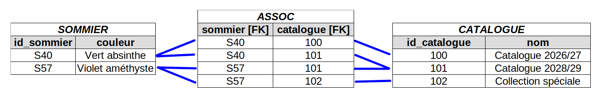
- Comme vous le voyez, elle contient 2 clés étrangères, pointant chacune vers l’une des 2 tables d’origine. Ainsi, cette ligne de la table 1 peut être associée à plusieurs lignes de la table 2, et vice versa !
- La clé primaire de cette table d’association est composée au moins des 2 clés étrangères.
- Pourquoi au moins ?
- Car il est possible de donner des caractéristiques supplémentaires à la table d’association, comme ici :
| id_sommier [FK] | id_catalogue [FK] | pays | prix |
|---|---|---|---|
| S40 | 100 | France | 180 € |
| S40 | 100 | USA | 200 $ |
| S40 | 101 | France | 170 € |
| S40 | 101 | USA | 180 $ |
| S57 | 101 | France | 250 € |
- Ici, on a ajouté des caractéristiques aux associations entre sommiers et catalogues ;
- On y voit que le sommier S40, dans le catalogue 2026-2027, est vendu 180 € en France, ou 200 $ aux États-Unis. Dans le catalogue 2028-2029, les prix ont baissé ;
- Ici, la clé primaire de cette table est composée de 3 colonnes : [sommier, catalogue, pays] ;
- Dans la base de données des Panama Papers, nous avons un exemple de table d’association ayant une clé primaire avec une 3e colonne : c’est la table
assoc_officer_entity; - Elle représente l’association plusieurs-à-plusieurs entre la table
entityet la tableofficer; - Sa clé primaire est (
officer,entity,assoc_type). Cette dernière colonne donne le type d’association qui lie une personne présente dansofficeret une société deentity; - Par exemple, elle peut donner le président d’une société, ainsi que ses actionnaires ;
- Ici, le groupe de colonnes (
officer,entity) ne peut pas être à lui seul une clé primaire, car une même personne peut être à la fois présidente et actionnaire d’une société :
| officer [PK] | entity [PK] | assoc_type [PK] | start_date | end_date |
|---|---|---|---|---|
| M. Pédégé | Doumatelas Corp. | président | 01-01-2000 | 04-03-2014 |
| M. Pédégé | Doumatelas Corp. | actionnaire | 01-04-2000 | null |
| Mme Bigboss | Bonne nuit Ltd. | présidente | 01-01-2002 | 12-03-2010 |
Résumé
- Pour une association un-à-un entre une table
Aet une tableB, on utilise une clé étrangère. La clé étrangère est placée dansAet elle référence la clé primaire deB, ou bien l’inverse ; - Une association un-à-plusieurs se traduit en ajoutant une clé étrangère dans la table qui est du côté « plusieurs ». Cette clé étrangère référence la clé primaire de la table qui est du côté « un » ;
- Une association plusieurs-à-plusieurs se traduit en ajoutant une nouvelle table. La clé primaire de cette nouvelle table sera composée (au moins) des deux clés étrangères référençant les deux tables à associer.
Quiz
2.3.2 Construisez des requêtes SQL simples
Affichez les données pertinentes avec SELECT
Introduction
- Dans la partie précédente, nous avons beaucoup parlé de la structure de la base de données : ce sont les bases de la modélisation relationnelle ;
- À partir de maintenant, on entre vraiment dans le cœur du sujet : comment interroger les données qui sont dans la base ;
- Autrement dit, on considère que la BDD est déjà construite et déjà remplie, c'est-à-dire que les clés primaires, clés étrangères et tables d'association sont toutes déjà présentes. Pas besoin de les définir vous-même !
- Pour les requêtes SQL que vous allez voir, vous devez **absolument** maîtriser ces notions, sinon vos requêtes n'auront ni queue ni tête ;
- Il existe différents types de requêtes SQL :
- Certaines pour créer des tables ;
- D'autres pour aller chercher des données dans la base ;
- D'autres pour modifier des données existantes ;
- D'autres pour gérer les droits d'accès des utilisateurs/utilisatrices.
- Celles sur lesquelles on va travailler, ce sont les requêtes pour aller **chercher** des données dans la base. Pour les reconnaître, rien de plus simple, elles ont toute une structure commune, contenant les mots clés SELECT et FROM :
```sql
SELECT […] FROM […] ``` - Souvent, d’autres mots clés seront ajoutés, comme par exemple WHERE, qui est très fréquent.
A savoir
Ce qu’il faut savoir, c’est que chaque requête commençant par SELECT renverra une réponse qui sera toujours formée d’un unique tableau.
- Si vous devez rechercher une information dans la base, vous avez d’abord besoin de savoir dans quelle table elle se situe, puis sur quelle ligne, et enfin dans quelle colonne. Ce sont les 3 infos essentielles. À chacune de ces 3 infos correspond l’un des mots clés que l’on vient de voir :
- FROM : pour spécifier la/les table(s) ;
- SELECT : pour sélectionner la/les colonne(s) demandée(s) ;
- WHERE : pour filtrer les lignes de cette table et trouver la/les ligne(s) souhaitée(s).
- Dans les 3 premiers chapitres de cette partie, nous allons voir comment fonctionne chacun de ces 3 mots clés.
Exécutez une requête SELECT
A savoir
Le SELECT sert à sélectionner une ou plusieurs colonnes d’une table.
- Ici, je vous propose de retrouver dans la base de données notre mystérieuse société *Big Data Crunchers Limited* ;
- Ce sera le point de départ de notre enquête ! Toutes les sociétés de la base de données se trouvent dans la table `entity` ;
- Familiarisons-nous avec cette table, grâce à la requête la plus basique qui soit : celle qui renvoie une table sans la modifier :
```sql
SELECT * FROM entity ;
- Voici la réponse renvoyée :  - Avec cette requête, on a toutes les lignes et les colonnes de `entity` (attention, sur cette illustration, on ne voit pas toutes les lignes ni toutes les colonnes) ; - Pour le moment, nous avons mis le caractère `*` derrière le SELECT. Cette étoile signifie que nous souhaitons obtenir toutes les colonnes disponibles ; - Nous pouvons cependant remplacer ce caractère par les colonnes que nous souhaitons sélectionner, par exemple : - `id` : c'est l'identifiant de la société dans notre BDD ; - `name`: c'est le nom de la société ; - `status`: c'est le statut de la société (au moment de la publication des Panama Papers) : est-elle active ? inactive ? dissoute ? en liquidation ? etc. Rassurez-vous, pas besoin de connaître la signification de ces termes. sql
SELECT id, name, status FROM entity ;
 - Quand vous sélectionnez certaines colonnes, il est possible que vous vous retrouviez avec des lignes 100 % identiques : c'est ce que l'on appelle des doublons ; - En fonction de ce que vous voulez faire, il sera souvent utile de supprimer les doublons en ne gardant qu'un exemplaire de chaque ligne. Pour ceci, il faut insérer **DISTINCT** juste après le SELECT : sql
SELECT DISTINCT status FROM entity;
 - Ici, on voit que parmi les quelques 200 000 lignes que contient la table `entity` , la colonne `status` ne contient que 18 valeurs différentes ; - De même, si vous soupçonnez la table `entity` de contenir des lignes identiques, vous pouvez écrire une requête qui renverra la table `entity` , mais sans les doublons : sql
SELECT DISTINCT * FROM entity ;
```
Réalisez des calculs sur vos données grâce aux fonctions et opérateurs
- Quand on manipule des données, on est souvent amené à faire des calculs ou des modifications sur celles-ci ;
Exemple
Par exemple, si vous devez convertir un poids exprimé en kg vers des grammes, il faudra multiplier par 1 000 votre valeur. Pour cela, il est possible d’appliquer des fonctions et des opérateurs sur les colonnes.
A savoir
Une fonction, c’est une opération que l’on applique sur une ou plusieurs données. Il y a donc des données en entrée de la fonction, et une donnée en sortie de la fonction.
- En SQL, pour utiliser une fonction, il faut écrire le nom de cette fonction, puis la faire suivre de parenthèses, à l'intérieur de ces parenthèses, on indique les données en entrée ;
- Les données d'entrée de la fonction, c'est un peu ce que l'on “donne à manger” à la fonction, afin qu'elle modifie ces données (ou qu'elle effectue un calcul mathématique avec), puis qu'elle renvoie une donnée en sortie ;
- Certaines fonctions ne prennent pas de données en entrée, certaines en prennent une ou plusieurs. Quand il y en a plusieurs, on les sépare par une virgule ;
- Voici quelques exemples :
```sql
SELECT upper(‘Bonjour’)
- Ici on a utilisé la fonction **upper**, qui modifie un texte en le mettant en majuscules ; - On a le nom de la fonction suivi de parenthèses. Entre les parenthèses, on a donné en entrée le texte `Bonjour` ; - Si vous exécutez cette requête dans votre SGBRD, vous verrez que le résultat est `BONJOUR` . sql
SELECT round(3.1416, 2)
- Ici on a utilisé la fonction **round**, qui calcule l'arrondi d'un nombre décimal ; - Il y a ici deux données en entrée : - La première donnée, c'est le nombre décimal à arrondir (ici 3.1416) ; - La seconde, c'est le nombre de décimales à garder : ici on souhaite garder 2 décimales ; - Cette fonction renverra donc `3.14` , car c'est l'arrondi de 3.1416 avec 2 décimales. sql
SELECT random()
```
- La fonction random ne prend aucune donnée en entrée, et elle renvoie en sortie un nombre choisi au hasard.
- Et un opérateur, c’est quoi ?
- Un opérateur, c’est une fonction. Mais… c’est une fonction un peu particulière, car elle ne s’écrit pas avec la même syntaxe que ce nous avons vu jusqu’à présent ;
- Elle s’écrit souvent avec des caractères spéciaux.
Exemple
La fonction qui permet d’additionner deux nombres (disons 3 et 5, par exemple) ne s’écrit pas
additionner(3, 5)mais elle s’écrit avec l’opérateur+.
- En effet, c'est bien plus lisible comme ça :
```sql
SELECT 3+5 ``` - Cette requête renvoie 8, car 3+5 = 8.
Utilisez des fonctions pour des calculs mathématiques
- Par exemple, nous pouvons utiliser la fonction multiplication, en multipliant l'identifiant de toutes les entités par 2 (et pourquoi pas ?).
```sql
SELECT id * 2, name, status FROM entity ;
```
- Ici, pour écrire la multiplication on a utilisé l’opérateur * ;
- Il est même possible de combiner des fonctions.
Exemple
Calculons la valeur absolue (fonction `ABS()` ) de l'opposé (que l'on écrit avec l'opérateur `-` ) de l'identifiant multiplié par 2 : ```sqlSELECT ABS( (- id) *2 ) AS calcul_bizarre, name, status FROM entity ; ``` Ici, j’ai utilisé le mot clé
AS. Il permet de renommer une colonne. Sans ce mot clé, la colonne Résultat du calcul mathématique aurait comme nom “ABS((-id)*2)”, ce qui n’est pas très compréhensible ! Je l’ai donc renommée en “calcul_bizarre”.
Utilisez des fonctions de manipulation de texte
- Il existe beaucoup d'autres types de fonctions !
- Par exemple, des fonctions sur des chaînes de caractères (c'est-à-dire du texte) ;
- Si on souhaite obtenir le nom d'une société, et ajouter à cette chaîne son statut entre parenthèses, on peut utiliser l'opérateur `||` ;
- Assembler plusieurs textes les uns à la suite des autres, ça s'appelle une **concaténation** :
```sql
SELECT name || ’(’ || status || ’)’ AS name_and_status FROM entity ;
```
- Il est possible de transformer du texte en minuscules, ou en majuscules, grâce aux fonctions lower() et upper() ;
Exemple
La requête suivante sur la table `entity` affiche 3 colonnes : - le nom d'origine des sociétés ; - le nom des sociétés en minuscules ; - le nom des sociétés en majuscules. ```sqlSELECT name, lower(name), upper(name) FROM entity ```
Manipulez des dates
- Il y a également des fonctions utilisant des dates, comme par exemple `date()`, qui renvoie la date actuelle :
```sql
SELECT date() ```
Utilisez des opérateurs de comparaison
- Les opérateurs de comparaison sont des fonctions qui renvoient une valeur **booléenne** (c'est-à-dire une valeur binaire : VRAI ou FAUX). Voici un exemple :
```sql
SELECT date() > incorporation_date FROM entity ;
```
- Ici, la fonction date() renvoie la date actuelle ;
- Celle-ci est ensuite comparée à la colonne incorporation_date grâce à l’opérateur de comparaison > , qui renvoie TRUE (ou 1 selon votre SGBD) si incorporation_date est antérieure à la date actuelle, ou bien FALSE (ou 0 ) dans le cas contraire ;
A savoir
Ceci n’est qu’un petit aperçu des types de fonctions existantes. Chaque SGBDR possède ses propres fonctions. Parfois, une même fonction n’aura pas le même nom d’un SGBDR à l’autre (ex. : la fonction
date()en SQLite s’appellera plutôtcurrent_date()dans d’autres SGBDR).
A vous de jouer
Contexte
- Dans la BDD des Panama Papers, les pays et juridictions sont souvent désignés avec un code à 3 lettres ;
- Comme vous ne les connaissez pas par cœur, vous avez besoin d’un tableau de correspondance entre ces codes et le nom de ces pays ;
- Cette correspondance est donnée dans la table
country. Consignes - Écrivez une requête qui renvoie les colonnes
codeetcountryde la tablecountry; - Ensuite, écrivez une requête qui renvoie 2 colonnes :
- La colonne
idde la tablecountry; - Une colonne contenant le code du pays puis son nom en toutes lettres, ces 2 informations devant être séparées par le caractère
-. Vous renommez cette colonne encode_et_nom.
- La colonne
Réponse
- Pour afficher les colonnes code et country, il faut placer ces 2 colonnes dans le SELECT :
```sql
SELECT code, country FROM country ;
- Pour afficher sur une même colonne l'identifiant et le nom, il faut les assembler avec l'opérateur de concaténation `||` : sql
SELECT id, code || ’ - ’ || country AS code_et_nom FROM country ;
```
Résumé
- Le SELECT sert à sélectionner une ou plusieurs colonnes d’une table ;
- On fait suivre le SELECT par les colonnes à sélectionner, séparées par une virgule ;
- On peut sélectionner toutes les colonnes d’une table avec le caractère * ;
- On peut renommer des colonnes grâce au mot clé AS.
Filtrez des lignes avec WHERE
Se familiariser avec le filtrage
- Avec le SELECT, on avait sélectionné les colonnes qui nous intéressaient. Le WHERE fait la même chose, mais pour les lignes ;
A savoir
WHERE permet de filtrer les lignes d’une table selon un certain critère.
- Cependant, dans une base de données, nous connaissons d’avance les noms des colonnes, car la liste des colonnes n’a pas vocation à changer régulièrement ;
A savoir
La liste des colonnes (on appelle cela le schéma) est d’ailleurs définie durant la phase de modélisation, avant même que la BDD ne reçoive ses premières données.
- Par contre, en ce qui concerne les lignes, on ne les connaît pas à l’avance, et elles varient beaucoup au cours du temps ;
- Certaines bases de données reçoivent même des milliers de lignes chaque seconde : c’est le cas pour les grands réseaux sociaux, qui doivent stocker dans leur BDD les posts de plusieurs milliers d’utilisateurs à travers le monde !
- C’est la vocation d’une base de données : stocker des données dynamiques, que l’on ajoute, que l’on supprime, ou que l’on modifie au fil de l’utilisation ;
- Comme les lignes à garder (ou enlever) sont dynamiques, il nous faut donc établir une condition qui nous permette de filtrer les lignes voulues.
Exécutez une requête avec WHERE
- Nous allons rechercher la présence de *Big Data Crunchers Ltd., *notre mystérieuse société ;
```sql
SELECT * FROM entity WHERE name = ‘Big Data Crunchers Ltd.’ ; ```
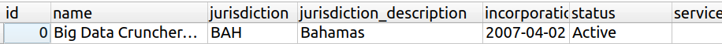
- Cette requête renvoie une table d’une ligne, qui correspond à la société que nous recherchons. - Ce qu’il s’est passé en 2 étapes : 1. La première, c’est de calculer pour chaque ligne si la condition est vérifiée. Pour cette condition, nous avons utilisé le signe= , qui teste pour chaque ligne si name et la chaîne de caractères 'Big Data Crunchers Ltd.' ont la même valeur. Sur chaque ligne, la partie name = 'Big Data Crunchers Ltd.' renvoie TRUE (ou 1) si c’est le cas, et FALSE (ou 0) sinon ;
2. La 2e étape, c’est le WHERE qui l’effectue : il ne va garder que les lignes pour lesquelles la condition a renvoyé TRUE .
A savoir
Pour vous en convaincre, vous pouvez exécuter
SELECT name = 'Big Data Crunchers Ltd.' FROM entity. Cette requête renverra desTRUEet desFALSE(ou des 1 et des 0). Vous pouvez aussi vous amuser à écrireSELECT * FROM entity WHERE TRUE, qui va sélectionner toutes les lignes deentity, puisSELECT * FROM entity WHERE FALSEqui ne renverra aucune ligne.
- Outre l’opérateur
=, d’autres opérateurs de comparaison sont possibles en SQL :
| Opérateur | Renvoie TRUE si |
|---|---|
A = B | A égal à B |
A <> B | A différent de B |
A > B et A < B | A supérieur à B / A inférieur à B |
A >= B et A <= B | A supérieur ou égal à B / A inférieur ou égal à B |
A BETWEEN B AND C | A est compris entre B et C |
A IN (B1, B2, B3) | A est présent dans la liste (B1, B2, B3) |
A NOT IN (B1, B2, B3) | A n’est pas présent dans la liste (B1, B2, B3) |
A IS NULL | A n’a pas de valeur |
A IS NOT NULL | A n’est pas nul (c’est-à-dire qu’il a une valeur connue) |
A savoir
Il existe aussi l’opérateur
LIKE. Il est un peu particulier, et il fera l’objet d’un chapitre à part entière.
Etoffez vos requêtes avec AND et OR
- Il est possible de combiner plusieurs conditions grâce aux opérateurs logiques :
ORANDNOT
- Ils signifient respectivement OU, ET, NON.
| opérateur | renvoie TRUE si |
|---|---|
| C1 AND C2 | la condition C1 est TRUE et si C2 est aussi TRUE |
| C1 OR C2 | C1 est TRUE ou bien si C2 est TRUE |
| NOT C1 | C1 est FALSE |
- Grâce à ces opérateurs, on peut complexifier un peu notre condition :
```sql
SELECT * FROM entity WHERE (id < 1000004 AND (NOT id < 10000000)) OR (name = ‘Big Data Crunchers Ltd.’) ```
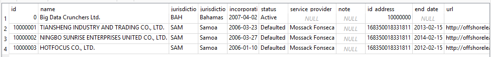
- Cette requête affichera une ligne donnée si cette ligne a son identifiant strictement inférieur à 10 000 004 et pas inférieur à 10 000 000, ou bien si son nom estBig Data Crunchers Ltd. ;
- Formulée plus simplement, cette requête renverra toutes les sociétés dont l’identifiant est compris entre 10 000 000 (inclus) et 10 000 004 (exclus) ainsi que toutes les sociétés dont le nom est Big Data Crunchers Ltd.
A savoir
On peut simplifier cette condition en :
(id > 10000000 AND id < 10000004) OR (name = 'Big Data Crunchers Ltd.')et même en :(id BETWEEN 10000001 AND 10000003) OR (name = 'Big Data Crunchers Ltd.')
A vous de jouer
Contexte
- Vous souhaitez placer sur une carte les différentes adresses contenues dans la table
address; - En effet, il est fréquent que des centaines de sociétés-écrans aient la même adresse ! Rien de très incohérent car ces sociétés n’existent que sur des documents légaux : elles n’ont ni bureaux ni employés ;
- La table
addresscontient une colonnecountriesqui (le plus souvent), contient le code à 3 lettres du pays dans lequel se trouve l’adresse en question. Cela va vous permettre de cibler certains pays ou juridictions afin de réaliser votre carte. Consignes - Dans la BDD des Panama Papers, recherchez dans la table
addressles lignes dont le code du pays est soit JEY soit PAN ; - Écrivez 2 versions de la requête, une avec
OR, une avecIN.
Réponse
- Il faut utiliser ici l'opérateur `=` deux fois, et combiner les deux avec un `OR` :
```sql
SELECT * FROM address WHERE countries = ‘JEY’ OR countries = ‘PAN’
- L'option alternative est d'utiliser `IN` : sql
SELECT * FROM address WHERE countries In ( ‘JEY’ , ‘PAN’)
```
Résumé
- WHERE permet de filtrer les lignes d’une table selon une certaine condition ;
- Cette condition fait souvent appel à des opérateurs de comparaison ;
- Cette condition renvoie pour chaque ligne
TRUEouFALSE; - Une fois les
TRUEouFALSEcalculés, WHERE se charge de ne garder que les lignes qui sont àTRUE; - Il est possible de combiner des conditions avec les opérateurs de comparaison
OR,ANDetNOT.
Récupérez des données issues de plusieurs tables avec FROM
Introduction
- Vous avez trouvé dans la table
entityla ligne correspondant à la société Big Data Crunchers ; - Ce qui nous intéresse ici, ça va être de trouver son adresse ;
- Nous allons le voir ici, l’adresse de cette société se trouve dans une autre table :
address; - Pour lier ces 2 tables,
entitycontient une clé étrangère qui référenceaddress.
Découvrez le fonctionnement de FROM
A savoir
FROM sert à spécifier dans quelle(s) table(s) vous voulez chercher vos données.
- Vous vous souvenez, à chaque fois que vous écrivez une requête qui commence par SELECT, le résultat ne sera toujours qu’un seul tableau. Une requête SELECT = un tableau en sortie, pas plus, pas moins ;
Question
Mais dans ce cas, comment combiner, au sein d’une même requête, des données de plusieurs tables ?
- Eh bien c’est possible, en indiquant plusieurs tables dans le FROM, séparées par une virgule.
Exemple
```sqlSELECT * FROM entity, address ; ``` Le SGBDR va prendre chaque ligne de la 1e table, qu’il va associer à chaque ligne de la 2e table.
Table 1 :
id_1 name 1 name1 2 name2 Table 2 :
id_2 values L200 val1 L201 val2 Résultat une fois l’association faite :
id_1 name id_2 values 1 name1 L200 val1 1 name1 L201 val2 2 name2 L200 val1 2 name2 L201 val2
Attention
Avec cette méthode, vous vous imaginez bien que le nombre d’associations peut vite exploser ! En effet, si dans le FROM vous indiquez 2 tables, l’une de 1 000 lignes, et l’autre de 2 000 lignes, eh bien le tableau que vous obtiendrez en réponse aura 2 millions de lignes, c’est énorme ! Et si vous rajoutez une 3e table de 10 lignes dans le FROM, vous multipliez encore par 10 le nombre de lignes : 20 millions !
- Quand on associe toutes les lignes de
entityavec toutes les lignes deaddress, le résultat fait plus de 4 milliards de lignes ! - Cette opération s’appelle le produit cartésien entre les 2 tables ;
- Le FROM effectue le produit cartésien entre toutes les tables qui lui sont données :
- Nous avons vu ce que ça donne avec 2 tables ;
- S’il n’y a qu’une table, le produit cartésien est égal… à cette même table, sans modification ;
- S’il y a plus 3 tables, le produit cartésien des 3 tables, c’est le produit cartésien de la 3e table avec (le produit cartésien des 2 premières tables).
Question
Mais comment gérer ce nombre incalculable de lignes ? À l’origine, on voulait juste connaître l’adresse qui est liée à chaque société, et là on se retrouve avec une table de chacune des sociétés liées à toutes les adresses possibles, c’est le bazar !
- En pratique, à chaque fois que vous utiliserez plus d’une table dans un FROM, vous utiliserez un WHERE pour ensuite effectuer un filtrage, afin de ne garder que les lignes qui vous intéressent. Voir chapitre suivant ;
Question
Peut-on ne pas mettre de FROM?
- Une requête sans le mot clé FROM est une requête qui ne se fait sur aucune table ;
- Elle ne renvoie donc qu’une seule ligne. Par exemple, la requête
SELECT 45, 20, 'bonjour'renvoie une table avec 3 colonnes et une seule ligne !
Appliquez les alias de table
- Il s'agit ici d'appeler la table entity `e` et la table address `a` , afin de simplifier l'écriture de la requête !
```sql
SELECT e.id AS id_entity, e.name AS nom_societe, a.id_address, a.address, a.countries FROM entity e, address a ; ```
A vous de jouer
**Contexte**
- La table `officer` est une vraie mine d'or ;
- Pour sûr, vous allez passer du temps à la fouiller de fond en comble pour écrire votre article ! Sauf qu'elle n'est pas très lisible. En effet, le nom du pays correspondant à chaque ligne de `officer` se trouve dans une autre table : `country` ;
- Il y a une colonne clé étrangère dans `officer` qui référence `country` ;
- Pour faciliter vos recherches, vous souhaitez donc rassembler les infos de ces 2 tables afin d'avoir le pays correspondant à chaque ligne de `officer` .
**Consignes**
- Dans la BDD des Panama Papers, écrivez la requête qui réalisera le produit cartésien entre les tables `officer` et `country` .
- Une fois votre requête exécutée, englobez-la dans cette autre requête. Celle-ci va compter le nombre de lignes de votre produit cartésien :
```sql
SELECT count(*) FROM (·
Réponse
- Le produit cartésien se calcule en indiquant les tables concernées dans le FROM, séparées par une virgule :
```sql
SELECT * FROM officer, country ;
- Cette requête vous indique que le produit cartésien comporte plus de 48 millions de lignes : sql
SELECT count(*) FROM ( SELECT * FROM officer, country ) r· ;
```
Résumé
- FROM effectue le produit cartésien de toutes les tables qui lui sont données ;
- Le produit cartésien de deux tables T1 et T2 est composé de toutes les combinaisons possibles entre les lignes de T1 et les lignes de T2 ;
- Le nombre de lignes est égal au nombre de lignes de T1 multiplié par le nombre de lignes de T2 ;
- On peut donner des alias aux tables afin de simplifier l’écriture des requêtes.
Liez des tables avec une jointure interne
Introduction
- Nous poursuivons ici notre enquête, en essayant de construire une table qui contienne à la fois les infos des sociétés, et celles sur les adresses qui correspondent à ces sociétés. Ce que l’on veut faire, ça s’appelle une jointure ;
- Mais nous irons même plus loin : nous chercherons également les intermédiaires qui ont aidé à créer Big Data Crunchers Ltd.
Découvrez la jointure interne
Question
Quel objectif cherchons-nous à atteindre avec une jointure interne ?
- Rappelez-vous : chaque société de
entitya une adresse. Les adresses se trouvent dans la tableaddress; - Le lien entre les 2 tables se fait grâce à une clé étrangère dans
entity, la colonneentity.id_address, qui fait référence à la clé primaireaddress.id_address. - Voici la table entity et sa clé étrangère :
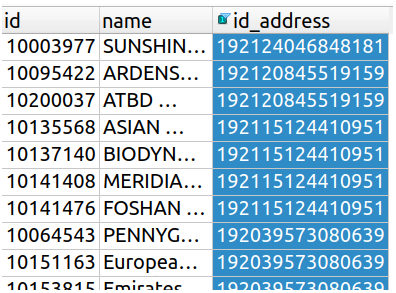
- Et ensuite la table address et sa clé primaire :
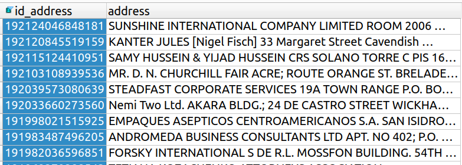
Important
Retenez bien ces 2 colonnes, elles sont primordiales pour comprendre la suite.
- Cette clé étrangère nous permet de connaître l'adresse de chaque société. C'est cette clé étrangère qui va nous permettre de rassembler dans une même table les sociétés et leurs adresses !
- Avant la jointure :

- Après la jointure :

- On remarque ici que quand on fait correspondre les lignes des 2 tables, pour une ligne donnée la valeur de `entity.id_address` est égale à la valeur de `address.id_address` . Ça paraît logique, mais c'est LE détail qui va tout changer pour ce qui suit ;
- Au chapitre précédent, on avait commencé le travail en faisant un produit cartésien entre `entity` et `address` , mais on s'est retrouvés avec une table à 4 milliards de lignes : c'est beaucoup trop !
- Voici un aperçu de ces premières lignes, obtenues avec la requête suivante :
```sql
SELECT e.id AS id_entity, e.name AS nom_societe, e.id_address AS ‘e.id_address’, a.id_address AS ‘a.id_address’, a.address, a.countries FROM entity e, address a ; ```
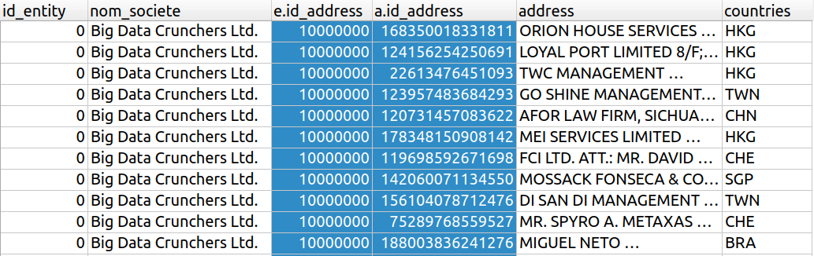
Attention
Mais ! Il y a quelque chose qui cloche : les colonnes
entity.id_addressetaddress.id_addressne sont pas égales !
- Effectivement ! Souvenez-vous, comme il s'agit d'un produit cartésien, on a associé *toutes* les lignes de `entity` à toutes les lignes de `address` , sans nous soucier si les adresses correspondent bien aux sociétés ! On a donc beaucoup de lignes totalement inutiles !
- Pour remédier à cela, on va filtrer les lignes inutiles : on va simplement enlever toutes les lignes pour lesquelles `entity.id_address` n'est pas égal à `address.id_address` . Notre condition de filtrage sera donc `e.id_address = a.id_address` .
```sql
SELECT e.id AS id_entity, e.name AS nom_societe, e.id_address AS ‘e.id_address’, a.id_address AS ‘a.id_address’, a.address, a.countries FROM entity e, address a WHERE e.id_address = a.id_address ; ```
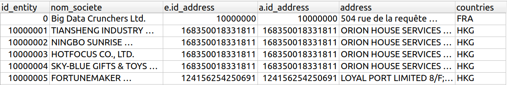
- Et voilà le résultat ! Notre jointure interne est faite !A savoir
Une jointure, c’est donc la succession d’un produit cartésien puis d’un filtrage. La condition utilisée pour le filtrage est appelée condition de jointure.
- La plupart du temps, la condition de jointure fait intervenir la clé étrangère de la 1e table avec la clé primaire de la 2e table. C’est le cas ici.
Vérifiez si le nombre de lignes a bien diminué
- Maintenant, réfléchissons au nombre de lignes renvoyées par notre jointure ;
- Lors du produit cartésien, le nombre de lignes était de : nombre_lignes_entity x nombre_lignes_address = 215896 x 19805 = 4 milliards environ ;
- Mais après le filtrage, on aura forcément moins de lignes :
- Premièrement, chaque ligne de entity possède une adresse au maximum, ou plus précisément un identifiant d’adresse. Par exemple, Big Data Crunchers Ltd a pour identifiant d’adresse 10000000 ;
- Deuxièmement, dans la table
address, il n’y a qu’un seul identifiant par adresse (c’est logique, c’est la clé primaire !) ; - Donc on en conclut que le résultat de la jointure interne aura au maximum autant de lignes qu’il y a de lignes dans entity !
- On passe donc de 4 milliards de lignes à 215 896 (maximum).
Question
Pourquoi “maximum” ?
- Parce que l’adresse de certaines sociétés est inconnue, mais patience, on en parle au chapitre suivant.
A savoir
Quand on fait une jointure d’une clé étrangère d’une table
Avers la clé primaire d’une tableB, le résultat contient au plus autant de lignes que la tableA.
Découvrez l’autre syntaxe de la jointure interne
- Pour réaliser une jointure, il y a une 2e syntaxe possible, avec les mots clés JOIN et ON :
```sql
SELECT *
FROM entity
JOIN address ON entity.id_address = address.id_address ;
- On peut d'ailleurs inverser `entity` et `address` , le résultat sera identique : sql
SELECT *
FROM address
JOIN entity ON entity.id_address = address.id_address ;
```
A savoir
En fait, cette syntaxe fait exactement la même chose que la syntaxe précédente (FROM + WHERE) : le JOIN effectue un produit cartésien, puis le ON effectue un filtrage. Il est cependant préférable d’utiliser cette syntaxe car c’est plus explicite : avec JOIN + ON, on voit directement que vous avez fait une jointure entre 2 tables !
Effectuez une jointure sur plusieurs colonnes
- Vous vous souvenez qu’une clé primaire peut être composée de plusieurs colonnes ! Si c’est le cas, alors une clé étrangère qui référence cette clé primaire sera forcément composée d’autant de colonnes ;
- Dans ce cas, il sera nécessaire d’effectuer une jointure sur plusieurs colonnes (allez, disons 2 colonnes pour cet exemple). La condition de jointure sera de cette forme :
table1.colonne_fk_1 = table2.colonne_pk_1 AND table1.colonne_fk_2 = table2.colonne_pk_2
A savoir
Ici, fk signifie clé étrangère, et pk clé primaire.
- Première syntaxe :
```sql
SELECT * FROM t1, t2 WHERE (t1.fk1 = t2.pk1 AND t1.fk2 = t2.pk2);
- Seconde syntaxe : sql
SELECT * FROM t1 JOIN t2 ON (t1.fk1 = t2.pk1 AND t1.fk2 = t2.pk2);
```
Ajoutez une condition dans le WHERE
- Nous avons atteint notre objectif : coller nos deux tables ;
- Dans le résultat, il nous faut maintenant retrouver *Big Data Crunchers Ltd* ;
- Pour cela, une petite restriction s'impose. On l'ajoute dans le WHERE. Comme il y a déjà une condition, on utilise AND :
```sql
SELECT * FROM entity, address WHERE entity.id_address = address.id_address AND entity.name = ‘Big Data Crunchers Ltd.’; ```
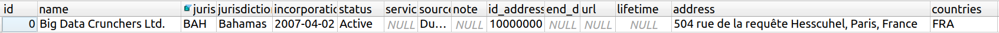
- Voici le résultat, où on voit enfin l’adresse de notre mystérieuse société apparaître !Mettez en place une jointure interne avec une table d’association
- Retrouvons maintenant les intermédiaires qui ont participé à la création de la société *Big Data Crunchers Ltd *!
- Précédemment, nous avons vu qu'une table d'association sert à modéliser une association de type *plusieurs à plusieurs* entre deux objets. C'est le cas du lien qui unit `entity` et `intermediary` , car plusieurs intermédiaires peuvent créer une société, et un intermédiaire peut créer plusieurs sociétés.
- Ainsi, il y a une table qui porte le nom de `assoc_inter_entity` , contenant entre autres :
- Une colonne `entity` , clé étrangère qui référence la table `entity` ;
- Une colonne `intermediary` , clé étrangère qui référence la table `intermediary` .
- Il nous faut donc faire une jointure sur 3 tables, comme ceci :
```sql
SELECT
i.id as intermediary_id,
i.name as intermediary_name,
e.id as entity_id,
e.name as entity_name,
e.status as entity_status
FROM
entity e,
assoc_inter_entity a,
intermediary i
WHERE
e.id = a.entity
AND a.inter = i.id
AND e.name = ‘Big Data Crunchers Ltd.’ ;
```
- Nous avons spécifié les 3 tables dans le FROM ;
- Dans le WHERE, nous donnons les deux conditions de jointure, ainsi que le nom de notre société ;
- Voilà, vous savez maintenant faire une (double) jointure avec une table d’association. Retenez bien cette requête, elle nous servira de base pour tous les chapitres suivants !
A vous de jouer
Contexte
- Votre BDD contient certains des bénéficiaires des sociétés-écrans ;
- Un bénéficiaire, c’est une personne à qui reviennent réellement les bénéfices d’une société ;
- Ces bénéficiaires se trouvent dans la table
officer; - Cette table peut aussi contenir d’autres personnes liées à la société en question. Consignes
- Les tables
officeretentitysont liées par une table d’association appeléeassoc_officer_entity; - Grâce à une jointure entre ces 3 tables, et à un filtrage sur le nom de la société, trouvez le nom des 2 personnes liées à la société Big Data Crunchers.
Réponse
- La jointure s’effectue grâce aux 2 premières conditions placées dans le WHERE, et le filtrage grâce à `e.name = "Big Data Crunchers Ltd."` .
```sql
SELECT * FROM entity e, assoc_officer_entity a, officer o WHERE a.entity = e.id AND a.officer = o.id AND e.name = “Big Data Crunchers Ltd.” ```
Résumé
- Une jointure regroupe les lignes de deux tables selon une certaine condition de jointure ;
- Une jointure est la succession d’un produit cartésien et d’un filtrage sur la condition de jointure ;
- La plupart du temps, la condition de jointure fait intervenir la clé étrangère de la 1e table avec la clé primaire de la 2e table ;
- Il y a deux syntaxes pour effectuer une jointure :
- Avec
FROMetWHERE; - Avec
JOINetON.
- Avec
- Lorsque nous avons affaire à une table d’association, alors il faut joindre 3 tables entre elles, c’est-à-dire faire 2 jointures dans une même requête SQL. Cette double jointure a donc 2 conditions de jointure ;
- Quand la clé primaire et la clé étrangère contiennent chacune plus d’une colonne, la condition de jointure doit combiner ces colonnes avec un
AND.
Maîtrisez les jointures externes et naturelles
Définissez une jointure externe
- Lorsque vous écrivez une jointure interne entre 2 tables, certaines lignes de la première ou de la seconde table peuvent être absentes du résultat de votre jointure ;
- Dans la table
entity, il y a des sociétés dont on ne connaît pas l’adresse ; - Pour ces sociétés, la valeur de
id_addresssera vide ; - En informatique, et notamment en SQL, une valeur vide est appelée valeur nulle, notée
NULL:
| Id | Name | id_address |
|---|---|---|
| 0 | BigData Crunchers Ltd. | 10000000 |
| 1000000004 | Dewberries, Garlics &Bittercress Limited | NULL |
| 1000000007 | Snakeberries, Bittercress& Maples Corporation | NULL |
A savoir
Mais au chapitre précédent, on avait utilisé cette condition de jointure :
entity.id_address = address.id_address. Ici, sientity.id_addressest nul, alors ça ne va plus marcher !
- En effet
address.id_addressest la clé primaire de la tableaddress; - Comme c’est une clé primaire, elle ne peut pas contenir de valeurs nulles. Or, comme ici
entity.id_addresssera nul pour certaines sociétés, alors la condition de jointure ne sera pas satisfaite pour ces lignes, c’est-à-dire pour les sociétés qui n’ont pas d’adresse. Comme cette condition de jointure est en fait une condition de filtrage, ces lignes seront écartées…
A savoir
Dans la jointure du chapitre précédent, les sociétés dont on ne connaît pas l’adresse seront écartées du résultat. Selon ce que vous souhaitez faire, ce comportement peut être problématique.
- Pour garder toutes les lignes de `entity` , même celles qui n'ont pas trouvé de correspondance dans la table `address` , on va utiliser une **jointure externe à gauche** (on considère que entity est à gauche car c'est la 1e table à être citée dans la requête) :
```sql
SELECT *
FROM entity
LEFT OUTER JOIN address ON entity.id_address = address.id_address;
- Si au contraire, nous voulons garder *toutes* les adresses (qu'elles correspondent à une société ou non), il faut alors faire une jointure **externe à droite** : sql
SELECT *
FROM entity
RIGHT OUTER JOIN address ON entity.id_address = address.id_address;
```
A savoir
Bien entendu, une jointure externe à droite est équivalente à une jointure externe à gauche pour laquelle on aurait interverti
entityetaddress. Certains SGBDR n’acceptent d’ailleurs que l’une de ces deux jointures : c’est alors à vous d’intervertir les tables !
- Il ne me reste plus qu'à vous donner la syntaxe de la jointure **entière** ! Celle-ci nous permet de garder à la fois toutes les adresses et toutes les sociétés :
```sql
SELECT * FROM entity FULL OUTER JOIN address ON entity.id_address = address.id_address; ```
A savoir
Certains SGBD ne supportent pas toutes les jointures externes : SQLite par exemple n’accepte pas la jointure externe à droite, et MySQL ne supporte pas les jointures externes totales.
- Au chapitre précédent, on avait dit que quand on fait une jointure interne d’une clé étrangère d’une table
Avers la clé primaire d’une tableB, le résultat contient au plus autant de lignes que la tableA; - Pourquoi “au plus”? Car pour une jointure interne, certaines lignes pouvaient être ignorées si elles ne trouvaient pas de correspondances dans l’autre table ;
- Mais avec la jointure externe, on garde les lignes qui n’ont pas de correspondance ; le résultat aura donc exactement autant de lignes que la table
A.
| type | depuis | vers | nombre de lignes |
|---|---|---|---|
| Jointure interne | depuis une clé étrangère d’une table A (table de gauche) | vers une potentielle clé primaire d’une table B (table de droite) | au plus autant de lignes que la table A |
| Jointure externe gauche | exactement autant de lignes que la table A |
Découvrez la jointure naturelle
- Il arrive parfois que dans une condition de jointure, les colonnes des clés étrangères et clés primaires aient les mêmes noms. Dans ce cas, on peut simplifier l'écriture de la requête ;
- Voici la requête correspondante :
```sql
SELECT e.id AS id_entity, e.name AS nom_societe, e.id_address AS ‘e.id_address’, a.id_address AS ‘a.id_address’, a.address, a.countries FROM entity e NATURAL JOIN address a ; ```
A savoir
Quand vous faites cela, s’il y a d’autres colonnes qui ont le même noms dans les 2 tables, alors elles seront aussi incluses à la condition de jointure, même si ce n’est pas ce que vous voulez ! Vérifiez donc bien que le résultat qui vous est renvoyé est cohérent.
A vous de jouer
**Contexte**
- Explorer des données, c’est aussi vérifier leur qualité : sont-elles fiables, sont-elles cohérentes ?
- Dans un souci de cohérence, vous décidez de vérifier si certaines adresses ne sont pas liées à des sociétés ;
- Si c’est le cas, alors pourquoi se retrouvent-elles dans la base de données ? Ce sera une question à élucider.
**Consignes**
- La requête précédente effectue une jointure externe gauche, afin de garder toutes les lignes de entity qui n'ont pas de correspondance :
```sql
SELECT e.id AS id_entity, e.name AS nom_societe, e.id_address AS ‘e.id_address’, a.id_address AS ‘a.id_address’, a.address, a.countries FROM entity e LEFT JOIN address a ON e.id_address = a.id_address ; ``` - Transformez cette requête pour garder les adresses qui n’ont pas de société (plus besoin par contre de garder les sociétés sans adresse).
A savoir
Attention ! Vous devez toujours utiliser la jointure externe À GAUCHE !
Réponses
- Voici la requête que vous devez obtenir :
```sql
SELECT
e.id AS id_entity,
e.name AS nom_societe,
e.id_address AS ‘e.id_address’,
a.id_address AS ‘a.id_address’,
a.address,
a.countries
FROM
address a
LEFT JOIN
entity e ON e.id_address = a.id_address ;
```
- Il y a en effet beaucoup d’adresses qui ne correspondent pas à des sociétés de entity ;
- Mais en y regardant d’un peu plus près, on voit que la table intermediary a elle aussi une clé étrangère référençant la table address ;
- Les adresses qui ne correspondent pas à une société correspondent donc probablement à des intermédiaires !
Résumé
- Pour garder toutes les informations de l’une des tables (ou des 2 tables), il faut utiliser une jointure externe ;
- Une jointure externe à gauche garde toutes les lignes de la table de gauche ;
- Rappel de syntaxes :
- jointure externe gauche :
LEFT OUTER JOIN - jointure externe droite :
RIGHT OUTER JOIN - jointure externe totale :
FULL OUTER JOIN
- jointure externe gauche :
2.3.3 Appliquez d’autres fonctionnalités
Agrégez des lignes de données avec GROUP BY
Introduction
- Précédemment, nous avons trouvé deux intermédiaires qui sont liés à Big Data Crunchers Ltd. ;
- Pour rappel, les intermédiaires, ce sont des personnes, des banques ou des cabinets d’avocats qui aident, qui demandent ou qui réalisent eux-mêmes la création de sociétés. Parfois, ces sociétés sont des sociétés-écrans enregistrées dans des paradis fiscaux ;
Question
Est-ce le cas des 2 intermédiaires que nous avons trouvés ? Leur activité est-elle suspecte ?
- Pour le savoir, nous allons utiliser un type de requête SQL qui s’appelle l’agrégation ;
A savoir
L’agrégation est une opération extrêmement courante, car elle est très pratique ! Mais pour ne pas faire n’importe quoi, il est nécessaire de bien comprendre comment elle fonctionne.
Découvrez l’agrégation
- On utilise l’agrégation lorsque l’on veut calculer un résultat qui porte sur plusieurs lignes d’une table ;
- On dit que l’on agrège ces lignes, c’est-à-dire que l’on forme des agrégats pour effectuer sur eux une opération ;
- Prenons la question suivante :
- Combien de sommiers de chaque modèle sont présents dans l’entrepôt ?
- Ici, il y aura un agrégat par modèle. Il s’agit alors de calculer une valeur pour chaque agrégat :
- Le nombre de sommiers pour le modèle Toukonfor ;
- Le nombre de sommiers pour le modèle Nuipésible ;
- Le nombre de sommiers pour le modèle Ferdodo ;
- Etc.
- Ceci peut se résumer par un tableau :
| modèle | nombre de sommiers |
|---|---|
| Toukonfor | 30 |
| Nuipésible | 23 |
| Ferdodo | 25 |
- Pour faire une belle agrégation, il faut deux étapes, et donc deux ingrédients :
- Un groupe de colonnes de partitionnement ;
- Une (ou des) fonction(s) d’agrégation.
Partitionnez vos données
- Pour illustrer cette partie, reprenons les Panama Papers.
- Nous allons utiliser 3 colonnes de la table
entity:jurisdiction: la juridiction auprès de laquelle la société a été créée. Le plus souvent, la juridiction est un pays ;status: le statut de la société (au moment de la publication des Panama Papers) : est-elle active ? inactive ? dissoute ? en liquidation ? etc. Rassurez-vous, pas besoin de connaître la signification de ces termes : je ne les maîtrise pas moi-même ;lifetime: durée de vie de sociétés : c’est le nombre de jours durant lesquels la société a été active, depuis sa création jusqu’à sa date de dissolution.
A savoir
Souvent, les mots juridiction et pays sont synonymes, car en général, les lois sont les mêmes à l’intérieur d’un même pays. Mais parfois, un pays possède plusieurs juridictions : c’est souvent le cas des états fédéraux, dans lesquels chaque état possède des lois différentes. Par exemple, l’état du Delaware aux USA est souvent considéré comme un paradis fiscal, car les lois y sont plus avantageuses pour les sociétés que dans les autres états des USA.
- Voici un aperçu de ces colonnes :
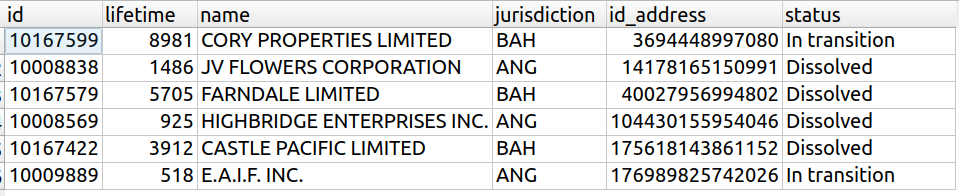
- Si je choisis de partitionner les sociétés par juridiction, cela signifie que je veux former des groupes de sociétés, tels que toutes les sociétés d’un même groupe doivent être de la même juridiction. On appelle ces groupes des agrégats.
A savoir
Plus formellement, le partitionnement a pour but de créer des groupes de lignes de manière à ce que deux lignes se trouvant dans un même groupe aient les mêmes valeurs pour les colonnes de partitionnement.
- Je peux également partitionner sur plusieurs colonnes. Par exemple, je peux partitionner mes sociétés par les colonnes jurisdiction et status. Ainsi, au sein d’un même groupe de sociétés, la juridiction et le statut seront identiques :
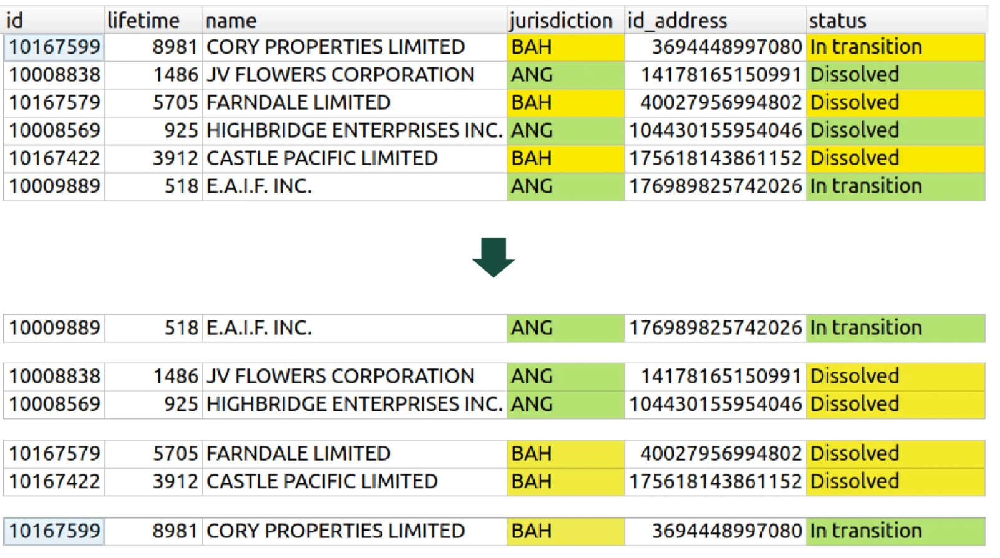
Partitionnement selon les colonnes [ jurisdiction, status ]- Ici par exemple, les sociétés du 2e groupe ont toutes le statut “Dissolved” (dissoutes), et proviennent de la juridiction Anguilla (dont le code est “ANG”).
Appliquez des fonctions d’agrégation
- Une fois les agrégats formés, il faut bien en faire quelque chose !
- C’est là qu’intervient la fonction d’agrégation. Son rôle est de prendre en entrée un groupe de plusieurs lignes, d’effectuer un calcul sur celles-ci, puis de retourner *une unique valeur pour chacun des groupes *;
- Parmi les fonctions d’agrégation, on peut trouver la moyenne, le minimum, le maximum, la somme, etc.
- Par exemple, on peut appliquer la fonction qui calculera la moyenne des durées de vie des sociétés (lifetime). On l’applique d’abord au groupe des sociétés de la juridiction ANG et du statut “In transition”, puis au groupe des sociétés de ANG ayant le statut “Dissolved”, etc.
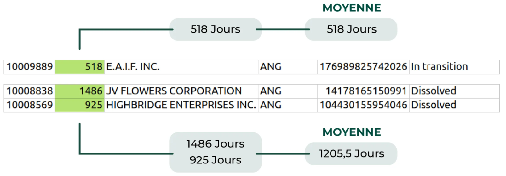
- En général, une fonction d’agrégation prend en entrée une liste et renvoie une unique valeur ;
- Par exemple, pour calculer la durée de vie moyenne des sociétés, la fonction moyenne prendra en entrée la liste des durées de vie des sociétés de l’agrégat, et retournera la moyenne de cette liste. C’est ce qui se passe sur l’image ci-dessus.
A savoir
La liste en entrée correspond à 1 colonne (ici, la colonne lifetime).
- Mais il est également possible de trouver des fonctions d’agrégation qui prennent plusieurs colonnes en entrée (donc plusieurs listes) ou parfois même l’ensemble des colonnes d’une table ;
- Voici donc le résultat d’une agrégation avec partitionnement selon les colonnes
statusetjurisdiction, en appliquant deux fonctions d’agrégation :- La fonction moyenne (en anglais average, notée avg) sur la colonne
lifetime; - La fonction compter (en anglais count), qui compte le nombre de sociétés de l’agrégat.
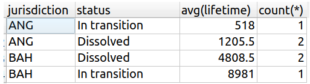
- La fonction moyenne (en anglais average, notée avg) sur la colonne
- Grâce à ce résultat, on peut dire que la durée de vie moyenne des 2 sociétés dissoutes des Bahamas est de 4 808,5 jours. C’est la classe, non ?
Déterminez la clé primaire après une agrégation
- Vous vous souvenez, lors d’un précédent chapitre, nous avions dit qu’il est très important de connaître la potentielle clé primaire d’une table ! Je vous propose ici un petit raisonnement pour trouver la clé primaire d’une table issue d’une agrégation.
A savoir
Comme la fonction d’agrégation retourne une valeur pour chacun des agrégats, la table qui résultera de l’agrégation aura autant de lignes que d’agrégats.
- La nature des objets représentés par une ligne avant l’agrégation (ici : une société) ne sera pas la même qu’une ligne après agrégation (ici : un ensemble de sociétés) ;
- Si la nature des lignes a changé, alors la clé primaire a probablement aussi changé !
- Mais heureusement, c’est assez simple. Comme on groupe par
statusetjurisdiction, alors il ne peut pas y avoir (dans le résultat) 2 lignes qui ont à la fois le même statut et la même juridiction (bah oui, sinon elles auraient été regroupées en une !). Il y a donc bien unicité, et on peut prendre comme clé primaire[status, jurisdiction]!
A savoir
La clé primaire du résultat d’une agrégation est composée des colonnes de partitionnement. Parfois, cette clé est simplifiable.
Agrégez vos données avec GROUP BY
- Voici comment écrire la requête SQL qui a permis d'obtenir la table précédente :
```sql
SELECT
jurisdiction,
status,
avg(lifetime),
count(*)
FROM
entity
GROUP BY
jurisdiction, status
```
- Nous avons placé les colonnes de partitionnement (ici status et jurisdiction ) derrière le mot clé GROUP BY, et les fonctions d’agrégation count() (en français “compter”) et avg() (mis pour “average”, soit “moyenne”) dans le SELECT ;
- Optionnellement, on peut aussi ajouter dans le SELECT les colonnes de partitionnement comme ici ;
- Voilà, vous savez tout ! Tout ? Non… vous allez voir que quand on fait une agrégation, il faut faire très attention à ce que l’on met dans le SELECT ;
- Dans le SELECT, on peut faire appel à une fonction d’agrégation uniquement si chacune des autres colonnes :
- Résulte elle aussi d’une fonction d’agrégation ;
- OU
- Est une colonne de partitionnement présente dans le GROUP BY.
A savoir
Il se trouve que le SGBDR SQLite est trop permissif, contrairement à tous les autres SGBDR. Il ne vous renverra pas d’erreur si vous ne respectez pas cette règle. Mais habituez-vous à la respecter car si vous ne le faites pas, votre requête sera totalement incohérente et sera le signe d’une erreur de raisonnement.
Continuez notre investigation
- Prêt à reprendre la grosse requête du chapitre précédent pour continuer l'enquête ? Courage, vous en êtes capable !
- Voici la requête utilisée :
```sql
SELECT i.id as intermediary_id, i.name as intermediary_name, e.jurisdiction, e.jurisdiction_description, count(*) as nb_societes FROM intermediary i, assoc_inter_entity a, entity e WHERE a.entity = e.id AND a.inter = i.id AND (i.id = 5000 OR i.id = 5001) GROUP BY i.id, i.name, e.jurisdiction, e.jurisdiction_description ; ``` - Voici la table que nous obtenons en résultat :
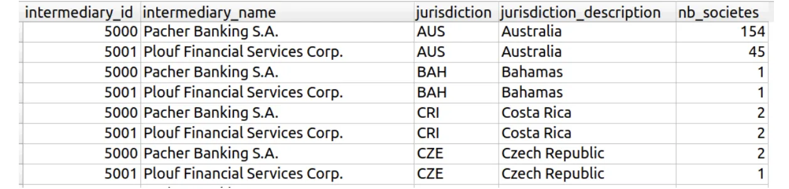
A vous de jouer
**Contexte**
- Ouh là, vous avez été un peu trop vite avec la requête ci-dessus : elle vous donne le nombre de sociétés créées par chacun des 2 intermédiaires dans chacune des juridictions ;
- Mais il aurait fallu savoir combien de sociétés ont créé ces 2 intermédiaires, **quelle que soit** la juridiction, pour avoir une vue plus générale !
- En effet, quand on analyse des données, on va toujours “du général au particulier” : on regarde d'abord les caractéristiques globales du jeu de données, pour ensuite affiner et rechercher des informations plus spécifiques ;
- Vous souhaitez aussi connaître le début des activités des intermédiaires, en allant chercher pour chacun d'eux la date de création de la première société qu'ils ont créée.
**Consignes**
- Voici la requête écrite précédemment :
```sql
SELECT
i.id as intermediary_id,
i.name as intermediary_name,
e.jurisdiction,
e.jurisdiction_description,
count(*) as nb_societes
FROM
intermediary i,
assoc_inter_entity a,
entity e
WHERE
a.entity = e.id
AND a.inter = i.id
AND (i.id = 5000 OR i.id = 5001)
GROUP BY
i.id, i.name, e.jurisdiction, e.jurisdiction_description ;
```
- Modifiez-la en :
- Supprimant la notion de juridiction (c’est-à-dire en ne groupant que par intermédiaire) ;
- Ajoutant une colonne donnant la valeur minimale de la colonne incorporation_date (donnant la date de création des sociétés) ; cette colonne sera renommée premiere_activite** **.
- Voici le résultat attendu :
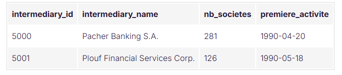
Réponse
1. Ici, il faut supprimer du GROUP BY les colonnes relatives à la juridiction ;
2. Il faut aussi penser à les supprimer du SELECT, car elles ne résultent pas d'une fonction d'agrégation, et elles ne sont plus dans le GROUP BY ;
3. Pour ajouter la nouvelle colonne, il faut ajouter `min(incorporation_date)` dans le SELECT ;
- Voici la requête à écrire pour obtenir votre résultat :
```sql
SELECT i.id as intermediary_id, i.name as intermediary_name, count(*) as nb_societes, min(incorporation_date) as premiere_activite FROM intermediary i, assoc_inter_entity a, entity e WHERE a.entity = e.id AND a.inter = i.id AND (i.id = 5000 OR i.id = 5001) GROUP BY i.id, i.name; ```
Résumé
- Les deux composantes de l’agrégation sont :
- Les colonnes de partitionnement ;
- La/les fonction(s) d’agrégation.
- Une fonction d’agrégation classique prend plusieurs valeurs en entrée, et renvoie une unique valeur ;
- On place les fonctions d’agrégation dans le SELECT, et les colonnes de partitionnement dans le GROUP BY ;
- Le résultat d’une agrégation donne une table avec des lignes qui ne représentent pas les mêmes objets qu’avant l’agrégation. La clé primaire est donc modifiée. Elle est composée de colonnes de partitionnement, et est parfois simplifiable ;
- Dans le SELECT, on peut faire appel à une fonction d’agrégation uniquement si chacune des autres colonnes résulte elle aussi d’une fonction d’agrégation, ou bien si elle est une colonne de partitionnement présente dans le GROUP BY.
Filtrez vos données agrégées avec HAVING
Introduction
- La clause
SQL HAVINGest généralement utilisée avec la clauseGROUP BYpour filtrer des groupes de lignes retournées ; - Les lignes ne sont incluses dans le groupe que si la condition spécifiée est VRAIE ;
- La clause
SQL GROUP BYorganise les données en groupes sur la base d’une ou de plusieurs valeurs communes ; elle est le plus souvent utilisée pour obtenir des informations récapitulatives et calculer des statistiques agrégées ; - Il peut y avoir une certaine confusion entre
WHEREetHAVING, mais la différence s’explique facilement :- La clause
WHEREapplique une condition sur l’ensemble de la colonne en filtrant les lignes individuelles. Elle ne fonctionne pas avec les fonctions d’agrégation telles queSUM()etAVG(); - En revanche,
HAVINGapplique des conditions de filtrage sur les groupes créés par la clauseGROUP BY. Elle peut être utilisée avec les fonctions d’agrégation.
- La clause
Exemple
Considérons le tableau ci-dessous. Il présente une liste de clients regroupés par ville dans plusieurs pays. Si nous voulions voir les groupes de villes comptant 3 clients ou plus, nous aurions besoin d’une clause
HAVINGqui satisfasse cette condition pour chacune des villes (c’est-à-dire les groupes).
CustomerID City Country 009 Berlin Germany 045 Berlin Germany 101 Berlin Germany 098 Bern Switzerland 003 Bern Switzerland 154 Buenos Aires Argentina 111 Buenos Aires Argentina 039 Buenos Aires Argentina … … … 191 Walla Poland
- En d’autres termes, la clause
HAVINGest essentiellement une clauseWHEREqui opère sur les enregistrements renvoyés parGROUP BY.
La syntaxe HAVING
HAVINGne fonctionnera pas sans la clauseGROUP BY;- Elle doit suivre la clause
GROUP BYdans une requête et doit précéder la clauseORDER BY(si vous en utilisez une) ; - Seuls les groupes qui répondent aux critères de
HAVINGseront renvoyés.
Exemple
Essayons la requête suivante sur la table **`customers`** table : ```sqlSELECT COUNT(CustomerID), City, Country FROM Customers WHERE Country = ‘Brazil’ GROUP BY City, Country HAVING COUNT(CustomerID) > 1 ``` Que se passe-t-il dans cette requête ? - Premièrement, la clause
WHEREfiltre les lignes applicables pour le pays “Brésil” ; - Deuxièmement, la clauseGROUP BYregroupe les entrées en fonction des valeurs des colonnesCityetCountry; - Troisièmement, la clauseHAVINGfiltre les groupes - dans ce cas, nous ne sommes intéressés que par les villes brésiliennes qui ont plus d’un client.
Exemples
- Plongeons dans des exemples présentant différentes fonctions d’agrégation afin de comprendre comment fonctionne réellement la clause
HAVING; - Nous allons utiliser la table client suivante
OrderDetailssuivante. Elle comporte un total de 518 lignes de données de commandes simples. Ces données comprennent des informations telles que les adressesQuantityetProductIDcommandées, ainsi qu’une adresse uniqueOrderIDpour chaque commande.
| OrderDetailID | OrderID | ProductID | Quantity |
|---|---|---|---|
| 1 | 10248 | 11 | 12 |
| 2 | 10248 | 42 | 10 |
| 3 | 10248 | 72 | 5 |
| 4 | 10249 | 14 | 9 |
| 5 | 10249 | 14 | 2 |
| 6 | 10249 | 51 | 40 |
| … | … | … | … |
| 518 | 10443 | 28 | 12 |
- En tant qu’analyste de données, l’une de vos principales tâches consiste à obtenir des informations sur les données de vente ;
- Nous allons explorer trois problèmes simples visant à trouver certaines de ces informations.
Exemple 1 HAVING avec COUNT()
Exemple
**Problème** : lister tous les produits ayant fait l'objet de plus de 12 commandes individuelles. **Recherche** : ```sqlSELECT COUNT(ProductID), ProductID FROM OrderDetails GROUP BY ProductID HAVING COUNT(ProductID) > 12 ``` Résultat :
Number of Records: 5
COUNT(ProductID) ProductID 14 31 14 59 13 62 13 71 14 72 Ensuite, la clause
HAVINGplace la condition de filtrage sur chacun de ces groupes et renvoie ceux dont le nombre est supérieur à 12. Ici,GROUP BYregroupe les commandes ayant le mêmeProductID. Si nous n’avions pas inclus la clauseHAVING, cette requête renverrait essentiellement le nombre d’enregistrements égal au nombre unique deProductIDs.
Exemple 2 HAVING avec SUM()
Exemple
**Problème** : lister tous les produits qui ont eu plus de 350 quantités totales commandées. **Recherche** : ```sqlSELECT SUM(Quantity), ProductID FROM OrderDetails GROUP BY ProductID HAVING SUM(Quantity) > 350 ORDER BY SUM(Quantity) DESC ``` Résultat :
Number of Records: 3
COUNT(ProductID) ProductID 458 31 430 60 369 35 Dans l’exemple ci-dessus,
GROUP BYregroupe de façon similaire les commandes parProductID. Ensuite, la clauseHAVINGplace la condition de filtrage (la somme de la colonneQuantitydoit être supérieure à 350) sur chacun de ces groupes. Enfin,ORDER BYrenvoie les résultats dans l’ordre décroissant.
Exemple 3** **HAVING avec AVG()
Exemple
**Problème** : lister tous les produits qui ont eu plus de 35 quantités commandées en moyenne et au moins 4 commandes passées. **Recherche** : ```sqlSELECT AVG(Quantity), COUNT(ProductID), ProductID FROM OrderDetails GROUP BY ProductID HAVING AVG(Quantity) > 35 AND COUNT(ProductID) > 3 ORDER BY AVG(Quantity) DESC ``` Résultat :
Number of Records: 6
AVG(Quantity) ProductID COUNT(ProductID) 41.25 23 4 41 35 9 38.75 58 4 35.83 60 12 35.6 44 5 35.11 33 9 Dans l’exemple 3, après avoir regroupé les commandes par
ProductID, la clauseHAVINGplace deux conditions de filtrage sur les groupes : une quantité moyenne de commande supérieure à 35 et un nombre de commandes individuelles supérieur à 3. Sur la base des trois exemples ci-dessus, nous avons appris queProductID31, par exemple, était inclus dans le plus grand nombre de commandes individuelles (14) et avait également le plus grand nombre de quantités commandées sur l’ensemble des commandes passées (458). C’est certainement l’un des produits les plus populaires du magasin ! En outre,ProductIDs23, 35 et 58 ont enregistré les quantités moyennes les plus élevées par commande. Des informations clés comme celles-ci sont précieuses, car elles permettent aux entreprises de savoir sur quels produits se concentrer et comment les commercialiser.
Maîtriser la clause HAVING
- Comme nous venons de le voir, la clause
HAVINGest indispensable pour calculer des valeurs agrégées sur des groupes de données ; - Ainsi, elle est toujours utilisée en combinaison avec une clause
GROUP BYet restreint les données sur les enregistrements groupés plutôt que sur les enregistrements individuels.
Ordonnez vos données avec ORDER BY
Introduction
- Il est possible de simplement **trier** les lignes selon la colonne `nb_societes` : de la plus grande valeur à la plus petite ;
- Voici comment utiliser ORDER BY :
```sql
SELECT * FROM entity ORDER BY lifetime ;
- Cette requête renvoie l'ensemble des lignes de la table `entity` , et classe les sociétés selon leur colonne `lifetime`* ;* - Par défaut, le tri se fait dans l'ordre ascendant, c'est-à-dire du plus petit au plus grand. La requête précédente est donc équivalente à celle-ci : sql
SELECT * FROM entity ORDER BY incorporation_date ASC ;
```
Question
Et pour trier dans l’ordre descendant ?
- Il suffit de remplacer ASC par DESC :
```sql
SELECT * FROM entity ORDER BY incorporation_date DESC ; ```
Trier sur plusieurs colonnes
- Parfois, on peut vouloir trier selon plusieurs colonnes. C'est bien entendu possible ! Il suffit de les séparer par une virgule ;
- Utilisons le ORDER BY dans le cadre de notre enquête :
```sql
SELECT i.id as intermediary_id, i.name as intermediary_name, e.jurisdiction, e.jurisdiction_description, count(*) as nb_societes FROM intermediary i, assoc_inter_entity a, entity e WHERE a.entity = e.id AND a.inter = i.id AND (i.id = 5000 OR i.id = 5001) GROUP BY i.id, i.name, e.jurisdiction, e.jurisdiction_description ORDER BY nb_societes DESC LIMIT 5 ``` - Et voici le résultat de cette requête :
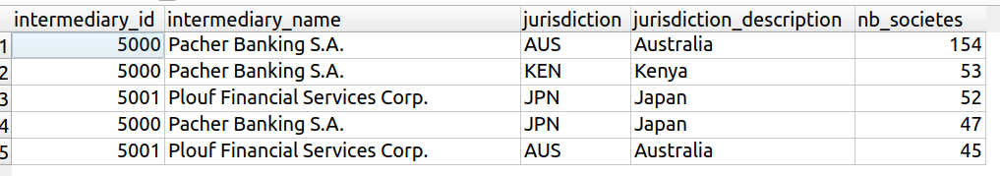
- Bon, parmi ces 5 lignes, on n’a pas encore de paradis fiscaux… On va donc continuer nos recherches !À vous de jouer
**Contexte**
- Afin de réaliser une frise chronologique dans votre article, vous souhaitez avoir un aperçu du début de l'activité des 2 intermédiaires, afin de savoir quand faire débuter votre frise ;
- Vous décidez donc d'afficher la date des premières sociétés créées.
**Consignes**
- Modifiez cette requête pour trier les lignes selon la colonne `incorporation_date` de la table `entity` dans l'ordre croissant :
```sql
SELECT i.id as intermediary_id, i.name as intermediary_name, e.jurisdiction, e.jurisdiction_description, e.incorporation_date FROM intermediary i, assoc_inter_entity a, entity e WHERE a.entity = e.id AND a.inter = i.id AND (i.id = 5000 OR i.id = 5001) ```
Réponse
- Il suffit d'ajouter la colonne voulue après un ORDER BY :
```sql
SELECT i.id as intermediary_id, i.name as intermediary_name, e.jurisdiction, e.jurisdiction_description, e.incorporation_date FROM intermediary i, assoc_inter_entity a, entity e WHERE a.entity = e.id AND a.inter = i.id AND (i.id = 5000 OR i.id = 5001) ORDER BY incorporation_date ```
Résumé
- On trie des lignes grâce à ORDER BY ;
- L’ordre de tri peut être défini grâce à ASC et DESC ;
- Pour trier selon plusieurs colonnes, il faut écrire ces colonnes après le ORDER BY, en les séparant par une virgule.
Assemblez des tables avec UNION
Introduction
- La commande
UNIONpermet de mettre bout-à-bout les résultats de plusieurs requêtes utilisant elles-même la commandeSELECT; - C’est donc une commande qui permet de concaténer les résultats de 2 requêtes ou plus ;
- Pour l’utiliser il est nécessaire que chacune des requêtes à concaténer retournes le même nombre de colonnes, avec les mêmes types de données et dans le même ordre.
A savoir
- Par défaut, les enregistrements exactement identiques ne seront pas répétés dans les résultats ;
- Pour effectuer une union dans laquelle même les lignes dupliquées sont affichées il faut plutôt utiliser la commande
UNION ALL.
Syntaxe
- La syntaxe pour unir les résultats de 2 tableaux sans afficher les doublons est la suivante :
```sql
SELECT * FROM table1 UNION SELECT * FROM table2 ```
Schéma
- L’union de 2 ensembles A et B est un concept qui consiste à obtenir tous les éléments qui correspondent à la fois à l’ensemble A ou à l’ensemble B ;
- Cela se résume très simplement par un petit schéma où la zone en bleu correspond à la zone que l’ont souhaite obtenir (dans notre cas : tous les éléments).
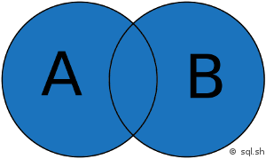
Exemple
- Imaginons une entreprise qui possède plusieurs magasins et dans chacun de ces magasins il y a une table qui liste les clients ;
- La table du magasin n°1 s’appelle “
magasin1_client” et contient les données suivantes :
| prenom | nom | ville | date_naissance | total_achat |
|---|---|---|---|---|
| Léon | Dupuis | Paris | 1983-03-06 | 135 |
| Marie | Bernard | Paris | 1993-07-03 | 75 |
| Sophie | Dupond | Marseille | 1986-02-22 | 27 |
| Marcel | Martin | Paris | 1976-11-24 | 39 |
- La table du magasin n°2 s’appelle “
magasin2_client” et contient les données suivantes :
| prenom | nom | ville | date_naissance | total_achat |
|---|---|---|---|---|
| Marion | Leroy | Lyon | 1982-10-27 | 285 |
| Paul | Moreau | Lyon | 1976-04-19 | 133 |
| Marie | Bernard | Paris | 1993-07-03 | 75 |
| Marcel | Martin | Paris | 1976-11-24 | 39 |
- Sachant que certains clients sont présents dans les 2 tables, pour éviter de retourner plusieurs fois les mêmes enregistrement, il convient d’utiliser la requête `UNION`. La requête SQL est alors la suivante :
```sql
SELECT * FROM magasin1_client UNION SELECT * FROM magasin2_client ``` - Résultat :
| prenom | nom | ville | date_naissance | total_achat |
|---|---|---|---|---|
| Léon | Dupuis | Paris | 1983-03-06 | 135 |
| Marie | Bernard | Paris | 1993-07-03 | 75 |
| Sophie | Dupond | Marseille | 1986-02-22 | 27 |
| Marcel | Martin | Paris | 1976-11-24 | 39 |
| Marie | Leroy | Lyon | 1982-10-27 | 285 |
| Paul | Moreay | Lyon | 1976-04-19 | 133 |
- Le résultat de cette requête montre bien que les enregistrements des 2 requêtes sont mis bout-à-bout mais sans inclure plusieurs fois les mêmes lignes.
Résumé
- Une union entre 2 tables est le fait d’ajouter les lignes de l’une à la suite des lignes de l’autre ;
- Une union entre 2 tables s’effectue avec UNION ;
- Les 2 tables doivent avoir le même schéma, c’est-à-dire les mêmes colonnes (et les mêmes types de colonnes).
Synthèse
Le format d’une requête d’extraction de données (interrogation) sans imbrication
| Projection : SELECT * [DISTINCT] champ1, champ2… | SELECT C.NumCli, M.Num_Menu, SUM(Quantité) AS [Quantité totale commandée] |
|---|---|
| Choix des tables :FROM table1 T1, Table2 T2 | FROM CLIENT C, COMMANDE Co, LIGNE_COMMANDE LC, MENU M |
| Sélection : WHERE Prédicat | WHERE C.Num_cli = Co.Num_Cli |
| Jointure : WHERE T1.Clé1 = T2.Clé1 | AND Co.Num_Com = LC.Num_Com AND LC.Num_Menu = M.Num_Menu AND Ville_cli IN (“Brest”, “Bordeaux”, “Bayonne”) |
| Regroupement : GROUP BY champ1, champ2 | GROUP BY C.NumCli, M.Num_Menu |
| Sélection sur le résultat d’une fonction : HAVING | HAVING SUM(Quantité) > 100 |
| Tri : ORDER BY champ1 DESC, champ2… | ORDER BY C.NumCli |
Le format des requêtes de mise à jour des donnée
| INSERT | UPDATE | DELETE |
|---|---|---|
| INSERT INTO Nom_Table (nomchamp1, nomchamp2…) VALUES (val1, val2…) ; | UPDATE Nom_Table SET Colonne = Expression ou valeur WHERE Condition ; | DELETE *FROM Nom_Table WHERE Condition ; |
2.4 Le tableur : généralités
Programme
Pédagogie
Compétences attendues
- Automatiser des calculs en écrivant des formules
- Concevoir et modifier la structure d’un modèle de feuille de calcul
Savoirs associés
- Découverte du tableur : le classeur, la feuille de calcul, la cellule et les types de données
- Formules utilisant des fonctions logiques, de calculs appliqués aux nombres et aux dates
Plan
- Cours 2.4.1 Le fonctionnement général du tableur 2.4.2 Les formules de calcul 2.4.3 Les fonctions de base
- Synthèse
Mots clés
Argument • Cellule • Classeur • Condition • Feuille de calcul • Fonction • Formule de calcul • Nom • Plage de cellules • Progiciel-outil • Référence • Zone
Comment concevoir des applications, c’est-à-dire des modèles permettant de traiter, et de gérer, un grand nombre de données, d’automatiser des calculs répétitifs, des traitements ou encore de résoudre des problèmes de gestion ? Le tableur peut apporter une réponse à toutes ces questions et constituer une aide à la décision en contribuant à résoudre des problèmes de gestion. Le tableur Excel est pris ici comme exemple.
Cours
2.4.1 Le fonctionnement général du tableur
Introduction
Définition
Le tableur est un progiciel-outil, donc un ensemble cohérent de programmes qu’un utilisateur peut activer selon ses besoins en s’appuyant sur une documentation.
- Conçu initialement pour effectuer des calculs complexes, le tableur offre de nombreuses fonctionnalités complémentaires utiles au gestionnaire (traitement de textes courts, construction de graphiques et moyens de simulation notamment).
Une première approche du tableur
- Le tableur gère des feuilles de calcul (des tableaux à deux dimensions) composées de cellules (intersections d’une ligne et d’une colonne) où sont rangées des informations ;
- Une cellule peut contenir du texte, des images, des valeurs numériques ou des formules ;
- Les feuilles de calcul sont regroupées dans des classeurs, chaque classeur contenant des feuilles liées entre elles.
Les composantes d’une feuille de calcul Excel
- Une feuille de calcul présente principalement trois zones :
- Un quadrillage représentant les cellules de la feuille, où sont placés données et calculs ;
- Une ligne d’édition, sur laquelle apparaît le détail du contenu de la cellule active à un moment donné (y figurent également les cadres permettant de nommer la cellule ou d’y définir une fonction standard de calcul) ;
- Un bandeau regroupant les menus donnant accès aux fonctionnalités du tableur.
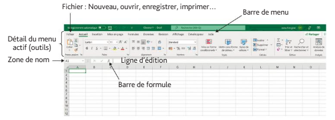
Mise en pratique
Cas pratique 1 : Murnoir
Compétence attendue
Automatiser des calculs en écrivant des formules.
- Fabien Murnoir, garagiste indépendant, souhaite déterminer ses consommations mensuelles par catégorie, en quantité et en valeur, grâce à la feuille de calcul suivante :
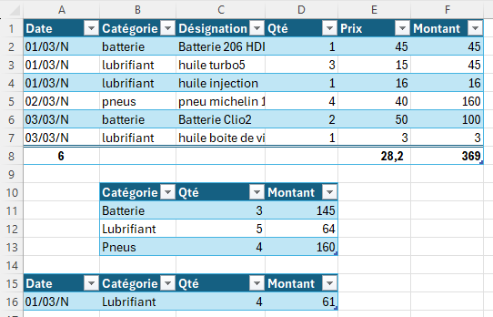
- Reconstituez les formules implantées en F2, E8 (prixmoyen), F8 (Total), B11, C11, C16 et D16, en prévoyant les recopies éventuelles ;
- Proposez une autre formule permettant de retrouver directement le total affiché en F8 sans utiliser les résultats de la plage F2:F7.
2.4.2 Les formules de calcul
Introduction
- Tout traitement contenu dans la feuille de calcul nécessite de sélectionner la ou les cellules concernées puis de choisir l’action à effectuer ;
- Une cellule est repérée par ses coordonnées (ligne et colonne). Une plage de cellules est délimitée par les coordonnées de ses cellules extrêmes.
Exemple
« Cellule
B5, plageC2:D10» correspond aux cellules C2, C3,… C10, D2, D3,…, D10.
Les formules de calcul
- L’expression de la formule de calcul placée dans une cellule commence toujours par le signe « = » ;
- Elle fait généralement appel à des opérateurs arithmétiques (« + », « – », « * » pour la multiplication, « / » pour la division, « ^ » pour l’élévation à une puissance) ;
- Les formules de calcul peuvent faire référence à d’autres cellules de la feuille (sauf quand elles servent à initialiser une valeur, par exemple en y recopiant le contenu d’une autre cellule) ;
- Elles peuvent intégrer des fonctions qui, elles-mêmes, comprennent du texte et des symboles spéciaux ou de comparaison (« = », « < » « > » et « <> » pour différent).
Exemple
- «
=A2*5», effectue la multiplication de la valeur de la celluleA2par 5- «
=C8» correspond à la reprise de la valeur placée en «C8»- «
=SOMME (C10:C12)» fait référence à une fonction qui calculeC10+C11+C12(la somme des valeurs des cellules comprises entreC10etC12, donc dans la plage «C10:C12»).
- La formule saisie dans une cellule est affichée dans la ligne d’édition en haut de l’écran, mais elle n’apparaît pas a priori dans la cellule où elle est placée, qui affiche directement le résultat du calcul ;
- Toute évolution du contenu d’une cellule entraîne la modification automatique du résultat des calculs qui y font référence.
Les modes de référence aux cellules
Les références absolues, relatives ou mixtes
- Le contenu d’une cellule peut être recopié dans une ou plusieurs d’entre elles, notamment par les commandes « Copier-Coller » :
- Les textes et les valeurs sont copiés sans modification ;
- En revanche, lors de la copie d’une formule, les références à des cellules contenues dans cette dernière sont adaptées en fonction du décalage entre la cellule d’origine et la ou les cellules de destination (translation de références).
Exemple
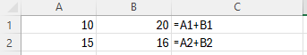
- La formule en
C1fait référence de façon relative àA1etB1;- Elle est copiée à partir de
C1et collée enC2;- Elle s’adapte par translation et
C2fera donc référence àA2etB2.
- Pour éviter toute modification des formules, il faut faire précéder l’indice de ligne et/ou de colonne des cellules concernées par le symbole de référence absolue «
$» ;- Dans le cas précédent, une formule
= A$1+B$2saisie enC1resterait= A$1+B$2enC2; - Ci-après, nous détaillons les évolutions d’une formule copiée de
A1versC3: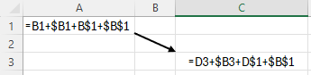
- Dans le cas précédent, une formule
| A1 = | ⇒ | C3 = | Type de référence |
|---|---|---|---|
| B1 | ⇒ | D3 | Relative, ligne et colonne se décalent |
| $B1 | ⇒ | $B3 | Colonne absolue, ligne relative, seule la ligne se décale |
| B$1 | ⇒ | D$1 | Colonne relative, ligne absolue, seule la colonne se décale |
| $B$1 | ⇒ | $B$1 | Colonne absolue, ligne absolue, aucun changement |
- La feuille ci-après analyse les ventes d’une crêperie à partir d’un tarif de base :
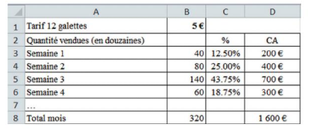
- Formule implantée en
C3:=B3/B$8, recopiée jusqu’enC6, soit enC4:=B4/B$8; - Formule implantée en
D3:=B3B$1, recopiée jusqu’enD6, soit enD4:=B4B$1. - Il est inutile d’utiliser une référence absolue pour la colonne puisque l’on recopie les formules en colonnes ; une référence mixte suffit comme
B$1.
La notion de « nom » d’une cellule ou d’une plage de cellules
- Une cellule ou une plage de cellules peut être nommée pour y faire référence sans craindre un décalage intempestif, tout en améliorant la lisibilité des formules concernées ;
- Le recours à des noms permet également de retrouver plus facilement les erreurs ;
- Pour créer un nom, il est possible d’utiliser le gestionnaire de noms du menu « Formules » ou de l’implanter directement dans la zone à gauche de la zone « Fonction ».
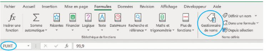
- La définition d’une zone nommée attribue le caractère absolu à toutes les références de la zone ;
- Ce nom est alors utilisable à la place de la référence à la cellule ou à la plage de cellules.
Exemple
- Dans la feuille qui précède, les sommes des cellules
B8etD8peuvent s’écrire : «=SOMME(B3:B6)» et «=SOMME(D3:D6)». La formule enD8peut être obtenue par copie deB8, car il y a translation ;- Si la plage
B3:B6était nommée VENTES, la formule enB8pourrait s’écrire : «=SOMME(VENTES)». Dans ce cas, elle ne pourrait plus être recopiée enD8.- On peut également nommer une valeur, quand on veut y faire référence, sans l’implanter dans les formules de calcul, ce qui est particulièrement utile pour des paramètres comme le taux de TVA.
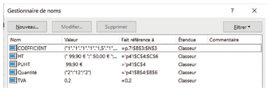
Astuce
Vous devez utiliser des références absolues, relatives ou mixtes ou avoir recours à des noms de façon performante et cohérente, tout en anticipant les recopies éventuelles.
2.4.3 Les fonctions de base
Les principes généraux
- Des fonctions prédéfinies sont disponibles dans le tableur pour effectuer des traitements standardisés, des calculs statistiques ou autres opérations mathématiques ;
- La forme générale d’une fonction est :
=Nom_fonction(argument1;argument2;…) - Le nombre d’arguments dépend de la fonction et certains peuvent être optionnels ;
- L’argument peut être une référence à une cellule ou à une plage de cellules, à une valeur ou à une autre fonction ou expression.
Exemple
- La fonction
SOMMEévite de devoir exprimer les additions en détail- De la même façon, la fonction «
=MOYENNE(A1:A10)» calcule la moyenne des cellulesA1,A2,…,A10- «
=AUJOURDHUI()» est une fonction sans argument, qui fournit la date du jour
Les fonctions les plus courantes
- Sont ici présentées les fonctions du tableur les plus fréquemment utilisées pour construire des feuilles de calcul en gestion ;
- Bien d’autres sont accessibles et documentées dans l’aide du tableur concerné.
| Fonction | Exemple | Description |
|---|---|---|
| SOMME | =SOMME(B10:B15) | Effectue la somme des valeurs numériques de la plage citée (les cellules vides ou contenant du texte sont ignorées). |
| MOYENNE | =MOYENNE(B10:C12) | Effectue la moyenne des valeurs numériques de la plage citée (les cellules vides ou contenant du texte sont ignorées). |
| MIN | =MIN(B10:B15) | Affiche la valeur minimale de la plage citée. |
| MAX | =MAX(B10:B15) | Affiche la valeur maximale de la plage citée. |
| NB | =NB(B10:B15) | Détermine le nombre de cellules de la plage citée contenant des nombres. |
| NBVAL | =NBVAL(B10:B15) | Dénombre les cellules d’une plage contiennent une valeur, NB.VIDE, celles qui sont vides. |
| ARRONDI | =ARRONDI(B6;3) =ARRONDI(MOYENNE(B10:C12);1) | - Arrondit la valeur de la cellule B6 à trois chiffres après la virgule ; - Arrondit à une décimale la moyenne calculée. |
| ARRONDI.SUP, ARRONDI.INF, | =ARRONDI.SUP(B6;3) =ARRONDI.INF(B6;3) | Arrondissent à la valeur supérieure ou inférieure. |
| SOMMEPROD | =SOMMEPROD(A1:A3; B1:B3) | Calcule “A1*B1+A2*B2+A3*B3” |
- Les fonctions de calcul (
SOMME,MOYENNE…) sont d’un usage plus souple que les formules explicites car elles ignorent les cellules qui ne contiennent pas de valeur numérique.
Astuce
N’oubliez pas que vous avez la possibilité de combiner plusieurs fonctions !
Les fonctions logiques
Fonction « SI »
- La fonction «
SI» est la fonction la plus utilisée dans les feuilles de calcul ; - Elle permet de réaliser une alternative et s’écrit ainsi :
= SI (expression de condition ; action ou valeur si VRAI ; action ou valeur si FAUX) - Les conditions et actions peuvent porter sur des valeurs, des références de cellules, des textes (un texte est pris dans une cellule ou mentionné entre guillemets).
Exemple
=SI(A10>300;A10*B1;A10*B2)=SI(C35=G32;D5*F8;« Calcul impossible »)Dans ce cas, le texte « Calcul impossible » apparaît dans la cellule qui contient le «SI» quand la valeur enC35diffère de celle qui est enG32.
- Plusieurs fonctions «
SI» peuvent être imbriquées pour tenir compte de combinaisons complexes de conditions.
Exemple
- Les commissions versées aux commerciaux de l’entreprise LOCATOUT sont proportionnelles au chiffre d’affaires. Ce calcul se traduit par le tableau suivant :  - Les commissions de la plage `C6:C8` sont déterminées selon l’algorithme suivant : ```visual basicSI CA <= 15 000 ALORS Tx <= 0,02 SINON SI CA <= 30 000 ALORS Tx <= 0,04 SINON Tx <= 0,055 FINSI FINSI ``` - La formule à implanter en
C6est : «=SI(B6<=$F$2;$G$2;SI(B6<= $F$3;$G$3;$G$4))» ; - Elle est ensuite recopiée versC8; - Les données nécessaires aux calculs sont placées dans les zones de donnéesB2:B4etF2:G4; - Un changement de ces données n’implique donc pas de modifier la formule.
- La fonction
ESTVIDEest fréquemment associée à une alternative « fonction SI » pour effectuer un calcul à condition qu’une donnée existe dans une cellule, ce qui évite des messages d’erreur :
| Fonction | Exemple | Description |
|---|---|---|
| ESTVIDE | =ESTVIDE(B6) | Renvoie VRAI si la cellule B6 est vide et FAUX dans le cas contraire (cette fonction permet notamment d’effectuer un calcul à la condition qu’une donnée existe dans une cellule, ce qui évite des messages d’erreur). |
Exemple
«
=ESTVIDE(B6)» renvoie «VRAI» si la celluleB6est vide et «FAUX» dans le cas contraire.
A savoir
Soyez attentif à la logique de construction des formules imbriquant des fonctions «
SI», «OU», «ET». Elles sont placées dans le premier argument de la fonction «SI» (expression de condition) et non dans les deux arguments suivants (action ou valeur si VRAI ; action ou valeur si FAUX).
Fonction « ET » et « OU »
- Les fonctions logiques «
ET» et «OU» sont souvent utilisées pour exprimer des conditions complexes dans un «SI» ; - Leur forme générale est la suivante :
ET(Condition1 ; Condition2 ;… ConditionN)OU(Condition1 ; Condition2 ;… ; ConditionN)
- Elles permettent de combiner plusieurs conditions et renvoient une valeur « VRAI » ou « FAUX » selon que la combinaison est satisfaite ou non.
Exemple
=SI(OU(B30=« Payé »;H56<10) ; « Ne rien faire » ; « Relance »)Cette formule affiche « Ne rien faire » si la celluleB30contient la valeur « Payé » ou si la celluleH56contient une valeur inférieure à 10. À défaut, elle affiche le texte « Relance ». Dans le relevé de notes pris en exemple dans le point 3 ci-après, l’admissibilité à l’examen peut être affichée par la formule : «=SI(OU(O4<10;ESTNUM(P4));""; “admis(e)”)».
Autres fonctions logiques
- D’autres fonctions logiques permettent d’effectuer des calculs sous condition :
SOMME.SI:- Effectue la somme des cellules d’une plage répondant à une certaine condition ;
=SOMME.SI(C4:C8;"<15 "): effectue la somme des valeurs inférieures à 15 de la plageC4:C8(la condition est obligatoirement placée entre guillemets) ;=SOMME.SI(C4:C8;20;D4:D8): dans la plageD4:D8on n’additionnera que les valeurs pour lesquelles les cellules correspondantes de la plageC4:C8contiendront la valeur 20.
- On dispose de même des fonctions MOYENNE.SI, NB.SI… :
- Effectue la somme des cellules d’une plage en appliquant plusieurs conditions simultanément ;
SOMME.SI.ENS:=SOMME.SI.ENS (C2:C8;A2:A8;»>10 «;A2:A8;»<15 «);- Dans la plage
C2:C8on n’additionnera que les valeurs pour lesquelles les cellules correspondantes de la plageA2:A8contiennent des valeurs supérieures à 10 et inférieures à 15 ;
MOYENNE.SI.ENS:=MOYENNE.SI.ENS (C2:C8;A2:A8;»>10 «;A2:A8;»<15 «;B2:B8;»France» );- Dans la plage
C2:C8on ne fera la moyenne que des valeurs pour lesquelles les cellules correspondantes de la plageA2:A8contiennent des valeurs supérieures à 10 et inférieures à 15 et pour lesquelles les cellules correspondantes de la plageB2:B8contiennent la valeur « France » ;
NB.SI.ENS:=NB.SI.ENS(A2:A8;»>10 «;A2:A8;»<15 «;D2:D8 ;«nouveau client»):- Dans la plage
A2:A8on ne dénombrera que les valeurs pour lesquelles les cellules de la plageA2:A8contiennent des valeurs supérieures à 10 et inférieures à 15 et pour lesquelles les cellules correspondantes de la plageD2:D8contiennent la valeur « nouveau client » ; - Attention : il y a un argument de moins dans cette fonction.
- Les critères sont implicitement liés par des «
ET» et non des «OU» dans les fonctions à plusieurs critères.
A savoir
Soyez vigilant : la plage de calcul figure en première position dans les fonctions comprenant plusieurs critères et en dernière position dans les autres.
Exemple
- Un étudiant est admis au DCG s’il obtient une moyenne supérieure ou égale à 10, après application de coefficients et s’il n’a obtenu aucune note inférieure à 6 ;
- Les statistiques d’un lycée sont retranscrites dans le tableau Excel suivant :
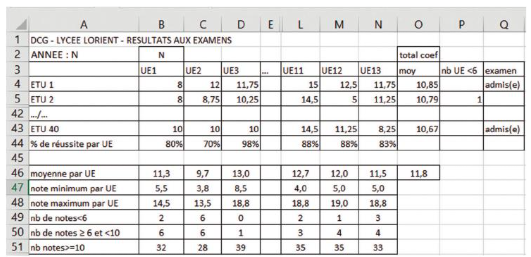
- On relève notamment les formules suivantes :
Adresse Formule de calcul O3 =SOMME(COEFFICIENT)O4 =ARRONDI(MOYENNE(B4:N4);2)B44 =ARRONDI(B51/NB(B4:B43);2)B46 =ARRONDI(MOYENNE(B4:B43);1)B47 =ARRONDI(MIN(B4:B43);1)B49 =ARRONDI(MAX(B4:B43);1)B49 =NB.SI(B4:B43;"<6 ")B50 =NB.SI.ENS(B4:B43;">= 6 ";B4:B43;"<10 ")
Les fonctions portant sur les dates
- Toute date est mémorisée par Excel, grâce au nombre de jours écoulés depuis le 01/01/1900 ;
- Une différence de dates fournit donc un nombre de jours. La fonction
=DATE(année;mois;jour)renvoie le nombre de jours définissant la date placée en argument de la fonction.
Exemple
La fonction
=DATE(2023;1;27)renvoie la valeur 44993 au format nombre, soit le 27/01/2023 au format date.
- D’autres fonctions courantes portent sur les dates :
- La fonction «
ANNEE(date)» fournit l’année de la date désignée. Elle peut être contenue dans une plage ou placée en argument ; - De même, les fonctions «
MOIS», «JOUR» ou «HEURE» renvoient respectivement le mois, le jour ou l’heure d’une date ; - La fonction «
AUJOURDHUI()» renvoie la date du jour connue de l’ordinateur au format date ; - La fonction «
JOURS360» permet de calculer le nombre de jours entre deux dates sur la base d’une année de 360 jours (elle est très utile en comptabilité pour calculer un prorata temporis).
- La fonction «
Exemple
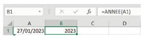
- A1 affiche « 12/11/2023 »,
=ANNEE(A1)renvoie la valeur 2023.
A B C Formule 1 15/01/2023 31/03/2023 76 C1:=JOURS360(A1;B1)
Mise en pratique
Cas pratique 2 : Hoël
L’entreprise Hoël vend des meubles de jardin. Elle utilise Excel pour réaliser sa facturation comme en témoigne cette facture simplifiée destinée aux clients non professionnels :
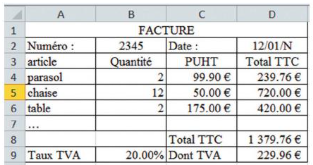
- Reconstituez les formules des cellules calculées (****
D4àD9****) en indiquant les copies éventuelles. Le taux de TVA est un paramètre qui peut évoluer. Le résultat des formules est arrondi à deux décimales.- Quelle formule permettrait d’obtenir directement le total HT ?
Cas pratique 3 : Volcans du monde
Le centre culturel Volcans du monde, situé à Clermont-Ferrand, organise des activités au sein de ses locaux tout au long de la semaine. Afin de préparer un récapitulatif des activités et des heures d’intervention, la feuille de calcul suivante a été réalisée :
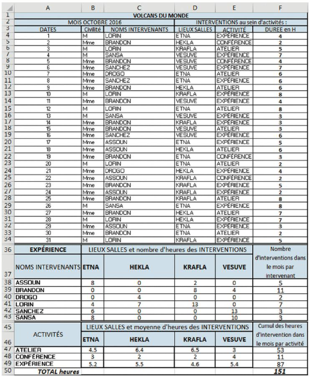
Déterminez les formules des cellules calculées en :
B38(cumul des heures d’intervention par salle et intervenant pour l’activité « EXPÉRIENCE ») ;F38;B47(moyenne des heures d’intervention par salle et activité, arrondie à la décimale supérieure) ;F47etF50****.
Cas pratique 4 : Cercle polaire
La société Cercle polaire commercialise des matériels d’expédition en milieu froid (haute montagne, antarctique, etc.). Différentes catégories de clients s’adressent à la société (laboratoires de recherche, administrations publiques, explorateurs privés). Les clients sont présents en France et à l’international. Un suivi de gestion est établi grâce à une application tableur dont un extrait figure dans le document. En vous appuyant sur vos connaissances et sur le document, répondez aux questions ci-après.
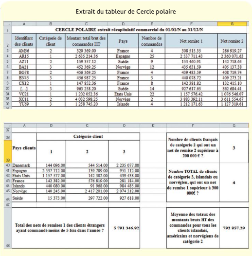
Missions
- Donnez les formules des cellules B40 à D46 permettant de calculer la moyenne des montants nets de remise 1 par catégorie et par pays. Cette formule doit pouvoir être recopiée de la formule en B40 vers l’ensemble de la plage (utilisez les références absolues, mixtes et relatives de façon pertinente).
- Prévoyez un résultat arrondi à l’entier supérieur.
- Trouvez la formule qui, en D48, permet de calculer le total des nets de remise 1 relatifs aux clients étrangers ayant commandé moins de 5 fois au cours de l’année de référence.
- Trouvez la formule installée en G39 permettant de connaître le nombre de clients français de catégorie 2 avec un net de remise 2 strictement supérieur à 200 000 €.
- Identifiez la formule installée en G46 permettant de dénombrer tous les clients islandais, américains et norvégiens de catégorie 3 avec un net de remise 1 supérieur à 300 000 €.
- Expliquez comment déterminer la moyenne des montants bruts HT pour l’ensemble des clients islandais, américains et norvégiens de catégorie 2, telle qu’elle est présentée dans la cellule G48.
Synthèse
Généralités
- Le tableur gère des feuilles de calcul, éventuellement regroupées dans des classeurs, composées de cellules qui peuvent comprendre du texte, des images, des valeurs numériques ou des formules de calcul ;
- Les formules de calcul portent sur les cellules repérées par leurs coordonnées, elles commencent toujours par le signe égal, utilisent des opérateurs et intègrent souvent des fonctions ;
- Ces formules peuvent faire référence aux cellules de façon absolue, relative ou mixte, les cellules ou les plages de cellules pouvant également être nommées. Fonctions courantes
- Les fonctions ont un nom, s’écrivent en majuscules et comprennent un nombre variable d’arguments, les plus courantes sont les suivantes :
SOMMEMOYENNEMINMAXNB, NBVALESTVIDEARRONDIARRONDI.SUPARRONDI.INFSOMMEPRODFonctions logiques courantes
- Les fonctions «
SI» offrent une alternative comme suit :SI(expression de condition ; action ou valeur si VRAI ; action ou valeur si FAUX) ;- La fonction «
ESTVIDE» est fréquemment associée à la fonction «SI» pour éviter des messages d’erreur ; - La fonction «
SI» peut porter sur plusieurs conditions combinées associées par le recours aux fonctions «ET» et «OU».
2.5 Le tableur : recherches, contrôles et ergonomie des feuilles
Programme
Pédagogie
Compétences attendues
- Automatiser des calculs en écrivant des formules
- Concevoir et modifier la structure d’un modèle de feuille de calcul
- Contrôler l’adéquation entre le contexte d’un problème de gestion et le modèle créé
- Mettre en place l’ergonomie d’une feuille de calcul
Savoirs associés
- Découverte du tableur : le classeur, la feuille de calcul, la cellule et les types de données
- Éléments d’ergonomie (formatage des cellules, gestion de l’affichage, validation des données, formatage conditionnel et gestion des erreurs)
Plan
- Cours 2.5.1 Fonctions de recherche 2.5.2 Fonctions financières et statistiques 2.5.3 Ergonomie d’une feuille de calcul
- Synthèse
Mots clés
Argument-valeur • Concaténation • Ergonomie • Fonction • Format • Imbrication • Information • Recherche • Recherche imbriquée • Table • Valeur proche
Comment rechercher des données de façon automatique dans une application tableur ? Comment développer des applications sur tableur de façon efficace et ergonomique ? Comment contrôler ces modèles et applications ? Le tableur Excel est pris ici comme exemple.
Cours
2.5.1 Fonctions de recherche
Introduction
- Les fonctions de recherche permettent de trouver la valeur d’une liste associée à une autre valeur placée dans une autre liste.
Exemple
Une catégorie (codée A, B ou C) est affectée à chaque client. À chacune des catégories de la liste A – B – C correspond un taux de remise (dans l’ordre 0, 2 ou 4 %). À partir du code de catégorie d’un client, la recherche dans la liste des codes permet de trouver le taux de remise à appliquer.
- Les listes forment une table implantée au préalable dans la feuille de calcul active ou dans une autre feuille de calcul ;
- Les fonctions de recherche nécessitent, en général, que la première liste dans laquelle on cherche une valeur pour lui trouver une correspondance soit triée.
Fonction RECHERCHE (forme générale)
Principe
- La forme générale de la fonction
RECHERCHEest :=RECHERCHE(valeur à chercher;colonne ou ligne de recherche;colonne ou ligne de résultats);- La fonction
RECHERCHErecherche une valeur dans une colonne (ou une ligne) d’un tableau et renvoie une valeur située à la même position dans la colonne (ou la ligne) qui contient les résultats.
Exemple
Dans le tableau qui suit, le taux de remise du client « Optica » placé en
C8peut être déterminé directement, en fonction de la catégorie placée enC6, par la formule=RECHERCHE(C6;E3:E5;F3:F5).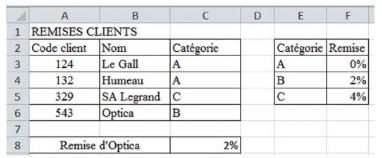
Si la table Catégories/Remises était placée dans la feuille de calcul externe nommée « CAT » ci-après, la formule de recherche précédente deviendrait :=RECHERCHE(C6;CAT!A2:A4;CAT!B2:B4).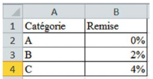
La feuille qui suit montre comment il est possible de calculer directement le montant de la remise en fonction du code du client placé enB10, à l’aide de recherches imbriquées.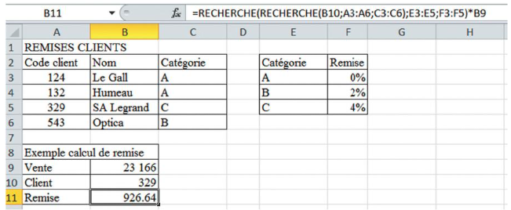
EnB11on trouve la formule :=RECHERCHE(RECHERCHE(B10;A3:A6;C3:C6);E3:E5;F3:F5)*B9.
Listes disjointes
- La fonction
RECHERCHEpermet, si nécessaire, d’exploiter des données de listes ayant des directions différentes, horizontales ou verticales ; - Il est également possible d’effectuer des recherches par tranches puisque le tableur retient, par défaut, la catégorie correspondant au minimum de la tranche.
Fonctions RECHERCHEV et RECHERCHEH
Principe
- La fonction
RECHERCHEVjoue le même rôle que la fonctionRECHERCHE, mais elle effectue une recherche verticale, par colonnes ; - De même, la fonction
RECHERCHEHrecherche horizontalement, par lignes. - Les fonctions
RECHERCHEVetRECHERCHEH, quand elles peuvent être mobilisées, permettent une expression plus rapide et plus lisible des formules, c’est pourquoi elles sont, le plus souvent, préférées à la forme générale.
Fonction RECHERCHEV
- La fonction
RECHERCHEVconsiste à rechercher verticalement une valeur spécifiée dans la première colonne d’une table et affiche la valeur correspondante dans une autre colonne indiquée et ce de façon exacte ou approchée. - Sa forme générale est la suivante :
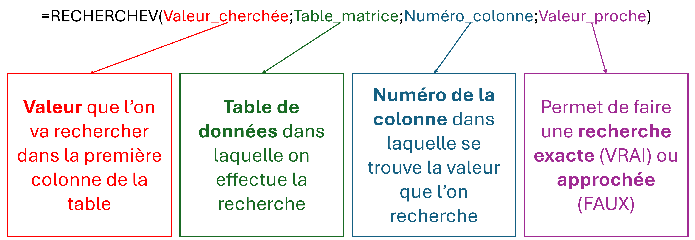
- Le quatrième argument est «
Valeur_proche(VRAI/FAUX)» ;
| VRAI | - Recherche la valeur précisée ou, à défaut, la première valeur immédiatement inférieure à la valeur cherchée, ce qui permet des recherches par tranches très utiles en gestion. - L’utiliser pour rechercher une valeur exacte implique que la première colonne soit triée par ordre croissant. |
|---|---|
| FAUX | Une recherche exacte est effectuée. Si la valeur n’est pas trouvée (colonne non triée ou valeur absente de la première colonne), la fonction renvoie le message d’erreur « #N/A ». |
Exemple
On désire afficher en
B2le nom d’un salarié que l’on recherche dans une table (D$2:$F$4) à partir de son matricule implanté enB1. Le nom se trouve dans la colonne numéro 2.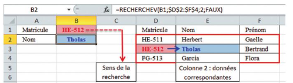
B2:=RECHERCHEV(B1;$D$2:$D$4;2;FAUX)
Premier argument Deuxième argument Troisième argument Quatrième argument B1 $D$2:$F$4 2 FAUX La valeur à chercher se trouve dans la cellule B1, soit HE-512. Table contenant les données. Index (rang) de la colonne où l’on trouve les valeurs de la donnée cherchée, ici la deuxième colonne. Il s’agit donc des noms. La recherche se fera de façon exacte ce qui est obligatoire ici car les matricules ne sont pas classés par ordre alphabétique.
Fonction RECHERCHEH
- Lorsque vous utilisez la fonction
RECHERCHEH, la mobilisation des arguments est identique à la fonctionRECHERCHEV; - Le troisième argument indique l’index de la ligne et non plus de la colonne à partir de laquelle la donnée correspondante est renvoyée.
Exemple
Le taux de ristourne de l’entreprise Gallo, client de l’entreprise Igloo, est obtenu comme suit : Le quatrième argument doit être
VRAIou omis car il s’agit d’une recherche par tranches.
A savoir
Principes fondamentaux des fonctions de recherche ;
- Veillez à ce que le premier argument recherché soit bien situé dans la première ligne ou première colonne de la matrice indiquée au sein du deuxième argument ;
- Dans certains contextes, il est nécessaire d’omettre le quatrième argument ou de mettre VRAI : travaux sur des dates, des intervalles (âge, tranches d’imposition…) ;
- Dans d’autres contextes, il est indispensable d’utiliser le quatrième argument : tri non croissant de la matrice du deuxième argument ou vérification d’une saisie effectuée par ailleurs.
Fonctions INDEX et EQUIV
Fonction INDEX
- Quand la recherche ne consiste ni à rechercher en fonction de l’index de la première colonne, ni en fonction de celui de la première ligne mais à l’intersection d’une ligne et d’une colonne, la fonction
INDEXdoit être mobilisée ; - Elle sélectionne une valeur dans un tableau à partir des index de numéros de ligne et de colonne, qui peuvent être paramétrés à l’aide des fonctions
EQUIVouRECHERCHE; - La forme générale de la fonction
INDEXest la suivante :
Exemple
Le prix de l’article Jupe chez Galopin peut être recherché par une fonction
INDEX:
Premier argument Deuxième argument Troisième argument $E$3:$F$52 1 Table contenant les données Numéro de la ligne de la table où on trouve les valeurs de la donnée cherchée, ici 2 Numéro de la colonne de la table où on trouve les valeurs de la donnée cherchée, ici 1
Fonction EQUIV
- La fonction
EQUIVpermet d’automatiser la détermination de la ligne ou de la colonne (deuxième et troisième arguments) de la fonctionINDEX.EQUIVrecherche une valeur spécifique dans une plage de cellules, puis renvoie sa position relative (numéro de ligne ou de colonne) dans la plage ; - La forme générale de la fonction EQUIV est la suivante :
Exemple
La recherche du prix de la jupe de Galopin devient :
Premier argument Deuxième argument Troisième argument $E$3:$F$5EQUIV(B1;$D$3:$D$5;1)EQUIV(A2;$E$2:$F$2;1)Table contenant les données (les listes étant triées, le troisième argument des fonctions EQUIV peut être soit omis, soit égal à 1). Automatise la détermination de la ligne. Automatise la détermination de la colonne.
Imbrication des fonctions
- Les fonctions
RECHERCHEVouRECHERCHEH,INDEXetEQUIVpeuvent s’imbriquer et se compléter ; - Une imbrication de
RECHERCHEVest construite comme suit : - Le résultat de la fonction
RECHERCHEVla plus interne devient le premier argument de la fonctionRECHERCHEVexterne. Celle-ci détermine donc une valeur de ce premier argument ; - La fonction
RECHERCHEVexterne effectue alors une seconde recherche dans une autre table à partir de la valeur trouvée par la recherche interne ; - On peut également imbriquer plusieurs fonctions
RECHERCHEVmais aussi desRECHERCHE,RECHERCHEH,EQUIV,INDEX…
Exemple
Détermination de la rémunération horaire en euros dans une feuille « Intervention » : La recherche est effectuée à partir des tables PERS et QUALIF. Le numéro du personnel permet de chercher le code de la qualification afin de trouver la rémunération horaire :
=RECHERCHEV(RECHERCHEV(A3;PERS;4;FAUX);QUALIF;3;FAUX)La recherche interne donne le code de la qualification (Code Qualif) du personnel dont le numéro est PERS1 (implanté enA3), soit AC. La recherche externe détermine alors, à partir de ce code, la rémunération correspondante.
A savoir
Vous pouvez paramétrer les index de colonne à l’aide d’une fonction
EQUIV.
Mise en pratique
Cas pratique 1 : Tytrouvetout
L’entreprise Tytrouvetout, épicerie-bazar située en zone rurale, détermine le montant de sa facturation journalière TTC ainsi que celui de la TVA à l’aide des feuilles de calcul suivantes, où les montants TTC sont arrondis à deux décimales : Feuille “FACTURATION” Les données suivantes constituent des tables de référence sous Excel : FEUILLE « PRODUITS » (PLAGE $A$2 :$D$200 NOMMÉE PRODUITS) FEUILLE « TAUX » (PLAGE $B$1:$C$2 NOMMÉE TAUX)
- Reconstituez les formules des cellules calculées en B3, D3, E3 et F3, sachant que les fonctions de recherche peuvent être imbriquées.
- Identifiez les formules implantées en F40 et F41 permettent d’obtenir respectivement le montant total TTC et celui de la TVA.
- Expliquez comment faire pour que la feuille Facturation comporte un nombre variable de lignes Produits sans afficher de messages d’erreur.
Cas pratique 2 : Igloo
Compétences attendues
- Automatiser des calculs en écrivant des formules
- Mettre en place l’ergonomie d’une feuille de calcul
La société Igloo produit un modèle unique de tente de camping pour des destinations polaires et de haute montagne. Plusieurs niveaux de qualité sont proposés pour ce modèle en fonction des conditions extrêmes d’utilisation. Différentes capacités (nombre de places) sont également disponibles. En fonction de ces deux critères, un tarif est déterminé. La société Igloo octroie un pourcentage de réduction selon les quantités commandées d’un même modèle. Une application tableur a été mise en place afin de préparer le devis à proposer aux clients. À Cette fin, deux feuilles ont été créées, « Devis » et « Données ». FEUILLE « DEVIS » FEUILLE « DONNÉES » (plage B4:G11 nommée TARIFS) (plage B15:C18 nommée REDUCTIONS)
Identifiez la formule en D7 permettant d’afficher automatiquement le prix en fonction du niveau de qualité choisi et de la capacité du modèle Iceland. Prévoyez un affichage « professionnel » pour les lignes non utilisées dans ce devis n° ID4429.
Trouvez la formule permettant de calculer le montant HT net de réduction à partir des pourcentages octroyés selon la quantité souhaitée par le client.
Identifiez les formules installées en G18 et G20. Prévoyez un arrondi inférieur pour ces montants, à deux décimales.
Astuce
Les formules demandées sont incluses dans la feuille « Devis ».
2.5.2 Fonctions financières et statistiques
Fonctions financières
- Parmi les fonctions financières les plus courantes, retenons notamment :
VA, qui calcule la valeur actuelle ;TAUX, qui calcule le taux d’intérêt ;NPM, qui calcule le nombre de périodes ;VPM, qui calcule le remboursement périodique d’un prêt.
Exemple
Trois des quatre valeurs en
B1,B2,B3ouB4doivent être connues. Nous précisions, à chaque fois, la formule à utiliser pour déterminer la quatrième valeur.
B1=VA(B2/12;B3;B4;0)B2=TAUX(B3;B4;B1;0)*12(taux proportionnel)B3=NPM(B2/12;B4;B1)B4=VPM(B2/12;B3;B1;0;0)
- A partir du fichier
CP_2.5_Fonctions financières_Base.xlsx
*, *construisez la même structure que dans le fichier
CP_2.5_Fonctions financières_Objectif.pdf
.
- Attention, chaque fonction est indépendante des autres.
javascript =VC() =VA() =VPM() taux = taux d'intérêt mensuel npm = nombre de remboursements ou versements vpm = montant du paiement par période et reste constant va = valeur actuelle vc = valeur capitalisée type = quand les paiements doivent être effectués
Astuce
VC = valeur calculée ou future Soit le montant total, capital et intérêts : encaissé en fin de contrat dans le cadre d’un placement ou déboursé dans le cas d’un remboursement de prêt
VA = Valeur actuelle C’est le montant du capital placé ou du prêt contracté
VPM = montant constant versé à chaque période Montant d’un versement mensuel pour une épargne à versements réguliers ou Montant d’une mensualité de remboursement d’un prêt
- Les fonctions
VAN(valeur actuelle nette) etTRI(taux de rentabilité interne) permettent d’évaluer les investissements à partir d’une succession de flux de trésorerie.
Exemple
VAN(taux;valeur1; valeur2;…)TRI(valeur1;valeur2;…)
Définition
VAN : Dans le cadre d’un projet d’investissement, la valeur actuelle nette (VAN) correspond à la somme des flux de trésorerie futurs actualisés au taux reflétant le niveau de risque du projet minorée des coûts d’investissements initiaux engagés. Ce taux d’actualisation traduit donc le risque du projet en termes de coût et de temps. TRI : Le temps de retour sur investissement (TRI) est un indicateur financier qui permet de mesurer le temps nécessaire pour récupérer le montant investi dans un projet. Il faut pour cela analyser les flux de trésorerie générés par le projet en question.
Fonctions statistiques
- Les fonctions dites « statistiques » sont nombreuses :
| Fonction | Exemple et résultat |
|---|---|
ECARTYPE | =ECARTYPE(C5:C28) Affiche l’écart type des valeurs de la plage C5:C28 |
PENTE | =PENTE(A2:F2;A1:F1) Donne la pente (a) d’une droite d’ajustement d’équation y = ax + b A2:F2 ⇒ Valeurs y et A1:F1 ⇒ Valeurs x |
TENDANCE | =TENDANCE(A2:F2;A1:F1;G1) Effectue une extrapolation linéaire et donne la valeur de y devant correspondre à la valeur de x contenue dans G1 |
COEFFICIENTCORRELATION | Donne le coefficient de corrélation de deux séries de valeurs |
ORDONNEE.ORIGINE | Donne l’ordonnée d’origine (b) de la droite y = ax + b |
DROITEREG (utilisée de façon matricielle) | Donne la pente et l’ordonnée d’origine d’une droite d’ajustement |
2.5.3 Ergonomie d’une feuille de calcul
Fonctions d’informations et de gestion des erreurs
Fonctions d’information « EST »
- Les fonctions
ESTsont utiles pour tester le contenu de cellules ; - Elles ne contiennent qu’un seul argument, obligatoire, qui est une valeur à tester ;
- L’argument-valeur peut être :
- Une valeur vide, c’est-à-dire une cellule qui ne contient aucune donnée ou formule et non qui n’affiche rien ;
- Une erreur renvoyée par le tableur ;
- Une valeur logique, de texte, de nombre ou une valeur de référence ou un nom s’y référant.
- Quand la fonction
ESTn’est pas associée à une autre fonction elle renvoie « VRAI » ou « FAUX » ; - Les fonctions d’information les plus courantes sont au nombre de sept :
| ESTVIDE | Renvoie VRAI si l’argument valeur est vide. |
|---|---|
| ESTERREUR | Renvoie VRAI si l’argument valeur fait référence à une valeur d’erreur. |
| ESTLOGIQUE | Renvoie VRAI si l’argument valeur fait référence à une valeur logique. |
| ESTNA | Renvoie VRAI si l’argument valeur fait référence à la valeur d’erreur n/a. |
| ESTNUM | Renvoie VRAI si l’argument valeur représente un nombre. |
| ESTREF | Renvoie VRAI si l’argument valeur est une référence. |
| ESTTEXTE | Renvoie VRAI si l’argument valeur se présente sous forme de texte. |
- D’autres fonctions d’information sont accessibles et documentées dans l’aide du tableur.
Exemple
L’amicale laïque utilise un tableur pour gérer ses salles de réunion.
=ESTNUM(B2), implanté enC2, affiche VRAI siC2contient une valeur numérique ; FAUX, dans le cas contraire.B2contient du texte (inconnu) donc la fonction renvoie FAUX. À l’inverse,=ESTTEXTE(B2), renvoie VRAI si le contenu est du texte et donc inconnu, et FAUX dans le cas contraire.
- Les fonctions
ESTsont fréquemment associées à une alternative « fonction SI » pour renvoyer un message pertinent à l’utilisateur du tableur en cas d’erreur, d’absence de saisie et/ou pour effectuer un calcul sous condition.
Exemple
Le modèle suivant a été implanté dans le tableur pour automatiser la création des factures de l’entreprise Rouillard. Ce modèle fait notamment référence à une table produit, les informations étant récupérées par des formules utilisant la fonction
RECHERCHEV. De nombreuses erreurs apparaissent. Pour pallier le caractère peu professionnel du document, il est nécessaire de recourir aux fonctions d’information : Les formules qui permettent de gérer les erreurs ou absences de saisies sont les suivantes :
- B4:
=SI(ESTVIDE(A4);"";SI(ESTNA(RECHERCHEV(A4;PRODUITS;2;FAUX));"Référence erronée";RECHERCHEV(A4;PRODUITS;2;FAUX)))- D4:
=SI(ESTVIDE(A4);"";SI(ESTNA(RECHERCHEV(A4;PRODUITS;3;FAUX));"Référence erronée";RECHERCHEV(A4;PRODUITS;3;FAUX)))- E4:
=SI(ESTNUM(C4D4);C4D4;"")
Fonction SIERREUR
- La fonction
SIERREURpermet également de mettre en évidence les erreurs de calcul ; - C’est une fonction logique, sa portée est plus générale et son usage plus simple que les fonctions d’information portant sur des erreurs car elle permet de traiter toutes les erreurs renvoyées par le tableur.
- Sa syntaxe est la suivante :
=SIERREUR(Valeur_testée;Valeur_si_erreur) - La valeur testée peut être une formule, une référence, une donnée ; elle est renvoyée s’il n’y a pas d’erreur. L’argument « valeur_si_erreur » peut prendre la forme d’un message affiché alertant l’utilisateur sur le type d’erreur.
Exemple
La formule implantée en
B3dans le cas de l’entreprise Rouillard devient :=SI(ESTVIDE(A4);"";SIERREUR(RECHERCHEV(A4;PRODUITS;2;FAUX);"Référence erronée"))
Fonction CONCAT
Définition
Une valeur est un texte entre guillemets ou une formule ou une référence à une cellule contenant une formule.
- La fonction
CONCAT(anciennementCONCATENER) est une fonction de texte qui permet de regrouper plusieurs valeurs en une seule (opération de concaténation) ; - Cette fonction permet de combiner, dans une seule chaîne de caractères, le résultat d’une formule et un texte explicatif ;
- Elle est donc utile en gestion ;
- Sa syntaxe est la suivante :
=CONCAT(Valeur1;Valeur2;…)
Exemple
La formule implantée, dans le cas Rouillard, en
A6permet de personnaliser par une phrase l’affichage du résultat des calculs pour le client dont le nom est enB1.
Formats de cellules
- Excel offre de nombreuses possibilités pour adapter le format des cellules aux documents de gestion à produire en fonction du contexte.
- Le menu « Accueil » regroupe l’essentiel des possibilités offertes :
- Polices de caractère (type, style, taille, couleurs, soulignement…) ;
- Alignement (orientation, positionnement, renvoi à la ligne, fusionner les cellules…) ;
- Nombre (standard, monétaire, comptabilité, date, personnalisé…) ;
- Bordure (affichage, remplissage, personnalisé…) ;
- Style (affichage conditionnel, tableaux prédéfinis, styles prédéfinis) ;
- Cellules (hauteur ligne, largeur colonne, couleur des onglets) ;
- Protection et tris.
A savoir
Pour garantir l’aspect professionnel de vos documents, il est important d’utiliser les formats prédéfinis dans le tableur. Ils assurent l’homogénéité et la cohérence d’une feuille de calcul à une autre. N’hésitez pas également à recourir à l’aide Excel en ligne.
Exemple
Voici les règles de formatage conditionnel des notes obtenues au DCG. Ces règles fournissent le résultat suivant : Excel offre également plusieurs possibilités regroupées dans le menu « Affichage ».
La mise en forme conditionnelle
Principe
La mise en forme conditionnelle facilite la mise en évidence de certaines valeurs ou l’identification de cellules particulières. Elle modifie l’apparence d’une plage de cellules en fonction d’une condition (ou d’un critère). Vous pouvez utiliser la mise en forme conditionnelle pour mettre en surbrillance des cellules qui contiennent des valeurs correspondant à une condition. Ou, vous pouvez mettre en forme l’ensemble d’une plage de cellules et faire varier la mise en forme en fonction de l’évolution des valeurs de chacune des cellules.
Méthode
- Sélectionnez la plage de cellules, le tableau ou l’ensemble de la feuille où vous voulez appliquer une mise en forme conditionnelle ;
- Dans l’onglet Accueil, cliquez sur Mise en forme conditionnelle ;
- Sélectionnez la règle que vous souhaitez appliquer.
Consignes
- A partir du support créé dans la partie précédente, insérez la règle de mise en forme conditionnelle suivante :
- Les cellules contenant la
référence client“C001” doivent apparaître en vert; - Les lignes dont la cellule
Quantité vendue“inférieure à 10” doivent apparaître en rouge.
- Les cellules contenant la
À savoir
**Astuce La mise en forme conditionnelle d’une ligne d’un tableau nécessite d’utiliser un type **de règle spécifique : *Utiliser une formule pour déterminer pour quelles cellules le format sera appliqué.
Une formule commence toujours par l’opérateur
=*Pensez à figer (”$”) la colonne de la 1ère cellule qu’ Excel utilisera pour tester le formatage conditionnel.
Validation des données
- Il est possible d’ajouter des règles de validation des données pour une cellule ou une plage de cellules ;
- Elles sont regroupées dans le menu « Données/Validation des données » ;
- Là encore, les possibilités sont nombreuses et bien expliquées par les outils d’aide intégrés au tableur ou par le support en ligne qui propose des exemples ;
- On peut spécifier le type de données saisies (décimales, liste de valeurs autorisées, dates, pour un intervalle de validation…) ;
- Un message personnalisé peut être associé à la saisie ;
- Des messages d’alerte peuvent également être sélectionnés.
Mise en pratique
Cas pratique 3 : Terre de feu
Compétences attendues
- Automatiser des calculs en écrivant des formules
- Mettre en place l’ergonomie d’une feuille de calcul
La société Terre de feu commercialise des vêtements ignifugés. Ses clients sont des particuliers et, surtout, des entreprises professionnelles, casernes de pompiers et vulcanologues. De nombreuses références sont disponibles, avec des niveaux de résistance à la chaleur variés. Les prix sont associés à ces caractéristiques. La société accorde des remises au vu de certains critères prédéfinis :
- Si le montant brut par référence commandée HT est supérieur à 10 000 euros et que la quantité totale commandée est supérieure à 50, un taux de remise de 5 % est appliqué sur la partie du montant brut HT au-delà de 10 000 euros ;
- Dans les autres cas, aucune remise n’est accordée. Une application a été mise en place sur tableur afin de préparer la facturation. Deux feuilles ont ainsi été établies, Facturation et Caractéristiques. FEUILLE « FACTURATION » FEUILLE « CARACTÉRISTIQUES » (PLAGE $C$4:$F$20, NOMMÉE PRIX)
Repérez la formule installée en D6. Prévoyez un contrôle de la saisie de la référence produit comportant des éléments incohérents et l’absence éventuelle de références. Proposez une solution recopiable vers le bas.
Repérez la formule implantée en F6 (à copier vers le bas). Veillez à bien distinguer la prise en compte des situations où la ligne de commande n’est pas renseignée et où les conditions d’application de la remise ne sont pas remplies. Veillez également à anticiper le fait que, si des messages personnalisés sont mobilisés concernant le prix unitaire et le montant brut, le calcul de la remise ne renvoie pas de message d’erreur. Tous les calculs ultérieurs de la feuille Facturation, doivent pouvoir être réalisés.
Astuce
Les formules demandées sont intégrées dans la feuille Facturation.
Cas pratique 4 : Herradura
Compétences attendues
- Automatiser des calculs en écrivant des formules
- Contrôler l’adéquation entre le contexte d’un problème de gestion et le modèle créé
- Mettre en place l’ergonomie d’une feuille de calcul
L’école de musique Herradura propose à ses adhérents des cours d’instruments, de solfège et d’orchestre dans le domaine des cuivres. Certains adhérents disposent déjà de leur instrument personnel mais, pour d’autres, le recours au service de location proposé par l’école s’impose pour des raisons diverses. Les règles de gestion suivantes s’appliquent aux locations :
- Une location d’instrument s’effectue pour un trimestre au moins et pour quatre trimestres au plus pour le même instrument ;
- Les locations peuvent concerner au plus trois instruments par famille ;
- Le prix d’une location est calculé à partir du tarif de base trimestriel auquel s’applique un coefficient établi en fonction de la période de location et du nombre d’instruments loué par famille. Il s’agit d’appliquer un tarif préférentiel pour les familles louant plusieurs instruments en fonction de la période de location choisie ;
- Deux périodes ont été définies. La première va du 1er octobre jusqu’au 30 juin de l’année scolaire, la seconde correspond aux mois d’été. Les données suivantes ont déjà été implantées en tant que tables de référence sous tableur : FEUILLE « CLIENTS » (PLAGE $A$2:$C$200, NOMMÉE CLIENTS) FEUILLE « INSTRUMENTS » (PLAGE$A$2:$B$26, NOMMÉE INSTRUMENTS) FEUILLE « PÉRIODE » (PLAGE $A$1:$C$2, NOMMÉE PÉRIODES) FEUILLE « COEFF » (PLAGE $B$4:$D$5, NOMMÉE COEFF) N .B. : les coefficients sont fonction de la période et du nombre d’instruments. La feuille de calcul à réaliser est annexée (pour respecter la qualité professionnelle du document, aucune zone comportant des 0 ou des messages d’erreur ne doit apparaître). Missions
- Précisez si les formats utilisés sont adaptés et préconisez, le cas échéant, des modifications.
- Identifiez les formules des cellules : F3, B7, B9, B14, A18, A19, B18, D18 (fonctions utilisées : DATE, ANNEE, MOIS, JOUR, NBVAL, SI, ESTVIDE, SIERREUR, RECHERCHEV, INDEX). Indiquez les recopies éventuelles.
- Trouvez la formule permettant d’obtenir le montant total facturé.
- Indiquez si la gestion des erreurs répond à des impératifs professionnels.
- Vérifiez si la feuille de calcul permet de gérer la facturation et donc de répondre aux attentes.
Synthèse
Les fonctions de recherche
| Forme générale | =RECHERCHE(valeur à chercher;liste où l’on recherche; liste de résultats) |
|---|---|
| Recherche verticale (par colonnes) | =RECHERCHEV(Valeur_cherchée;Table_matrice; Numéro_Index_colonne;Valeur_proche(VRAI/FAUX)) |
| Recherche horizontale (par lignes) | =RECHERCHEH(Valeur_cherchée;Table_matrice; Numéro_Index_ligne; Valeur_proche(VRAI/FAUX)) |
| Recherche à l’intersection d’une ligne et d’une colonne | =INDEX(Tableau; no_ligne; no_col) |
Les fonctions de recherche spécifiques
Les numéros des colonnes ou des lignes peuvent être déterminés par la fonction EQUIV :
=EQUIV(Valeur_cherchée;matrice_recherche;type)
Les fonctions RECHERCHEV, RECHERCHEH, INDEX et EQUIV peuvent s’imbriquer et se compléter.
Les fonctions de test logique et la validation des données
- Les fonctions
ESTsont utiles pour tester le contenu de cellules et permettre la gestion des erreurs, combinées à la fonction SI et à un message d’erreur pertinent. Elles améliorent l’ergonomie des feuilles de calcul ; - La fonction logique
SIERREURjoue le même rôle, avec une portée plus générale ; - Les formats doivent être adaptés au contexte et répondre à des exigences de qualité du document qui doit jouer un rôle professionnel ;
- La validation des données permet également d’améliorer l’ergonomie et de limiter les erreurs de saisie.
2.6 Le tableur, un outil d’aide à la décision
Programme
Pédagogie
Compétences attendues
- Construire des modèles utiles pour la prise de décision
- Produire des tableaux ou des graphiques de synthèse des données pertinents
- Utiliser une macro-commande
- Échanger des données entre applications
- Exploiter les outils de contrôle des formules implémentées
- Concevoir des formules de contrôle de cohérence
- Concevoir un jeu d’essai de données afin de contrôler la vraisemblance des résultats produits par les formules d’une feuille de calcul
- Sécuriser le classeur, la feuille de calcul
Savoirs associés
- Tableaux et graphiques
- Opérations de tris croisés
- Agrégation et synthèse des données
- Macro-fonctions et fonctions personnalisées
- Exportation et importation de données
- Outils d’audit du tableur
- Contrôle de la confidentialité et de l’intégrité des données d’une feuille de calcul
- Élément de sécurité de la feuille de calcul (protection de la feuille de calcul)
Plan
- Cours 2.6.1 Les tableaux, tableaux croisés dynamiques et graphiques 2.6.2 Les autres outils d’aide à la décision 2.6.3 L’audit d’une feuille de calcul
- Synthèse
Mots clés
Audit • Confidentialité • Critères • Donnée source • Graphique • Jeu d’essai • Sécurité • Tableau croisé dynamique • Tri • Valeur cible
Le tableur permet de traiter un volume de données important et de concevoir des modèles de gestion adaptés au contexte, qui répondent au besoin exprimé. De nombreux outils permettent de compiler des données et de leur appliquer plusieurs critères, d’améliorer l’analyse et la communication des résultats, ce qui facilitera la prise de décision. Ces modèles doivent être fiables et donc audités puis sécurisés.
Cours
2.6.1 Les tableaux, tableaux croisés dynamiques et graphiques
Les tableaux
La création du tableau
- Les tableurs permettent de gérer et d’analyser des données connexes à l’aide de l’outil « tableaux » qu’il ne faut pas confondre avec les outils de gestion ou de validation des données ;
- Une plage de cellules peut aisément être transformée en tableau à partir du menu « Accueil/Mettre sous forme de tableaux ». Une fois le tableau créé, différentes fonctionnalités permettent de gérer les données des lignes et des colonnes sans modifier le reste de la feuille de calcul.
- Un tableau dispose des éléments suivants :
- Une ligne d’en-tête qui permet le filtrage ou le tri de chaque colonne ;
- Des lignes identifiées par des trames différentes pour mieux identifier les données ;
- Quand une formule est implantée dans une cellule, la mise sous forme de tableau permet de l’appliquer à toutes les autres cellules de la colonne qui devient donc une colonne calculée.
- Il est également possible d’ajouter une ligne « total » en sélectionnant une cellule du tableau (onglet « Accueil/Outils de tableaux création ») ;
- Cette ligne permet d’accéder à diverses fonctions que l’on sélectionne dans une liste (moyenne, somme, nb…) ;
- Tant que cette option n’est pas choisie, aucun cumul n’est appliqué, à l’exception des colonnes calculées pour lesquelles la fonction «
sous.total» (somme dans un tableau) est sélectionnée par défaut.
La personnalisation du tableau
- Il est possible de personnaliser un tableau en créant une fonction ;
- Pour redimensionner le tableau, une icône « poignée » est située dans le coin inférieur droit ;
- Il est possible d’insérer plusieurs tableaux dans la même feuille et de gérer ainsi plusieurs groupes de données ;
- Les références à l’intérieur du tableau sont structurées par des noms définis automatiquement et mobilisables dans des formules n’importe où dans la feuille ;
- Il est également possible d’utiliser les fonctionnalités de validation des données dans un tableau, ce qui en garantit l’intégrité.
Exemple
La feuille de calcul de l’établissement Inventaire permet d’analyser la tarification de dix articles vendus. La saisie d’une valeur en
A15rajoute automatiquement une ligne avec les formules de calcul adéquates enD15(= RECHERCHE(C15 ; C$1 : F$1 ; C$2 : F$2)), F15 (= E15*D15), les colonnes D et F étant calculées. L’ajout d’une ligne de total permet de calculer le prix moyen en sélectionnant « moyenne » dans la liste.
Les tableaux croisés dynamiques (TCD)
Les caractéristiques du TCD
- Comme son nom l’indique, le TCD présente trois caractéristiques essentielles :
- Tableau : lignes et colonnes créées dans la même feuille que les données source ou dans une autre feuille du classeur ;
- Croisé : multiplicité de critères pris en compte simultanément quand ils sont satisfaits ;
- Dynamique : restitutions du TCD prenant en compte toutes les évolutions choisies par l’utilisateur (ex. : modification des données ou des critères), tant dans les valeurs que dans les critères.
- La synthèse est générée automatiquement par le TCD en fonction de critères choisis par l’utilisateur ; elle procède au dénombrement, à l’addition et autres opérateurs mathématiques des éléments du tableau de données d’origine satisfaisant simultanément tous les critères.
Définition
Le tableau croisé dynamique (TCD) est un tableau de synthèse construit à partir d’un tableau de données (tableau-source).
Le choix du TCD adapté
- Dans le menu « Insertion », on dispose de trois possibilités de choix de fonctionnalités du tableau :
- Sous-menu « tableaux croisés dynamiques ». Entièrement personnalisable, il est plus adapté pour choisir librement ses propres critères ;
- Sous-menu « Tableaux croisés recommandés (TCR) ». Il possède des fonctionnalités de calcul multicritères dépassant le simple tableau, mais découle de suggestions initiales du tableur, ce qui rigidifie l’ensemble et induit, le plus souvent, un travail important d’adaptation ;
- Sous-menu « Tableau ». Il accomplit essentiellement des modifications d’affichage. Aucun dénombrement n’est effectué sur les résultats d’affichage obtenus. Les tris de valeurs sont successifs et s’appliquent à l’affichage antérieur. Il est aisé de modifier les filtres conformément aux besoins d’affichage identifiés. De nombreuses possibilités de choix (couleurs, graphiques, etc.) sont offertes.
Les étapes de construction du TCD
- Il faut tout d’abord disposer d’une source de données et la sélectionner.
Exemple
On dispose d’un extrait du tableau (444 lignes et plus de 20 colonnes) permettant de gérer les informations stockées sur les 444 salariés de l’entreprise Gwen. Il convient ensuite d’appliquer la fonctionnalité « tableau croisé dynamique » pour faire apparaître de nombreux croisements de critères dans le menu déroulant qui s’affiche et choisir l’emplacement opportun. L’affichage du TCD s’effectue alors.
Exemple
Les critères suivants sont ouverts pour l’entreprise Gwen : Les choix sont alors effectués pour répondre aux besoins de gestion ; le TCD pourra être affiché et sauvegardé. Il est possible de personnaliser l’apparence et les couleurs du TCD à partir du menu « Création ».
Exemple
On désire obtenir un suivi des salariés de l’entreprise Gwen, non diplômés de l’enseignement supérieur ou sans diplôme par types de contrat (CDD, CDI…). En plaçant le nombre d’identifiants salariés dans la case ∑ VALEURS avec une répartition en lignes selon le dernier diplôme obtenu et le type de contrat en colonnes, on obtient le TCD suivant. Il est ensuite aisé de personnaliser les intitulés des colonnes. Un filtre est alors appliqué pour n’afficher que les diplômes non supérieurs (ainsi que les non-diplômés) : il suffit de cocher ou décocher les valeurs répertoriées pour ce critère « dernier diplôme obtenu ».
La mise à jour des données source
- Une fois le TCD établi, il peut évoluer en fonction des données source :
- Manuellement. À partir du menu contextuel « Analyse du TCD » qui s’affiche quand on sélectionne une cellule du tableau, dans l’onglet « Analyse », on peut opter pour « Actualiser ». Des raccourcis clavier sont également disponibles. « Actualiser tout » permettra d’actualiser simultanément tous les TCR présents dans le classeur ;
- De façon automatique. Dans le même menu ouvrant la boîte de dialogue « Options du tableau croisé dynamique », sous l’onglet « Données », il suffit de cocher « Actualiser les données lors de l’ouverture du fichier », soit pour un tableau, soit pour tous.
Les graphiques
Le choix et la création d’un graphique
- Les tableurs disposent de fonctionnalités qui permettent de créer un graphique adapté au besoin de communication ou d’analyse et qui pourra évoluer. Ils permettent de visualiser les données et sont donc très utile en gestion ;
- Les graphiques sont liés par des formules aux séries de données concernées générées automatiquement par les « outils graphiques » intégrés au tableur et disponibles dans le menu « Insertion » ; ils doivent être adaptés au contexte ;
- Sélection des données source. Pour créer un graphique, il suffit de sélectionner les données pertinentes, d’opter dans l’onglet « Insertion », pour un type et d’en visualiser l’aperçu, afin de choisir le type le plus adapté (courbes, secteurs, histogrammes…), chacun disposant de plusieurs variantes.
- Il faut sélectionner au moins une cellule dans une plage continue de données (toutes les données de la plage sont sélectionnées) ou sélectionner des plages ou des cellules non adjacentes (la sélection doit former un rectangle ou un carré) ;
- Les données doivent, au préalable, avoir été organisées en fonction du graphique souhaité, avec la possibilité d’en masquer certaines ou d’utiliser des filtres ;
- Implantation. Le graphique est implanté dans la feuille active mais peut être déplacé en fonction des besoins dans une autre feuille (quel que soit son emplacement, il reste lié aux données source).
Exemple
Les données suivantes sur les clients nantais de l’entreprise Soft Breizh, obtenues à partir du résultat d’une requête SQL exportée vers Excel permettent de réaliser un graphique en secteurs (« camembert »). Il suffit de sélectionner la cellule
A3et d’insérer le graphique voulu.
L’adaptation du graphique
- Les outils de graphique permettent, une fois le graphique créé, d’agir sur de nombreuses fonctionnalités regroupées en trois sous-menus : création, disposition ou mise en forme ;
- Le type peut être modifié :
- Soit en sélectionnant le graphique et en effectuant un clic droit ;
- Soit à partir du sous-menu « Création de graphique », en optant pour « Modifier le graphique ».
- Le sous-menu « Style du graphique » regroupe les différents éléments sur lesquels on veut agir, également accessibles un à un par un clic droit en les sélectionnant sur le graphique.
Exemple
L’entreprise Yanna utilise, entre autres, la méthode du prix psychologique pour fixer ses tarifs. Elle obtient un graphique pas tout à fait adapté et le modifie en utilisant le menu « Disposition » et en insérant des zones de texte.
Les graphiques croisés dynamiques
- CLes graphiques croisés dynamiques (GCD) complètent les TCD quand leur visualisation n’est pas très explicite et ne peut servir de support de communication ;
- Ils s’obtiennent aisément de façon automatisée en suivant une démarche proche de celle de la réalisation des TCD ;
- Ils peuvent également être générés à partir d’un TCD préalablement créé à partir du menu « Insertion/Tableau croisé dynamique/Analyser/Graphique croisé dynamique » ;
- Tout comme les TCD, les GCD sont évolutifs.
Exemple
Le graphique suivant est généré automatiquement à partir du TCD de l’entreprise Gwen.
Mise en pratique
Cas pratique 1 : Romane Koat
Implantée à Quimper, la SAS Romane Koat, dont l’activité principale est la fabrication et la vente de meubles en structure bois, utilise le tableur Excel pour suivre ses commandes quotidiennes ainsi que ses marges prévisionnelles par article. Une ébauche été réalisée par un ancien stagiaire. Il a notamment implanté les deux macro-commandes présentées ci-après :
- Quel outil a été utilisé pour présenter les données et les calculs (nom, utilité). Comment a-t-on procédé pour créer la ligne « Total » ? Peut-on l’utiliser pour calculer la moyenne des prix et, si oui, comment ?
- Le bouton « EFFACER » fonctionne mais pas le bouton « SAUVEGARDER ». Comment remédier à ce problème ?
2.6.2 Les autres outils d’aide à la décision
Les macros
- Pour automatiser une tâche répétitive, mettre en place des mécanismes de contrôle et actualiser des données, il est possible d’enregistrer une macro-commande ou macro, c’est-à-dire une séquence d’actions automatisant une tâche dans le langage de programmation Visual Basic pour Applications (VBA) ;
- Toute macro peut être affectée à un objet (dessin, bouton, graphique, contrôle…) ou à un raccourci clavier ce qui en facilite l’exécution. Une fois exécutée, une macro ne peut être annulée ;
- La suite de tâches peut être également créée à l’aide de Visual Basic Editor, ouvrant alors le champ à la gestion de d’algorithmes, de formulaires et d’événements ;
- Si l’onglet « Développeur » ne s’affiche pas, il convient de l’activer à partir de « Fichier/Options/Personnaliser le ruban » en cochant la case.
A savoir
Pour limiter l’exécution de codes potentiellement dangereux, vous pouvez désactiver les macros dans les paramètres de sécurité.
L’enregistrement des macros
- L’enregistreur de macro est accessible à partir de l’onglet « Développeur » du menu « Fichier/Options/Personnaliser le ruban » :
- Cet enregistreur mémorise toutes les étapes permettant d’effectuer les actions que devra exécuter la macro nommée de façon explicite, les tâches enregistrées pouvant concerner d’autres progiciels (Word, Access…) ;
- Une macro est le plus souvent enregistrée pour un classeur, mais il est possible de créer un classeur de macros personnelles, ces dernières étant mobilisables dans plusieurs classeurs ;
- La macro s’exécute uniquement dans les cellules des plages sur lesquelles on a effectué l’enregistrement ;
- Si cette plage est modifiée (ex. : ajout d’une ligne), il faut modifier la macro en conséquence dans l’éditeur ;
- Lorsque la série de tâches à enregistrer est très longue, il vaut mieux enregistrer plusieurs macros courtes et arrêter l’enregistrement après la dernière action ;
- Une visualisation rapide de la macro, dans l’éditeur, permet de repérer les erreurs (manipulation malencontreuse…) et de les corriger ;
- L’onglet « Développeur » permet également de visualiser ou d’exécuter, éventuellement en mode pas-à-pas, les macros préalablement implantées.
A savoir
N’hésitez pas à documenter la macro par une description pour faciliter les échanges au sein de votre équipe projet et aider les futurs utilisateurs de la macro.
L’écriture en VBA
- L’éditeur VBA est accessible par le menu « Développeur » ou par le raccourci Alt+F11 ;
- La macro sera écrite dans un module qui peut en contenir plusieurs ;
- Le code peut être écrit ou recopié (copier/coller) à partir d’une autre macro ou d’un document d’Office ;
- L’éditeur facilite l’écriture, le contrôle et le débogage du programme en VBA ;
- Pour les programmes complexes, l’écriture sera bien sûr précédée d’un travail de conception intégrant un algorithme ;
- Les macros peuvent ensuite être modifiées ou supprimées.
L’exportation et l’importation de données
- Le menu « Données externes » permet d’importer des données, notamment à partir d’Access, afin de les traiter à l’aide du tableur :
- Si l’on opte pour un TCD, la démarche précédemment décrite s’applique. Le menu « Données externes » permet aussi d’exporter un tableau Excel vers une liste de type SharePoint permettant un travail collaboratif en ligne.
A savoir
Vous pouvez également importer et exporter des données par un simple copier/coller.
Exemple
2.6.3 L’audit d’une feuille de calcul
Les outils d’audit du tableur
- Une formule retourne parfois une erreur inexpliquée ce qui fausse le résultat ;
- Des outils d’audit de formules permettent de rechercher et/ou de corriger les causes d’erreur difficiles à expliquer :
- Lors de la saisie, les erreurs les plus courantes sont annoncées ;
- Après la saisie, un triangle s’affiche dans le coin supérieur gauche de la cellule quand une erreur ou une incohérence est détectée ; Excel propose alors des options pour corriger ou ignorer l’erreur ;
- Il est également possible d’utiliser l’audit de formules (menu « Formules ») :
- L’icône ci-dessus permet d’afficher les formules et d’identifier rapidement les erreurs les plus évidentes ;
- La fenêtre « espion » permet de visualiser une formule et son résultat, ce qui facilite l’audit dans les grandes feuilles de calcul ;
- La boîte de dialogue « Évaluation de formule » permet de visualiser pas-à-pas les différentes parties d’une formule imbriquée ;
- La boîte de dialogue « Vérification des erreurs » permet de vérifier ou de repérer les erreurs et de repérer ou de résoudre les références circulaires ;
- Pour tracer le suivi des relations entre les formules et les cellules à l’aide de flèches d’audit, il convient d’utiliser les fonctionnalités « Repérer les antécédents » ou « Repérer les dépendants » :
- Les flèches rouges matérialisent le suivi des erreurs ; les flèches en pointillés noirs reliées à un symbole de « feuille », les relations entre feuilles ou entre classeurs ; les flèches bleues, les références sans erreur ;
- La cohérence des données ou des formules peut également être contrôlée par des fonctions « SI », combinées à des fonctions d’information ou par le recours aux outils de validation des données ;
- Les options de fichier (Fichier/Options/Formules) permettent d’activer (ou de désactiver) certaines règles de vérification des erreurs :
Les outils de sécurité du tableur
- Excel offre plusieurs niveaux de protection en fonction des besoins de gestion et de l’analyse des risques ;
- Ils permettent de préserver le travail du concepteur du modèle implanté, mais également de sécuriser les données, voire d’en assurer la confidentialité.
La protection de la feuille
- Pour préserver le contenu des cellules d’une opération malencontreuse (suppression d’éléments, modification de formules…) ou en contrôler l’utilisation, il est possible de protéger cette cellule :
- Par défaut Excel verrouille toutes les cellules (menu « Accueil / Format de cellules, Protection ») ;
- Pour maintenir l’accès à certaines cellules, il convient donc de modifier ce verrouillage avant d’activer la protection (menu « Révision / Protéger la feuille »), et de choisir un mot de passe. Il est possible d’autoriser la modification de plages, éventuellement par un mot de passe, lorsque la protection est activée. Ces actions sont accessibles à partir de l’onglet « Révision » ;
- Il est également possible de masquer une partie des contenus, avant d’activer la protection, pour préserver la confidentialité des données ;
- Les zones de saisie doivent être déverrouillées ;
- Il convient d’analyser les besoins de l’utilisateur avant d’activer la protection, de nombreuses options étant disponibles.
La protection du classeur
- Une protection peut également être activée dans la structure du classeur pour contrôler l’utilisation des feuilles de calcul par chaque utilisateur :
- En attribuant une feuille par utilisateur et en limitant l’accès à cet utilisateur (au niveau de la feuille) ;
- En évitant la suppression, l’ajout de feuilles, les changements des noms de feuille ou encore des formats.
La protection des fichiers
- Le fait d’utiliser un mot de passe ne garantit pas totalement la sécurité de vos données, ce mot de passe n’est pas forcément sécurisé ;
- La protection d’une feuille en limite l’utilisation mais ne sécurise pas véritablement la feuille ;
- Pour garantir la sécurité des données, il faut agir directement dans les fichiers, avec plusieurs possibilités.
A savoir
N’hésitez pas à consulter l’aide en ligne d’Excel qui documente le recours aux différentes options.
Les règles générales de construction d’une feuille de calcul
- La conception d’une feuille de calcul ou d’un classeur est un travail conséquent ; l’outil ainsi créé ne doit pas se limiter à une utilisation unique, sauf cas exceptionnel mais doit être mobilisable à plusieurs reprises ;
- Le document doit donc respecter des principes généraux et anticiper l’évolution des données dans le temps, avec la possibilité de le modifier :
| Séparation des données et des calculs | Une formule ne comporte, sauf exception, aucune donnée mais des références à des cellules et plages de cellules. Les données et calculs doivent être clairement identifiées, dans des plages, voire dans des feuilles séparées, puisqu’elles sont appelées à évoluer dans le temps. |
|---|---|
| Gestion des paramètres | - Les paramètres variables (taux de TVA, prix…) doivent être clairement identifiés (affectés à un nom ou isolés dans des cellules nommées) pour être modifiés aisément, le cas échéant ; - On ne doit pas implanter leur valeur dans une formule mais y faire référence ; - Ils doivent être recensés par la documentation de la feuille pour éviter un oubli de mise à jour. |
| Utilisation de la feuille | - L’utilisateur de la feuille de calcul ou du classeur n’en est pas forcément le concepteur, il n’aura pas forcément connaissance du détail de sa construction et ne doit pas avoir à modifier les calculs ; - Une feuille complexe (classeur) doit être documentée (feuille complémentaire, zones de textes, schéma d’architecture, tableau d’analyse, mode opératoire…) pour en guider l’utilisation ; - La feuille doit comporter une protection adaptée aux besoins. |
| Ergonomie | La feuille est utilisée dans un cadre professionnel et doit donc avoir une mise en forme, une gestion des erreurs qui en facilite l’utilisation et permet la communication des résultats. Les possibilités offertes par Excel sont multiples. |
Le test de la feuille de calcul grandeur nature ou jeu d’essai
- La feuille doit ensuite être testée à partir de données constituant un jeu d’essai et permettant de valider les formules implantées et ce, éventuellement, dans des cas extrêmes ou particuliers (valeurs limites, c’est-à-dire peu probables mais devant être anticipées). Là encore, certains correctifs peuvent s’avérer nécessaires.
Synthèse
Les outils d’aide à la décision
| Tableau | Gestion des données connexes d’un tableau de façon structurée, application des formats prédéfinis, filtrage des données, création de colonnes calculées, de lignes « total », contrôle des données. |
|---|---|
| Tableaux croisés dynamiques (TCD) | Tableau de synthèse permettant une analyse multicritère d’une table de données prenant en compte l’évolution de celles-ci et permettant des tris croisés. |
| Graphiques | Multiplicité des fonctionnalités graphiques et des possibilités d’adaptation du graphique aux données, au contexte et aux besoins de communication. |
| Graphiques croisés dynamiques (GCD) | Visualisation explicite des résultats des TCD. |
| Macro | Automatisation d’une tâche répétitive, contrôle et mise à jour des données. |
| Importation et exportation | Possibilité d’établir des liens avec d’autres logiciels. |
L’audit d’une feuille de calcul
| Outils d’audit du tableur | Facilitation de la vérification des formules et correction. |
|---|---|
| Outils de sécurité du tableur | Sécurisation des modèles, des données et confidentialité. |
| Règles de construction | Règles générales d’architecture et de structuration assurant fiabilité, comparaison et qualité professionnelle. |
2.7 La programmation au service du tableur
Programme
Pédagogie
Compétences attendues
- Interpréter un programme répondant à un problème de gestion
- Rédiger ou compléter le code d’une fonction ou d’une procédure
- Corriger ou modifier un programme afin de l’adapter à un nouveau problème de gestion
- Enregistrer une macro commande
Savoirs associés
- La programmation au sein d’un tableur
- Le modèle d’objets associé à un tableur
- Les familles d’instruction : affectation d’objets, de variables et de paramètres ; instructions d’entrée, de calcul, de cumul et de sortie ; tests (structures alternatives) simples et imbriqués ; boucles (structures itératives)
- Les fonctions
- Les procédures
Plan
- Cours 2.7.1 Les principes de programmation 2.7.2 Les familles d’instructions 2.7.3 Les fonctions et les procédures
- Synthèse
Mots clés
Algorithme • Alternative • Constante • Concaténation • Condition • Fonction • Instruction • Macro-commande • Paramètre • Procédure • Programmation • Structure de choix • Structure itérative • Variable • VBA
Comment rédiger un programme en VBA pour automatiser des tâches en interaction avec l’utilisateur ? Comment créer des fonctions personnalisées, des procédures. Comment adapter un programme à un contexte, comment enregistrer une macro-commande.
Cours
2.7.1 Les principes de programmation
Le langage VBA, la programmation orientée « objet »
La programmation pour dépasser les limites de l’enregistrement des macro-commandes
- La création de macro-commandes ou macros avec l’enregistreur présente des limites :
- Elle ne permet pas de créer des boîtes de dialogue qui guident l’utilisateur et donc de créer une réelle interaction ;
- Elle ne permet pas d’entrer des données en cours d’exécution ou d’effectuer des actions en fonction de besoins spécifiques, d’événements (ex. : ajout ou suppression de lignes) ;
- Elle ne peut être utilisée pour créer des fonctions personnalisées.
- Il peut donc s’avérer nécessaire d’écrire un programme dans un langage adapté au tableur.
Définition
Un programme est un ensemble d’opérations écrites par un informaticien dans un langage sous forme de code.
Le langage de programmation d’Excel : VBA
Définition
Le VBA (Visual Basic for Applications) est le langage développé pour les progiciels Microsoft. Il ne peut s’exécuter sans une application hôte (ex. : Excel, Access).
- VBA est un langage de programmation structuré orienté « objet » :
- Il est formé d’une suite de phrases appelées instructions, chacune décrit une tâche ;
- Un ensemble d’instructions regroupées est une procédure, le programme peut en contenir plusieurs ;
- Les instructions comprennent divers éléments, notamment des objets qui seront manipulés par celles-ci.
- Tout tableur comprend des objets qui permettent de réaliser des modèles pour résoudre des problèmes de gestion comme le classeur, la feuille, la colonne, la ligne, la plage.
Exemple
Pour utiliser un modèle de facturation implanté dans une feuille, il faut ouvrir le classeur, la feuille pertinente, renseigner les données dans les cellules adaptées et enregistrer le résultat.
- VBA est accessible à partir de l’onglet développeur ou du raccourci Alt+F11 :
L’algorithme, préalable indispensable à l’écriture d’un programme
- Un programme est structuré et la manipulation du langage peut s’avérer complexe ;
- Un travail préalable de réflexion préside ; il conduit à l’écriture d’un algorithme.
A savoir
Les algorithmes ne relèvent pas du programme mais sont présentés ici à des fins explicatives. Ils facilitent la compréhension du langage.
La structure générale d’un algorithme
Définition
Un algorithme est l’énoncé d’un ensemble fini d’instructions de traitement élémentaires, classées portant sur des données. Son exécution résoud un problème.
- Un algorithme ne dépend pas d’un langage informatique particulier.
| En-tête : déclaration des variables et des constantes | Nom (titre) de l’algorithme Variables : Déclaration (énumération) des variables et de leur type Constantes : Déclaration des constantes (valeurs) |
|---|---|
| Corps de l’algorithme | Début : début des instructions donc de l’algorithme Instruction 1 Instruction 2 … Fin (de l’algorithme) |
Les variables et les constantes (paramètres) dans l’algorithme
Définition
Une variable est la représentation symbolique d’une donnée.
- La valeur d’une variable peut changer au fur et à mesure de l’exécution de l’algorithme ;
- La variable peut recevoir une valeur :
- Par affectation directe (généralement notée ←) ;
- Par acquisition (saisie/entrée provenant d’un utilisateur ou lecture sur un fichier).
Exemple
A ← 23 ; B ← « Nestor » Lire C
- Les variables peuvent être de type numérique (entier ou réel), alphanumérique (caractère ou chaîne de caractères, texte) ou logique (variable booléenne, vrai/faux ou oui/non) ;
- Par assimilation de langages de programmation, on distingue parfois d’autres types de variable (date, pourcentage…) ;
- La déclaration de type se formule ainsi : <Nom variable> : <Type>.
Exemple
Nom_client : chaîne de caractères ; Total_compte : réel ; Soldé : logique
Définition
Une constante (ou paramètre) est une grandeur qui ne change pas de valeur tout au long du déroulement de l’algorithme.
- La première instruction de l’algorithme consiste généralement à lire (acquérir, entrer, saisir…) les informations de départ dans des variables, la dernière à écrire (sortir, afficher, éditer…) et le résultat obtenu.
Exemple
Début A, B, C : entier Lire A, B C ← A+B Ecrire C Fin
Les variables et constantes en VBA
Le début et la fin d’un programme
- Tout comme un algorithme, un programme VBA a un nom ;
- Il commence, en principe (excepté pour une fonction), par le mot-clé « Sub », suivi du nom du programme (sans espaces) et de « () », et se termine par « End Sub ».
- La parenthèse anglo-saxonne (quote) permet d’introduire un commentaire (en vert) qui est sans effet sur le programme mais permettra de le documenter.
Les variables
- Les variables définies dans l’en-tête de l’algorithme sont déclarées en début de programme ;
- Cette déclaration (« Dim nom_de_variable As Type ») est facultative mais très utile pour contrôler le programme ou résoudre un éventuel problème :
| Dim | L’instruction qui débute par Dim permet de déclarer la variable. |
|---|---|
| Nom_de_variable | Ce nom sans espaces est celui qui a été retenu pour la variable, il doit être explicite. |
| As | Ce terme va permettre de définir le type de la variable. |
| Type | Numérique, texte, date. |
Exemple
- Les types de variables diffèrent selon leur contenu :
| String | Texte |
|---|---|
| Byte | Nombre entier de 0 à 255 |
| Integer | Autres entiers plus élevés, y compris les entiers négatifs |
| Long | Entiers longs positifs ou négatifs |
| Single | Nombre décimaux sans fixation de la virgule (valeurs peu importantes) |
| Double | Nombre décimaux sans fixation de la virgule (valeurs élevées) |
| Date | Date et heure |
| Boolean | Logique, True (vrai) ou False (Faux) |
| Variant | Tout type, qui sera, par défaut, celui d’une variable non déclarée, la première valeur affectée définira le type. |
| Object | Objet Microsoft |
Les constantes
- La constante est définie comme une variable mais avec le mot clé « Const » et, de préférence, l’indication du type ;
- Il suffit ensuite de préciser sa valeur comme suit :
Const Nom_Constante As Type = valeur
Exemple
Mise en pratique
Cas pratique 1 : Bio&Savoureux
Compétences attendues
- Interpréter un programme répondant à un problème de gestion
- Rédiger ou compléter le code d’une fonction ou d’une procédure
- Corriger ou modifier un programme afin de l’adapter à un nouveau problème de gestion
Au mois de janvier N+1, Anne Latimier, chef comptable de la supérette Bio&Savoureux, entend préparer l’écriture d’inventaire relative aux ristournes fournisseurs. Ces ristournes sont dues par les fournisseurs des rayons épicerie et frais, au titre de l’exercice N. Pour les autres rayons, les informations ont déjà été traitées. Avant de vous demander d’automatiser totalement le calcul des ristournes, Anne Latimier teste vos compétences en VBA.
- À l’aide du document 1, rédigez, en VBA, le programme de la procédure qui affichera la ristourne d’un fournisseur du rayon épicerie dans une boîte de dialogue.
- Complétez le tableau du document 3 pour analyser le programme du document 2.
- Concluez : cette procédure répond-elle au problème de gestion ? Les conditions changent en N+1 :
- On prévoit 50 fournisseurs supplémentaires ;
- Les taux des deux catégories les plus élevées augmentent de 0,5 % ;
- Les noms des fournisseurs doivent être renseignés dans la feuille « frais » ;
- En deçà de 500 € le taux est désormais nul ;
- Mme Latimier souhaiterait qu’on utilise une boucle For… To… Step… Next ;
- Citez les sous-ensembles d’instructions à modifier et apportez les correctifs nécessaires.
- Décrivez la procédure qui a permis d’affecter le programme à un bouton (document 4). Quelle en est l’utilité ?
2.7.2 Les familles d’instructions
Les instructions de base
Les instructions d’entrée
- L’instruction mobilisant la fonction « Inputbox » permet d’affecter une valeur à une variable. Sa syntaxe est la suivante :
Nom_Variable = Inputbox("message personnalisé pour guider l’utilisateur"); - Lors de l’exécution du programme, une boîte de dialogue apparaîtra ; elle indique à l’utilisateur l’action à effectuer.
Exemple
TTC = InputBox(“Renseigner le montant TTC”)
- Les méthodes « Cells » et « Range » permettent également l’affectation de valeurs d’entrée en se référant au contenu de cellules :
| Méthode | Argument |
|---|---|
| Range | (“référence cellule”) |
| Cells | (index_ligne,index_colonne) |
Exemple
Le montant TTC est renseigné dans la cellule B1 de la Feuille active. L’affectation du contenu de cette cellule à la variable TTC est réalisée par :
TTC = Range("B1") ou TTC = Cells(1,2)Plusieurs cas de figure sont envisageables :
- Lorsque la cellule à laquelle on fait référence se trouve dans la feuille à partir de laquelle on exécute la macro-commande (feuille active ou Active Sheet), la référence peut être omise ;
- Lorsque la cellule se trouve dans une autre feuille, cette dernière doit être activée par, au choix :
Application.Goto Sheets("Nomfeuille").Range("référence cellule");Application.Goto Sheets("Nomfeuille").Cells(index_ligne, index_colonne).- On peut également activer la feuille de calcul au préalable, puis préciser l’instruction, en rédigeant :
Sheets("Nomfeuille").Activate;- La sélection d’une plage est effectuée par :
Range(référence plage).select;- Pour sélectionner une plage nommée “Nom_plage”, on écrit :
Range("Nom_plage").
Les instructions de calcul
- Les programmes nécessitent souvent de réaliser des calculs ;
- Le résultat d’un calcul est affecté à une variable et peut mobiliser divers opérateurs mathématiques appliqués à des variables ;
- Ils s’écrivent simplement ;
- L’utilisation des parenthèses permet de respecter les règles de calcul sous-jacentes.
Exemple
HT et TTC sont des variables préalablement définies, TXTVA est un paramètre également défini et affecté d’une valeur :
HT = TTC/(1 + TXTVA)Pour faire référence au contenu d’une cellule dans une formule de calcul, on peut également utiliser les méthodes « Cells » ou « Range ».
Exemple
Le contenu du montant hors taxe étant renseigné dans la cellule B1, le paramètre TXTVA est défini et affecté d’une valeur, la variable TTC est également définie.
TTC = Range("B1") * (1 + TXTVA) ou Cells(1,2) * (1 + TXTVA)
Les instructions de sortie
- Pour afficher un résultat dans une cellule, on peut utiliser les méthodes « Cells » et « Range ».
Exemple
La cellule B2 reçoit la valeur de la variable TTC calculée par le programme :
Range("B2") = TTC ou Cells(2,2) = TTC. Très utile en VBA, l’instruction MsgBox permet la sortie (affichage) des résultats d’un programme en rédigeant simplement :MsgBox("Texte explicatif" & Nom_Variable & "Texte explicatif"). Le signe « & » (esperluette) est un opérateur de concaténation permettant d’assembler du texte (chaîne de caractères), des valeurs et des expressions.
Exemple
L’instruction suivante affiche le résultat dans une boîte de dialogue :
MsgBox ("le montant TTC est de" & TTC & "€")
- La fonction MsgBox permet également d’afficher une information utile pour l’utilisateur ;
- Elle peut surtout poser une question à l’utilisateur via une boîte de dialogue ;
- La question posée attendra une réponse à valider par un bouton VBA ;
- Sa syntaxe est la suivante :
Nom_Variable = MsgBox("Message", Type, "Titre de la fenêtre"):- Variable : variable de type Entier qui recevra la valeur du bouton ;
- Message : texte affiché comme message dans la boîte de dialogue ;
- Type : bouton VBA qui peut être référencé par son nom ou une expression numérique qui contrôle les boutons et les icônes à afficher ;
- Titre : message affiché dans la barre de titre de la boîte de dialogue.
Exemple
REP = msgbox("voulez-vous calculer un autre montant", vbYesNo, "Stop ou Encore")La variable REP prend la valeur 6 si la réponse est « oui » ; 7, dans le cas contraire, ce qui pourra être utile pour rédiger certains programmes avec des boucles. L’aide Excel donne ces différentes valeurs de réponse pour les boutons.
Un programme simple
- Le programme suivant résume les différentes instructions de base à mobiliser en VBA ;
- Il calcule un montant TTC à partir d’un prix HT choisi par l’utilisateur :
- Résultat :
Les structures alternatives simples ou imbriquées
- Pour réfléchir à la structure du programme intégrant des alternatives (tests), il est préférable de rédiger un algorithme structurant les opérations, de même lorsque l’on doit concevoir une formule complexe intégrant une ou plusieurs fonctions SI à conditions multiples ;
- Les différentes structures seront présentées sous la forme d’algorithmes associant la syntaxe VBA correspondante.
La structure alternative simple
| Algorithme | VBA |
|---|---|
| La structure alternative SI… ALORS… SINON… FINSI permet des actions sous conditions SI Condition ALORS action 1 (ou pas d’action, « rien ») qui s’exécute quand la condition est vérifiée et produit la valeur « vrai » SINON action 2 (ou pas d’action, « rien ») qui s’exécute quand la condition n’est pas vérifiée et produit la valeur « faux » FINSI | If… Then… Else… End If<br> If <condition> Then <br> <instruction> <br> Else <instruction> <br> Le mot-clé « Else » peut être omis quand il y a juste une instruction soumise à condition et pas d’alternative. <br> End If |
Exemple
L’entreprise HUET accorde une ristourne (RIST) de 6 % aux clients dont le chiffre d’affaires annuel (CA) est supérieur à 10 000 €. Elle se limite à 3 % dans les autres cas.
Algorithme VBA LIRE CA
SI CA >10 000
ALORS RIST ← CA ×0.06
SINON RIST ← CA ×0.03
FIN SI
ECRIRE (RIST)CA = InputBox("Donner le montant du CA") <br>IfCA > 10000Then<br> RIST = CA*0.06 <br>ElseRIST = CA*0.03 <br>End If<br> MsgBox ("le montant de la ristourne est de "& RIST &" €")
- La condition contient, le plus souvent, des opérateurs de comparaison (<, >, < =, > =, =, < >) ;
- Plusieurs conditions peuvent se combiner à l’aide des opérateurs logiques « Or » et « And » ;
- L’opérateur « Not » renvoie le contraire de l’expression ;
- S’il y a plusieurs instructions, elles sont séparées par le signe de ponctuation « : ».
La structure alternative imbriquée
- Des structures alternatives peuvent être imbriquées selon le principe suivant :
| Algorithme | VBA |
|---|---|
| SI <condition 1> ALORS <action 1> SINON SI <condition 2> ALORS <action 2> SINON… FINSI FINSI | If… Then… ElseIf… Else… End If<br> If <condition> Then <br> <instruction> <br> ElseIf <condition> Then <br> <instruction> <br> … <br> Else <instruction> <br> End If |
Exemple
L’entreprise HUET accorde dorénavant une ristourne de 8 % au-delà de 15 000 €. Elle se limite à 5 % entre 10 000 € (compris) et 15 000 €, les autres conditions restent inchangées. Calcul du montant de la ristourne (corps de l’algorithme et du programme) :
Algorithme VBA LIRE CA
SI CA >15000
ALORS RIST ← CA*0.08
SINON SI CA ≥ 10000
ALORS RIST ← CA*0.05
SINON RIST ← CA*0.03
FIN SI
FIN SI
ECRIRE RISTCA = InputBox("Donner le montant du CA") <br> <br>IfCA > 15000Then<br> RIST = CA*0.08 <br>ElseIfCA >= 10000Then<br> RIST = CA*0.05 <br>ElseRIST = CA*0.03 <br>End If<br> MsgBox ("la ristourne est de “& RIST &” €")
- La structure de choix permet, quand le nombre de « si » imbriqués est excessif, d’effectuer des actions différentes suivant les valeurs (cas) que peut prendre une variable ;
- Son principe est le suivant :
| Algorithme | VBA |
|---|---|
| SELON variable CAS Condition1 Action 1 CAS Condition 2 Action 2… CAS Condition n Action n FIN SELON | Select Case Variable_à_tester <br> Case is <condition1> <br> <instruction> 'si la condition 1 est remplie <br> Case is <condition2> <br> <instruction> 'si la condition 2 est remplie <br> … <br> Case Else <br> <instruction> 'si aucune condition n’est remplie <br> End Select |
Exemple
L’algorithme de l’exemple HUET devient : Calcul du montant de la ristourne (corps de l’algorithme et du programme) :
Algorithme VBA SELON CA
CAS EST > 15000
RIST ← CA*0.08
CAS EST 10000 A 15000
RIST ← CA*0.05
CAS EST < 10000
RIST ← CA*0.03
FIN SELONSelect CaseCA <br>Case is> 15000 <br> RIST = CA*0.08'si le CA est supérieur à 15 000<br>Case is>= 10000 <br> RIST = CA*0.05 <br>Case Else<br> RIST = CA*0.03 <br>End Select
Les structures itératives
- La structure itérative ou boucle répète l’exécution d’un traitement.
Lorsque le nombre de répétitions est connu
- La boucle s’exécute en fonction de la valeur d’une variable (compteur) qui est incrémentée d’un certain pas à chaque boucle ;
- Elle s’achève quand la variable atteint une valeur déterminée et s’exprime ainsi :
| Algorithme | VBA |
|---|---|
| boucle POUR… DE… A… FAIRE… FIN POUR POUR variable DE valeurdébut A valeur fin PAS n Action(s) FIN POUR | For… To… Step… Next<br> For <Valeur depart compteur> To <Valeur fin> <br> Step <n : valeur incrément> <br> <instructions> <br> Next |
Exemple
Les salariés de la société DELPHIN bénéficient d’une prime d’ancienneté complémentaire de 2 % (TXANC) de leur salaire brut au-delà de cinq ans de présence (ANC). Ils sont au nombre de 50 numérotés de 1 à 50 (NUMSAL). Calcul du montant de l’ancienneté (corps de l’algorithme et du programme) :
Algorithme VBA POUR NUMSAL de 1 A 50 PAS 1
FAIRE
LIRE ANC
SI ANC > 5
ALORS TXANC ← 0.02
SINON RIEN instruction
facultative
FIN SI
ECRIRE MontantANC
FIN POURFor Numsal = 1 To 50 Step 1
ANC = InputBox(« Quelle est l’ancienneté en années ?”)
If ANC > 5 Then
TXANC ← 0.02
Else TXANC = 0
End If
MontantANC = BRUT * TXANC
MsgBox (« le montant du taux d’ancienneté est de ” & MontantANC & ” € ”)
Next
Lorsque le nombre de répétitions est a priori inconnu
- Il existe deux formes principales de boucle :
- Algorithme :
| TANT QUE… FIN TANT QUE | REPETER… JUSQU’A |
|---|---|
| Cette boucle permet de ne pas exécuter le traitement si la condition n’est pas initialement remplie. Elle suppose souvent une initialisation de la boucle et se présente ainsi : TANT QUE condition d’exécution des actions Action(s) FIN TANT QUE | Cette boucle impose d’exécuter les actions au moins une fois : REPETER Action(s) JUSQU’A condition d’arrêt |
- VBA :
- While Wend (portée générale) :
-
Cette boucle exécute une série d’instruction tant qu’une condition est vérifiée :
-
- While Wend (portée générale) :
While
<condition> <instructions>
Wend
- Do… Loop (portée plus spécifique) :
- Cette boucle répète une série d’instructions tant qu’une condition est remplie ou jusqu’à ce qu’elle le soit ;
-
Elle suppose souvent une initialisation de la boucle et se présente ainsi :
Do While
<condition> <instructions>
Loop
Répète la boucle tant que la condition est remplie (vraie) ou jusqu’à ce que la condition ne soit plus remplie (faux) ; -
Do Until
<condition> <instructions>
Loop
Répète la boucle tant que la condition n’est pas remplie (faux) ou jusqu’à ce que la condition le soit (vrai).
A savoir
Une boucle Do While… Loop aurait également pu être utilisée.
Exemple
Dans l’entreprise Delphin, le nombre de salariés n’est pas fixe, il évoluera dans le temps, Une question sera posée pour savoir si l’on désire un autre calcul. Calcul du montant de l’ancienneté (corps de l’algorithme et du programme) :
Algorithme VBA Lire NUMSAL
TANT QUE NUMSAL <> “non”
LIRE ANC
SI ANC > 5
ALORS TXANC ← 0,02
FIN SI
ECRIRE TXANC
Lire NUMSAL
FIN TANT QUENUMSAL = InputBox(« donner le numéro du salarié ou non pour quitter :") <br>Whileclient <> « non » <br> ANC = InputBox(« Quelle est l’ancienneté en années ?") <br>IfANC > 5Then<br> TXANC ← 0,02 <br>ElseTXANC = 0 <br>End If<br>MontantANC = BRUT * TXANC <br> MsgBox (« le montant du taux d’ancienneté est de " & MontantANC & " € ") <br> 'saisir un nouveau client ou quitter <br> NUMSAL = InputBox(« donner le numéro du salarié ou zzz pour quitter :") <br> 'recommence pour un nouveau client d’où Wend <br>Wend
Mise en pratique
Cas pratique 2 : Romane Koat (suite)
Compétences attendues
- Enregistrer une macro-commande
- Corriger ou modifier un programme afin de l’adapter à un nouveau problème de gestion
Implantée à Quimper, la SAS Romane Koat, dont l’activité principale est la fabrication et la vente de meubles en structure bois, utilise le tableur Excel pour suivre ses commandes quotidiennes et ses marges prévisionnelles par article. Une macro a été enregistrée afin de sauvegarder le mois en cours avant de saisir les données du suivant. Elle se présente comme suit : Si la macro a fonctionné pour septembre, ce n’est pas le cas pour octobre.
- Expliquez les causes de ce dysfonctionnement.
- Indiquez comment résoudre le problème.
Cas pratique 3 : Pia**
**
Compétences attendues
- Enregistrer une macro-commande
- Corriger ou modifier un programme afin de l’adapter à un nouveau problème de gestion
L’entreprise Pia attribue des commissions qui viennent compléter la rémunération des représentants. Les éléments de calcul de ces commissions sont présentés dans le document 1. Une fonction a été écrite pour être utilisée dans un tableau de synthèse ; elle vous est présentée dans le document 2 mais ne fonctionne pas. Listez toutes les corrections nécessaires pour que la fonction puisse être mobilisée dans un classeur Excel.
2.7.3 Les fonctions et les procédures
Les fonctions
Définition
Une fonction est un programme exécutant une suite d’instructions et renvoyant une valeur.
- Une fonction peut être :
- Utilisée dans un autre programme, par une autre fonction ou en tant qu’élément d’une expression (il s’agit donc d’un sous-programme) ;
- Mobilisée dans une feuille Excel pour compléter les fonctions (standard) prédéfinies par le progiciel (environ 300).
A savoir
N’hésitez pas à consulter l’aide en ligne du tableur pour trouver la fonction standard dont vous avez besoin.
Les fonctions prédéfinies
- Il existe 125 fonctions prédéfinies que l’on peut utiliser en VBA (Date, Finance, Mathé-matique, Format…) ;
- Outre les fonctions déjà présentées, d’autres peuvent être utiles plus ponctuellement :
- Fonctions de base :
| Fonction | Type | Utilité |
|---|---|---|
| If… Then… Else | Logique | Permet de générer un ensemble d’instructions liées à une condition. |
| And | Logique | Renvoie la valeur Vrai (True) quand toutes les conditions (expressions logiques) associées par la fonction « And » sont remplies (vrai) simultanément. |
| Or | Logique | Renvoie la valeur Vrai (True) quand au moins une des conditions (expressions logiques) associées par la fonction « Or » est remplie. |
| InputBox | Voir exemples ci-avant. | Voir exemples ci-avant. |
| MsgBox | Voir exemples ci-avant. | Voir exemples ci-avant. |
- Autres fonctions :
| Fonction | Type | Utilité |
|---|---|---|
| Date | Date | Renvoie la date (jour, mois, année) d’un nombre. |
| DateDiff | Date | Renvoie une valeur (type long) qui donne l’intervalle entre deux dates. |
| IsEmpty | Information | Retourne vrai (valeur booléenne) si une variable a été initialisée. |
| IsNull | Information | Retourne vrai (valeur booléenne) si une expression ne contient aucune donnée. |
| IsNumeric | Information | Retourne vrai (valeur booléenne) si une expression est un nombre. |
Les fonctions personnalisées
- Il est possible de créer des fonctions personnalisées avec VBA ;
- La fonction étant un programme, elle est nommée et ne commence pas par «
Sub», mais par «Function», et se termine par «End Function» ; - Elle pourra utiliser tous les éléments de syntaxe précédents.
Exemple
Excel ne propose pas de fonction permettant d’élever un nombre au carré (uniquement à une puissance quelconque), il est donc possible de créer cette fonction, nommée «carré», à l’aide de VBA. Cette fonction peut maintenant être utilisée dans une feuille Excel ou mobilisée dans un programme VBA, ici elle élève au carré le nombre renseigné dans la cellule
B1. Elle peut également être mobilisée dans un programme.
- Il est possible de définir le type de la variable, spécifiée entre parenthèses selon le format suivant :
- `Fonction Nom_fonction (Nom_Variable As Type)
- `Fonction Nom_fonction (Nom_Variable As Type)
End Fonction`
- Une fonction comprend un argument (la variable précisée entre parenthèses) au type prédéfini ;
- Si elle en comprend plusieurs, ils sont séparés par des virgules.
La procédure
Définition
Une procédure (Sub) est également un programme (suite d’instructions), exécuté par un utilisateur ou appelé dans une autre procédure mais ne renvoyant pas de valeur.
- Une procédure effectue une suite d’actions ;
- Par défaut, une procédure est publique et donc accessible depuis tous les modules ;
- Si l’on désire qu’une procédure soit accessible uniquement dans un module, il faut le préciser en démarrant la procédure avec :
Private Sub Nom_Procédure ();
A savoir
Il est parfois utile de rédiger une fonction VBA personnalisée plutôt que de rédiger une formule Excel avec imbrications de « SI » combinant de multiples conditions. Si les conditions évoluent, il est plus aisé de les modifier dans le programme. Le risque de générer des erreurs sera minimisé.
- Pour lancer une procédure dans une autre procédure, il suffit d’entrer son nom.
Exemple
Créons la procédure suivante : Appelons cette procédure dans le calcul de la TVA : Le résultat s’affiche en B1 et le message suivant s’affiche en C2 :
Mise en pratique
Cas pratique 4 : Assuretout
Compétences attendues
- Interpréter un programme répondant à un problème de gestion
- Rédiger ou compléter le code d’une fonction ou d’une procédure
- Corriger ou modifier un programme afin de l’adapter à un nouveau problème de gestion
L’entreprise Assuretout, courtier en assurances, désire automatiser le calcul de la prime annuelle d’assurance automobile des clients du groupe « particuliers ». Vous y effectuez un stage et votre tuteur, Louise Guirec, vous demande de l’assister. Elle vous fournit les documents 1 à 3. Missions
- Analysez et vérifiez les éléments de la procédure fournie, listez les erreurs éventuelles et les éléments manquants.
- Complétez la procédure de calcul de la prime d’un assuré.
- Proposez une boucle qui permettrait de calculer toutes les primes.
- Sachant que la taxe est d’environ 10 %, créez une fonction qui automatisera le calcul de la prime taxes comprises.
- La mise en forme choisie pour la plage destinée à recevoir les données est le « tableau ». Expliquez-en l’intérêt.
- Identifiez les formules à implanter en H6 et I6.